| 1×10藤宮十貴子は懐かない4 (富士見ファンタジア文庫) | |
| 鈴木 大輔 & ＰＡＮＤＡ | |
| 富士見書房 (2011) | |

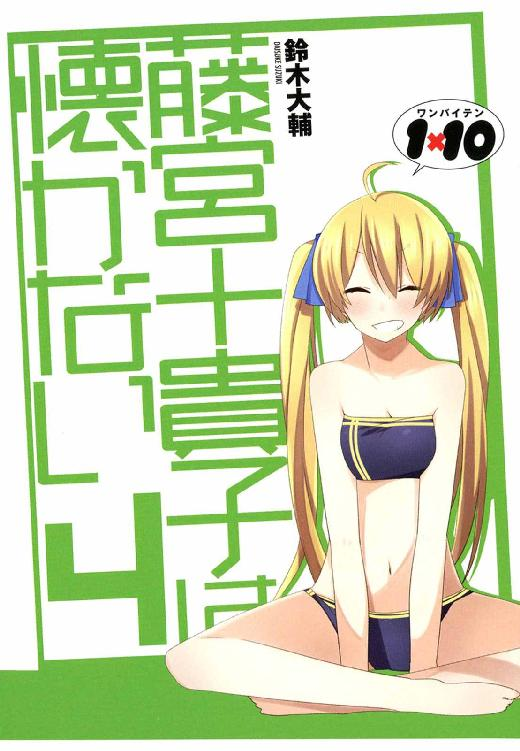
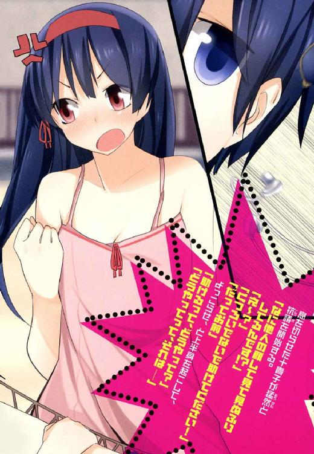
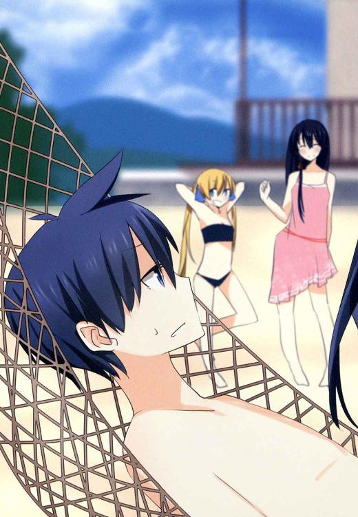
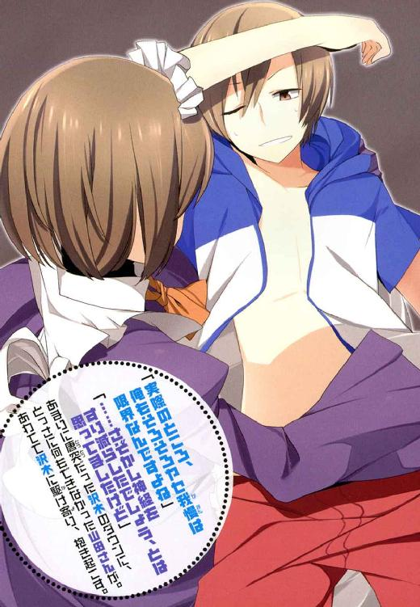
本作品の全部または一部を無断で複製、転載、配信、送信したり、ホームページ上に転載することを禁止します。また、本作品の内容を無断で改変、改ざん等を行うことも禁止します。
本作品購入時にご承諾いただいた規約により、有償・無償にかかわらず本作品を第三者に譲渡することはできません。
本作品を示すサムネイルなどのイメージ画像は、再ダウンロード時に予告なく変更される場合があります。
本作品は縦書きでレイアウトされています。
また、ご覧になるリーディングシステムにより、表示の差が認められることがあります。
口絵・本文イラスト ＰＡＮＤＡ
ＡＣＴ１ 藤宮空子は自重しない
藤宮空子が帰ってきた。
＊
長年にわたって音信不通だった彼女から『近々帰国する』との連絡があったのは、『世界一の魔法使い決定』の一報が届けられたその日のこと。
青天の霹靂だったこの一報に対し、藤宮家の住人たちがいかなるドタバタ喜劇をくり広げたかについてはこの際、詳細は割愛しよう。
一報を聞いた十貴子は、白昼に百鬼夜行を見たようにやたらと慌てふためいたけど。天馬と沢木とコレットは、十貴子の姉だというその人物のことを知らず、どんな人物なのかを説明されたところで実物を見たことがない以上は何の実感も湧かず──もちろんその人物が『世界一の魔法使い』になったことについては大いに驚いたものの、十貴子がさながら空襲から逃げまどう人たちみたいな顔して右往左往する理由が、びたいち理解できなかったわけで。
なにより帰国の連絡があった数時間後にはもう、当のご本人様が藤宮家の玄関先に立っていたから。
だから天馬にはわかりようもなかったのだ。
パートナーである十貴子が、どうしてそこまでうろたえるのかも。
藤宮空子という爆弾が、彼らの未来をどれほど引っかき回すことになるのかも。
＊
（似てるなあ）
というのが天馬の第一印象だった。
魔法バトルの影響で校舎が半壊し、星邦学園が当面のあいだ休校となった日から数日。
ろくな準備もできぬまま、なんら心構えもできぬまま、藤宮家の住人が総出で玄関の前に並ぶ中。
おっとりした足取りで現れたその女性を一目みた瞬間、天馬の頭に湧いた素直な感想がそれだった。
長くて黒い髪。
よく磨いた大理石みたいに白い肌。
細いけれど出るところはしっかり出ている、バランスのいいスタイル。
しゃん、と背筋の伸びた姿勢の良さ。
そしてもちろん、目鼻立ちの造形もよく似ていて。
どこもかしこも瓜二つ、ほんとうにそっくりな姉だった。
未来からタイムスリップしてきた十貴子だ、と言われれば、たぶん疑いなく信じてしまうのではあるまいか。双子だって中々こうはいくまいに。
「あら。皆さんそろってお出迎え？」
メイドの山田さんに荷物を預けつつ、玄関先にひしめいている面々の姿を見て。
藤宮家本来の住人である女性は『にこー』っと笑う。
そう。
瓜二つな姉妹の、しかし決定的な違いがこれだった。
摘んだばかりの綿花みたいにやわらかな笑顔。
雲の上をお散歩してるみたいな、ふわっふわした雰囲気。
野原でお昼寝している草食動物みたいな──そばにいるだけでマイナスイオンの恩恵を受けそうな、見ているだけで心地よい眠気に誘われるような。
妹の十貴子にはないそんな空気を。藤宮空子というひとは、全身からこれでもかと発しているのだった。
「ええと──あなたが沢木さんかしら？」
出迎えた五人の中でひときわ背の高い少年に笑いかけて、彼女は言う。
「まだお若いのにしっかりした方だと聞いてたけど。どうやら聞いていた以上の方のようね。頼もしいわ」
「初めまして空子さん」
沢木はにっこり、そつなく笑顔を返して、
「いろいろあってこちらにお邪魔しています。どうぞよろしくお願いします」
「いえいえ。こちらこそよろしくね、沢木さん。......ええとそれで、こちらの方がコレットさんね？」
と、次は五人の中でひときわ背の低い少女に笑いかけて、
「可愛い方だと聞いてたけど、ほんとのほんとに可愛らしい方ね。あたくし、あなたのような可愛い方が大好きなの。これからよろしくね？」
「............ふん」
初めて見る人物に対して、ほとんど小動物的な警戒を見せていたコレットだけど。空子の褒め言葉を聞いてあっさり気を許したらしい。
ぴりぴりしていた雰囲気をたちまち引っ込めて、
「ときこの姉にしては、『ものごとのどーり』ってやつがわかってるじゃない。ま、あたしに逆らう気がないってんなら、それなりに仲良くしてあげなくもないし。せいぜいこのあたしのキゲンをそこねないようにすることね」
「ふふ、ありがとう。......で」
順番が回ってきた。
「あなたが天馬さん、と」
「......ういす」
目の前に立って『にこー』と笑いかけてくる空子に、天馬は興味半分、警戒半分の視線を返す。
「妹とあなたとの関係はあらかた聞いてるわ。いろいろ大変でしょうけど、どうか仲良くしてあげてね？」
「ういす。善処するっす」
うなずくと、ふたたび『にこー』という笑顔が返ってきて。
（......普通の人だよなあ？）
内心で首をひねる天馬だった。
十貴子があれほどまでに慌てふためき、てんやわんやの大騒ぎをしていた理由が、いまいちピンとこない。
落ち着いた大人の女性だし。ふわっふわした笑顔を見ていると、こっちまで笑顔が湧いてきそうになるし。ケチをつけるところがないどころか、むしろものすごく付き合いやすそうな人に見えて。まして十貴子が狼狽するような要素なんて、どこにも見あたらないのだけど──
「ただいま、十貴子さん」
そして本日いちばんの笑顔を咲かせる空子。
「ざっと十年ぶりかしらね。良い子にしてた？」
「......おかえり、なさい」
姉とは対照的に、妹の表情は硬くて複雑だ。
緊張。
警戒。
畏怖。
懐疑。
その他もろもろの、陽性とは言いがたい感情が見え隠れする中に。ほんの少しだけ覗き見える喜び。
「十貴子さん」
「......なんですか。空子姉さん」
「あたくし、あまり歓迎されてないのかしら？」
「............」
「──そう。残念だわ。あたくしはこの十年間、来る日も来る日も十貴子さんのことばかり考えて生きてきて。今日という日をずっとずっと待ち焦がれてたのに」
ほろり、と。
笑顔のままの空子の目尻から、ひとすじの雫が。
「十貴子さんにとってあたくしは、十年間離れていたところで痛くも痒くもない、取るに足らない存在だったと──そういうことなの？ ぐすん」
「だってそれは！」
抑えていたのであろう感情を爆発させて、十貴子は声を荒げる。
「姉さんこそ、突然ふらりとどこかへ消えてしまって！ おまけにこの十年間、連絡のひとつもよこさずに！ そんなあなたにとやかく言う資格は──」
「それについては謝るわ。あなたに何も言わずに去ったのも、今日の今日まで何の連絡もできなかったのも、ぜんぶ理由あってのことだけど。でも、それはあなたを悲しませたことに対して何の言い訳にもならないものね。......ごめんなさい。この通りよ」
と言って深く深く頭を下げる。
十貴子は、それ以上なにも言えない。
「でも嬉しいわ」
頭を上げて空子。
「十貴子さん、ちゃんとあたくしの心配をしてくれたのね」
「そ、そんなの当たり前じゃないですか！ そりゃ姉さんはその、とても困った人だったし、わたしに対してその──いろんなことをしましたけど！ でも、それでも姉さんは姉さんですから！ わたしの大事な空子姉さんですから！」
「ふふ、ありがとう。その一言が聞けただけで、あなたと離れ離れになっていた十年間の時間を取り戻せた気がするわ」
「そんなことより！」
と、十貴子は話の流れを変えようとする。
「姉さんに訊きたいことがあります！ 『世界一の魔法使いになった』ってどういうことですか!? それも『協会』のお墨付きでって──いったいこの十年間、どこで何をやってたんですか!? どうやって『協会』にそんなこと認めさせたんですか!? いったい何がどうなって──」
「ふふ。せっかちな子ね」
くすくす笑いながら妹に近づいて、
「どうしてあたくしが『世界一の魔法使い』になったのか。どういうカラクリであたくしがその立場に立つことになったのか。......聞きたい？」
「あ、当たり前です」
「じゃあその前に」
──油断、だったのだろう。
後々になって思えばそうとしか考えられない。
だって十貴子は知っていたはずだから。
初対面の天馬はともかく、彼女は嫌というほど知っていたはずだから。藤宮空子がどういう趣味をもった人物なのかを。
「............？」
何を言われるのか、と待ち構えている十貴子に近づいて──それこそ肌と肌が触れ合うほどに近づいて。
「ただいまの『あいさつ』しないと──ね？」
そして事実、触れ合ったのだった。
肌と肌どころではなく、くちびるとくちびるで。
それも『触れ合う』というよりは『交接する』というレベルで。
『────っ!?』
その場にいる誰もが硬直する中。
ぴちゃり、ぴちゃり。
ぬちゃり、ぬちゃり。
十八禁スレスレの音だけが延々と響き渡る。
響き渡る。
まだ響き渡る。
──そのままたっぷり数十秒。
「ぷはぁ」
咲きかけの桜の蕾みたいなくちびるを、思う存分に蹂躙してから。ようやく空子は妹を解放して、
「十年ぶりだし、ついがっついちゃった。ごちそうさま」
「............」
「相変わらずとびきり美味しかったわあ......でも昔に比べてちょっと味が変わったかしら？ ね、あたくしが居ない間に何かあった？」
「............」
十貴子は答えられない。
硬直を通り越して石化してしまっている。
いつもニコニコ笑顔の山田さんもまた、笑顔のまま固まっていて。
冷静沈着を絵に描いたような沢木ですら言葉を発することができず。
十貴子大好きっ子で短気で考えなしのコレットもまた、ぽかんと口を開けたまま。
天馬もまた、この状況に対してとっさに対処できなくて。
いや、それもやむを得まい。
何というか......空子の狼藉が、あまりにもガチ過ぎたので。
もっと端的に言えば、ものすごくエロかったので。
あまりに想定外のことを、ここまで堂々とやられると。人間というやつは基本、まったくもって無力だったりするわけで。
「あら十貴子さん？ 立ったまま気を失ってしまったかしら？ ちょっと刺激が強すぎたのかしらねえ、とってもごぶさただったし」
「............」
「あらあらまあまあ。十貴子さん、こんなにお胸が大きくなって。形もキレイだし、ちょうどあたくしの手のひらにすっぽり収まるお手頃なサイズで......とっても揉み甲斐があるわねえ」
ふにふに。
うねうね。
誰も口を挟めないのをいいことに、笑顔で妹の胸部をこねくり回す姉。
「うん、弾力も申し分なし。しかもまだまだ発展途上みたいね。素晴らしいわ。あたくしが帰ってきたからには、責任をもってもっと大きく育ててあげますから。期待していてね？」
「............」
「あらあらまあまあ」
と、今度は十貴子のスカートをぺらりとめくって、
「これは頂けないわ。お下着にちっとも色気がないじゃないの。レースも飾りリボンもついてない真っ白な下着なんて、全然だめだめよ？ こういうのを身につけて良いのは小学生までです」
「............」
「んまあ。しかもこの手触り──木綿70％、ナイロン30％といったところかしら。せめてシルクであれば許容範囲だったのに。だめよ十貴子さん？ 藤宮家の人間がこんなものを身につけていては。あたくしが帰ってきたからには、こんな下着を身につけるのは許しませんからね。もっと可愛らしくて扇情的なものでなければだめです。今日にでもあたくしが見繕って、あなたにふさわしい逸品をそろえることにしましょう」
「............」
「あらあら、あたくしとしたことが。つい夢中になって『十貴子さん成分』を補給してしまったわ。なにしろ十年ぶりだもの、それも仕方ないわよね？ ともあれこんなところで続きをするのもなんだし、この先はベッドの中で──」
「く、空子お嬢さま！」
と。
そこでようやく金縛りの解けた山田さんが割って入って、白昼堂々の淫行を制止した。
必死に説得する山田さんと、まだまだ物足りないのか口を尖らせて抗議する空子。
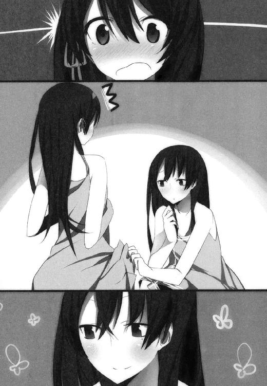
その後ろ姿を見つめながら天馬は。
十貴子が青い顔をして右往左往していた理由を、ここへきてようやく理解することができたのだった。
＊
「そんなに難しい話じゃないのよ」
陵辱の宴が一段落した藤宮家の、広々としたリビングで。
お上品に紅茶をたしなみながら、空子は微笑する。
「『協会』のお歴々に対して長年、秘密裏に、辛抱強く交渉した。その結果として『世界一の魔法使い』を決めるシステムができた。そしてこのあたくしが栄えある初代『世界一の魔法使い』の座についた──ただそれだけのことなのだから」
「空子お嬢さまは簡単におっしゃいますが。手順とその実現との間には、天と地ほどの差があるものでしょう？」
「そうは言うけれど、現実としてあたくしは協会のお墨付きをもらった上で『世界一の魔法使い』になったんだもの。その点は認めてもらわないとね」
リビングに雁首を並べているのは総勢六名。
魔法使いでもなければ藤宮家の住人でもない天馬と沢木は、ともに静観のかまえ。
一方のコレットは、新たに登場した魔法使いに対してどんな態度を取ったものか決めかねているらしい。敵意と好意の入り交じった視線で空子の表情を窺いながら、さしあたりは沈黙を保っている。
それで十貴子は何をしているかといえば──先ほどの一件をまだ引きずっているのだろう。身を隠すようにして部屋の隅に引っ込み、警戒心丸出しの目つきで姉を睨みつけながら、時おり顔を赤くしたり青くしたりしている。察するに、過去にあった様々な狼藉の記憶でも蘇らせているのだろう。いずれにせよ、姉と面と向かって意思の疎通ができる状態ではない。
というわけで。
藤宮空子との対話は、ほぼ全面的に山田さんが担当する形になっている。
「とはいえ、もちろん簡単な話ではなかったわ」
と、その空子がティーカップを置いて、
「あなたの言うとおりよ山田さん。なにせ十年の時間が掛かったんだもの。それはそれは並々ならぬ苦労があったわ」
「具体的にはどのような？」
「うふ。それは秘密よ」
「確かに空子お嬢さまは、協会のお歴々からの覚えも良かったですし。魔法使いという人種は面白おかしいことが大好きで、まして協会の長老方ともなればなおさらのこと。『世界一の魔法使い』がある日突然決まる、などという悪戯は、あの方々の好みにも合致するとは思いますが。それにしても今回の案件があっさり通るのは不自然です。いったい何をなさったのですか？」
「それも秘密よ。くすくす」
「十年間も音信不通だったのは、そのことと何か関係が？」
「残念。それも秘密なの」
「............。わかりました」
ふう、と大きく息をつく山田さん。
「質問を変えます。いったいどのような手管を使ったのかはともかくとして──なぜ空子お嬢さまが『世界一の魔法使い』を目指すことになったのですか？」
「というと？」
「十貴子お嬢さまが同じものを目指してらっしゃることは、もちろんご存じだったはずですよね？」
「ええもちろん。知ってたわ」
「ではなぜ？ どうして十貴子お嬢さまの邪魔をなさるのです？ 十貴子お嬢さまは努力に努力を重ね、滅多なことでは誰にも後れを取らないだけの魔法使いになって、世界一にもっとも近いとまで言われるようになったのに。どうしてそこに水を差すような真似をしたんですか？」
「あら。そんなの決まってるじゃない」
にっこり。
春のお花畑みたいな笑顔を咲かせながら、
「だってあたくし、十貴子さんに意地悪したかったんだもの」
「なるほど。では仕方ありませんね」
──いやいや。
そこ納得するとこか？
と、思わず口に出しそうになったけど。山田さん的には、特に不思議なことでも何でもなかったらしい。魔法使いという人種にとっては自然なことなのか。それとも藤宮空子という女性にとってはいつものことなのか。
「それでは空子お嬢さま。今日からはこちらの家で過ごされるので？」
「ええそのつもりよ。長かった漂泊もこれで終わり、しばらくはゆっくりと羽を伸ばすとするわ。ようやく十貴子さんといっしょに居られるようになったわけだし......うふふ、これからの毎日が楽しみね」
と言って、妹に向かって流し目を送る。
「............！」
びくっ、と身体を震わせ、子供みたいに縮こまる十貴子。
「空子お嬢さま」
「なあに？」
「十貴子お嬢さまが怯えていらっしゃいますので。どうかほどほどに」
「ふふ、そうね。これからはいくらでも十貴子さんを可愛がれるのだから。あわてる何とかは貰いが少ない、っていうものね。そう──じっくりたっぷり、ねっとりぐっちょり、頭のてっぺんから指の先まで。ゆっくり時間をかけて味わえばいいんだものね」
「............ッ!?」
「空子お嬢さま」
「はいはい。そんな怖い顔しないで頂戴」
空子に笑顔で抑えられ、あきらめ顔で吐息をつく山田さん。
珍しいな、と天馬は思う。
あの山田さんが──いつも微笑を絶やさず、どんな事態にさらされても小ゆるぎもしなさそうな彼女が。空子の相手をしている時に限っては、ひどくやりにくそうな様子を見せるのだ。
「ともあれ長旅の疲れもございますでしょう。まずはごゆるりとお寛ぎくださいませ。お部屋の用意はできておりますし、ご希望であれば何か食事でも──」
「ありがとう。でもその前に」
と、ふたたび流し目。
「な、なんですか姉さん」
「ふふ。そんなに怖がらなくてもいいのよ十貴子さん。ただちょっとだけお話があるの──お庭に出てもらえるかしら？」
「庭に......？」
「ええ庭に。うふふ」
妹の問いには答えず立ち上がり、空子は藤宮家の広大な庭園に出る。
いぶかしげに眉をひそめた十貴子が姉に続き、天馬をはじめとする残りの面々もそれに続いて、
「これだけは今のうちに済ませておいたほうが良いでしょうから」
妹とは数歩ぶんの距離を置いたところに立って、空子は微笑む。
「少しだけ時間をもらうわね、十貴子さん」
「それは構いませんけど。でもいったい何を......？」
「実を言うとね。あたくしはまだ『世界一の魔法使い』ではないの」
いきなり何を言い出すのか──空子の言葉に誰もが首をかしげる。
「姉さんがまだ世界一じゃない......？」
「だって、それはそうでしょう？」
奇異の視線にも空子はまったく動じず、
「もちろんあたくしだって、それなりに名の知れた魔法使いです。どんな相手とケンカになったって、そうおいそれとは後れを取ったりしないけど......でもそれにしたって、誰も納得はしてくれないでしょう？ あたくしがある日突然『世界一の魔法使いに認定されました』と言ったところで、誰も相手にしてくれないのではなくて？」
道理である。
どの業界だってそうだ。
何でもいい、たとえばボクシングを例に挙げるなら──どれだけ腕に覚えのある選手がいたとしても、そいつがいきなり『今日からおれが世界チャンピオンだ』と豪語したところで単なる道化でしかない。
それなりの手順を踏み、誰しもが納得する形でその実力を証明して。そこで初めてチャンピオンたる資格を得、万人から拍手喝采を受けるのだ。
「でも」と十貴子。「姉さんは確かに『世界一の魔法使い』になった、と。協会からそう告知されていますけど......」
「うん。あれはね、うそなの」
ぺろりと舌を出してあっさり言ってのける空子。
「う、うそ!?」
「うそ、というのも正確ではないわね......そう、いわゆる暫定的な、というやつなのよ」
「というと......？」
「つまり仮の認定というわけね。あたくしが本当の意味で『世界一の魔法使い』と認定されるには、とある条件を満たさなければならないの」
「............？」
「コミッショナー、というんでしたっけ？ その役割にあたる協会の方々が、これを発行してくれました」
と言ってパチリと指を鳴らすと、空子の目の前に青白い光が浮かび上がった。
いわゆる『新聞』──魔法使いたちの間でだけ用いられるゴシップ紙──によく似たそれには、何やらびっしりと文字が連なっていて。
「いわゆる認定書、というやつね。『世界選手権』の」
「世界選手権？」
「というわけで、手合わせをしましょう」
「えっ？」
状況を飲み込めてない妹に、姉がやさしく微笑みかける。
「十貴子さん。あなたは協会における今回のランク付けにおいて、世界ランク二位に位置づけられているの。つまり、あたくしの世界一の座に挑戦する権利はあなたが持っているというわけ。この世でただひとり、あなただけがね」
「────っ!?」
「ここにこれだけ証人が揃っているのだから、十分に勝敗の裁定は可能なはず。そもそもあたくしたち魔法使いは自らに噓をつけないもの。一戦交えれば、どちらが強いか弱いか自ずと明らかになるでしょう。今ここで始めても何も問題ないわよね？」
「ちょ、ちょっと待ってください姉さん！」
「安心して。ランキング二位の魔法使いには、いつでもランキング一位に挑戦する権利が与えられることになってるから。あなたが負けてもいつだって再戦することができるわよ」
「そういうことじゃなくて！ ちょっと待、そんな──」
混乱している十貴子だけど、それもやむを得まい。
十年間も音信不通だった姉から、ほんのつい先ほど帰国の連絡があって。
久しぶりに顔を合わせたかと思えば、ろくに再会の喜びをかみしめる間もなく『世界一の座をかけて戦え』なんて言われれば。誰だって取り乱すだろう。
でも。
だけど。
これは願ってもないチャンスと言えるのではないか？
魔法使いの『業界』のことはよくわからない天馬だけど、『協会』というやつはそれなりの権力なり発言力なりを持ってるはずで。そこが公式に認定しているとなれば、決して軽視していいことではない。
ここで空子に勝てば、十貴子は晴れて『世界一』だ。
あるいはそれは、十貴子が望んでいるような『世界一』ではないかもしれない。
彼女にとって『世界一』とは、ここでひとりの魔法使いを打倒することによって達成されるようなものではないのかもしれない。
だがしかし、である。
少なくともこれだけは確かに言えるはずだ。
彼女にとって──藤宮十貴子にとって、世界一の魔法使いとは。
いつ、どこで、誰と戦っても負けない。そういうものではなかったのか。
いつ、どこで、誰に挑まれても受けて立ち、そして勝つ。そういうものだったはずではないか。
それゆえ彼女はこれまでずっと戦い続け、証明し続けてきたのではないのか──世界一の魔法使いにもっとも近い魔法使いは自分である、ということを。
どうすれば世界一の魔法使いになれるのかわからず、でも少なくとも『ケンカを売られて負けるような魔法使いは世界一なんかじゃない』という信念だけはあったから。だからこれまでずっと不毛とも呼べる戦いを続け、無数の苦労を甘んじて重ねてきたのではなかったのか。
「さあ。始めましょう十貴子さん」
「ま、待って！ 待ってください！」
なのに十貴子は。
ケンカ上等の看板を掲げ、ちょっかいを掛けてきた敵をことごとく退けてきたはずの魔法使いは。
今日、この時に限って。
この大一番を目前にした時に限って。
天馬がかつて見たことがないほど──ほとんど無惨と言っていいほどに、取り乱してしまっている。
「──藤宮ッ！」
だから天馬は叫ぶ。
彼はもはや部外者ではない。
立派な当事者──否、運命共同体なのだ。
『世界一の魔法使い』という夢に向かって共に歩む、かけがえのないパートナーなのだ。天馬と十貴子は。
魔法のことはよくわからない。
十貴子と姉の関係がどういうものかもわからない。
だが。
相棒と認めた少女が、迷い、足をすくませているのなら。
せめてその背を押してやらねばなるまい。
彼女の戦いに手を出せない彼が、せめてその程度の役割を担ってやらねば。何をもって彼女の相棒を名乗れるというのか。
「藤宮ッ！」
もういちど叫ぶ。
それだけでわかるはずだ。天馬が何を言わんとしているか。
「────っ！」
顔をしわくちゃにして、十貴子がこちらを振り返る。
十分に、十分すぎるほどに。その目は理解している。ここで退く選択肢はない、ということを。
挑まれたのであれば立ち向かうしかない、ということを。
それでも彼女はかぶりを振り、肩を怒らせて抵抗する。運命の理不尽さにあらがうかのように。
「納得いきません！ どうしてわたしが姉さんと──そんなの協会の勝手で、わたしにはそんなのひとことも！」
「協会の勝手というよりあたくしの勝手ね。協会に根回ししてこの状況を作ったのはあたくしなんだから」
「だとしてもそんな、何も今日ここでじゃなくたって──」
「ごめんなさいね。あたくしは今日ここで、今すぐ世界一になりたいの」
「そんな、そんなの──」
「さあ。もうおしゃべりはおしまい」
すうっ、と。
変わらぬ微笑みを浮かべたまま、空子が一歩前に出る。
「始めましょう。たとえあなたが木偶のように突っ立っていても、あたくしは勝手に始めてしまうわよ？」
「────っ!?」
速くも遅くもなく。
そこらの道ばたを歩いてるのと変わらない歩調で、空子は近づいていく。
無謀かつ無防備な姉に対し、十貴子は同じだけ距離を取るべく退こうとして──だがそれに合わせて、空子が絶妙の呼吸で歩調を速めた。
「さあ。姉さんと遊びましょ？」
急迫。
もはや逃れられる間合いではない。
「くっ──」
先手を取ったのは十貴子だった。
素人の天馬から見てもそれとわかる、強烈な力の収束と急速錬成。
まったくノーガードで近づいてくる姉に向けて、十貴子はやけくそ気味に声を振り絞る。
「どうなっても、知りませんからッ！」
膨大なエネルギーが一気に解放され、フラッシュを焚いたような閃光が庭園の隅々を白化させ、破滅的な魔法が空子に向けて解き放たれ、そして──
ＡＣＴ２ 天馬と十貴子じゃ勝ち目がない
南の島に来ている。
＊
照りつける遠慮のない陽光。
手を伸ばせば触れられそうなほどくっきりした輪郭をもつ、巨大な入道雲。
どんな宝石よりも青く澄んだ珊瑚礁の海。
冗談みたいに真っ白な砂浜。
力強く根を張るマングローブ。
鮮やかな紅色に咲き誇るハイビスカス。
どこからどうみても文句の付けようがない。
紛う方なく、完膚なきまでに、南の島である。
「ふああ......」
ハンモックに寝そべりながら派手なあくびをして、天馬はさわやかな潮の香りを胸一杯に吸い込んだ。
鼓膜をくすぐるさざ波の音は、どこまでもやさしく、やわらかく。
吹き抜ける風は思いのほかよく乾いていて、火照った肌に心地よい。
──思えば混沌の日々であった。
一秒たりとも気の休まる時間はなかった、と言っていい。
ひょんなことから藤宮十貴子に命を救われ。
訳もわからないまま彼女の家で寝食を共にすることになり。
彼女とのあらぬ関係を疑われて、学園における天馬の評価はパラシュートなしのスカイダイビングみたいに落ちる一方。
さらには頭の足りないちびっこ魔法使いが、ことあるごとにちょっかいを掛けてきては迷惑して。
その巻き添えを食って負傷、入院の憂き目をみることも一度ならず。
苦難、困難、艱難辛苦の連続だった。
安息の日々、安寧の日々など、もう二度と訪れないのではないか、とさえ覚悟した。
だが、こうしてようやく今。
一条天馬にかけがえのない、心洗われる、夢のようなひと時が訪れているのだ。
それも望むべくもないほど Cool な南の島で。
「うふふ。お待ちなさいな十貴子さん」
「いやです！ ぜったい待ちません！」
......テーブルに置かれたトロピカルドリンクに手を伸ばし、ちびちびとストローで中身をすすりつつ。
ついでにとびきり色の濃いサングラスをかけ──あくまでも陽光を避けるためである。それ以外の理由はない。断じて──天馬は思う。
ここは太平洋上のとある海域に浮かぶ、藤宮家所有の島である。
一周するのに歩いて丸一日は掛かる広さがあるものの、定住している人間はただのひとりもいない。
珊瑚礁を削って造ったヨットハーバーと、そこに隣接するコテージ、それといくつかの発電施設。これらを普段から管理する使用人も常駐というわけではないらしく、天馬は彼らの姿を一度か二度しか目にしたことがない。
都会の喧噪を遠く離れ、人間よりヤシガニの数のほうがはるかに多いこの島での生活を切り盛りしているのは、言わずと知れたスーパーメイドの山田さんだ。
各種生活用品の仕入れや搬入。料理や掃除やベッドメイクなどの家事全般。
さらには近海に船を出して新鮮な魚介類を獲ってきたり、密林に分け入って南国の果物を採集してきたり。
果ては防災、防犯、哨戒、その他もろもろ。明らかに不要としか思えないものも含め、きわめて活動的に仕事をこなしている。
つい先ほども『伝説の海妖クラーケンを討伐してきます』とか言って、銛ひとつ握って大海原へと泳いでいってしまった。あの調子では日没まで帰っては来るまい。
そんなこんなで自分の仕事（らしきもの）に没頭する彼女の姿は、典型的な現実逃避に溺れている姿に見えなくもないけど。言うまでもなくそれは単なる錯覚だ。いつも冷静に状況を見渡し、その場その場で適切な判断を下せる彼女に限って、まさかそんなことあるわけがないのだ。断じて。
「にゃーっはっはっは！ ときこ、大人しくかんねんしなさいよね！」
「ふざけないでコレット！ 死んでもあなたになんか捕まるもんですかッ！」
「あらあら、だめよ十貴子さん。せっかくお友達が遊んでくれようとしてるんだから、ちゃんと応じてあげないと」
「いやです！ ここで足を止めるくらいなら舌をかみます！」
......天馬はテーブルに手を伸ばし、携帯音楽プレーヤーを起動する。
イヤホンをセットしてボリュームを一杯にすると、せっかくの潮騒がたちまち台無しになってしまった。
でもいいのだ。
たった今、天馬はなぜだか音楽を聴きたい気分になったのだ。
それも周囲の一切の雑音をかき消してくれる、とびきり激しいヘヴィ・メタルを。
無骨でギスギスした鋼鉄のサウンドは、のんびり穏やかであるべき南の島にはそぐわないだろうけど。でもあえてそのギャップに身をゆだねることが一種の陶酔をもたらし、浮き世のすべてを忘れさせてくれるはず──
「ちょっとあなた!?」
イヤホンをむしり取られた。
ついでにサングラスも奪い取って砂浜に叩きつけながら、息を切らせた十貴子が猛然と抗議を開始する。
「なに他人の顔して見て見ぬふりしてるんです!?」
「え～？」
「くつろいでないで助けてください！」
「だってお前」
よっこらせ、と上半身を起こして、
「助けるって、どうやって？」
「どうやってって、それは──」
「そりゃね？ おれだってね、手を差し伸べるのはやぶさかじゃないですよ」
悟りきった顔で言って聞かせる天馬。
「お前はおれの相棒だ。同じ目標に向かって走ろうとしてる大事な仲間、いってみりゃ同盟者だ。そのお前が助けてくれ、って言うんならね？ そりゃ全力でもって助けるのが義理ってもんですよ」
でも、だがしかし、である。
十貴子の背後から足音を殺して忍び寄る、ふたりの襲撃者に視線をやりながら、
「ちっこいのだけならまだしもさ。お前の姉貴もいるとなると──おれにはどうにもできねえって。正直」
「ふふ。正しい判断ね」
がしっ、と。
何かの拷問器具のような按配で、空子が十貴子の手足を拘束する。
そして「ひっ!?」と息を呑む妹の耳元へ甘い吐息を吹きかけながら、
「いけない子ね。姉さんが『待って』って言ってるのに」
「そーよそーよ！ ときこはホントだめだめよねっ！」
さらにコレットがうれしそうに腰のあたりにしがみついて、
「あたしの言うことも、くうこの言うことも聞かないあんたには、しっかりおしおきをしてあげるわっ！」
「そうよそうよ～。たっぷりおしおきよ～」
空子が楽しそうに唱和する。
「さあ十貴子さん。あっちへ行ってお着替えしましょ？」
「いやです！ あんな──あんな破廉恥な水着なんて、誰が着るもんですか！」
「あたしが用意したフリルたっぷりの水着も着るのよっ！」
「あんな少女趣味の水着、身につけていいのは小学生までです！ ちょっと放して！ 放してください！ はーなーしーてーッ！」
身をよじらせて抵抗するもむなしく、十貴子はコテージのほうへ連れ去られていった。
あとには砂浜をおだやかにくすぐる潮騒だけが残る。
「............」
やれやれ、と首を振り、ふたたびハンモックに寝そべる天馬だけど。
一分もたたずに重苦しい動作で起き上がり、ため息をついた。
「......ま、そろそろいい加減にしないとな、おれも」
現実逃避もこのあたりが限度だろう。
ただの高校生でいればよかった少し前ならいざ知らず、今の天馬にはそんな贅沢は許されない。
が、しかし、である。
「口を出しにくいんだよなあ。なんせ姉と妹がやることだし」
コレットの十貴子大好きっぷりはいつものこととして。
空子のアレは、明らかにやりすぎの感はあるにしても。基本としては、姉妹の間にできた長年の空白を埋めるためのスキンシップなのだろうから。血縁でもない天馬があれこれ言うのは、ちょっと筋が違うような気もするし。
ましてあの十貴子が手も足も出なかった相手となれば。たとえ天馬が実力行使に出たところでろくに効果はあるまい。
「......どうしたもんかな、ほんと」
大きくため息をついて、心のくじけた天馬はふたたびハンモックに背を預ける。
人間どもの苦悩などどこ吹く風で、潮騒は穏やかな音色を奏で続けている。
＊
水着というより紐だった。
「どうかしら天馬さん？ かわいいでしょう？」
「はあ......」
三十分後。
空子とコレットに両脇を固められ、ほとんど連行されるような形で天馬の前に現れた十貴子は。
有り体にいって、羞恥プレイをさせられていた。
「十貴子さんのしなやかな身体つきを強調する、この水着のライン取りの素晴らしさときたら──まるで十貴子さんのためにあつらえたみたい。ね、そう思うでしょう？」
「はあ......」
とでも返事するしかない。
というか、あまりにも際どすぎてまともに姿を見られない。
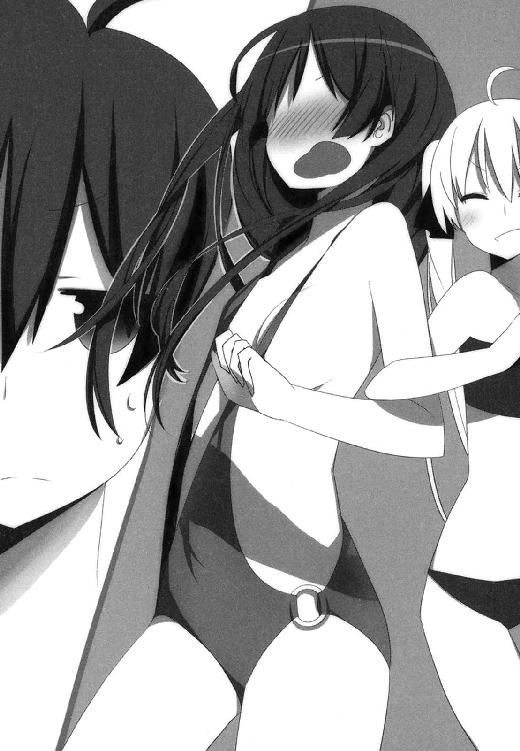
紐と表現するのが過激ならリボンと言い換えてもいいが、どちらにしても大概な水着には変わりなかった。というか肌面積の数パーセントも覆うことができない布きれを、着衣のカテゴリに分類していいものかどうか。たぶん世界中のどんな辞書を引いたって、水着の項目にこんな物体は載ってないはずである。
街中でこんなもの着た日には──いや、たとえプールや海辺で着用したところで、警察のお世話になることは避けられまい。販売店もわいせつ物陳列罪でお縄だろう。
「......うううううう～っ」
そして天馬が目をそらし続けているという事実がまた、十貴子にとってはよりいっそう屈辱を深める結果になっているらしい。真っ赤に染まった顔をうつむけて、引き結んだくちびるから言語にならない唸りを漏らしている。
「あら。いまいち反応が鈍いわねえ」
煮え切らない天馬の返事に、空子はくちびるを尖らせて、
「こんなにかわいいのに......ねえ？」
「ひゃうっ!?」
十貴子がヘンな声を上げる。空子が背後に回り、両腕をそっと胴に絡めたからだ。
「ほら。スタイルがいいだけじゃなくて、こんなにお肌もすべすべで。それにこの子、とっても感じやすいのよ？」
「ちょっ、姉さ、やめ──」
むにむに。
さわさわ。
妹の身体のあちこちを、妙に艶めかしい手つきで触れる姉。
「ほらほら天馬さん。見て見て。ほらほら」
「はあ......」
言われてやむなく視線をやると、十貴子の水着がさらに大変なことになっていた。
身をよじらせた拍子にズレてしまったのだろう。紐水着が本来隠すべき場所が露わになって、口にするのが憚られる感じのエロスと情熱がパッショネイトな融合を果たした末にデインジャラスでヴィヴィッドなランペイジの予感を、
「っ!?」
あわてて目をそらす。
いかに天馬が十六歳の健康な青少年であり、その手のことにも大いに興味があるとはいえ、あまりにも刺激が強すぎた。自主規制、自主規制。
「さあ！ それじゃ次はあたしの番よ！」
と、今度はコレットが鼻息荒く、
「次はあたしの選んだ水着を着てもらうから！ さあときこ、おとなしくこっちへ──」
だだっ、と。
わずかに生じた隙を巧みについた十貴子が、物も言わずに逃走した。
「あらあら十貴子さん。また逃げちゃったわねえ」
「ぬう、ときこのやつ！ このあたしがせっかく選んであげたのに！ その罪、万死に値するわ！」
「じゃあコレットさん。悪い子にはおしおきしちゃう？」
「おしおきする！」
「追いかけちゃう？」
「追いかける！」
「うふふ、じゃあさっそく追いかけっこをしましょう。どちらが早く十貴子さんを捕まえられるか、競走よ？」
「ふーんだ、今度はあたしが勝つんだからね!?──こらまてときこー！」
コレットはチョロＱみたいにすばしっこく。
空子はふわふわのんびりと、でもそのくせ狩りをする肉食獣みたいな足取りで。
あっという間に逃亡者を追って姿を消してしまった。
「............」
天馬はふたたびハンモックに背を預け、海から吹き寄せる潮風に身をゆだねながらまぶたを閉じる。
──さて。
現在の情勢はおおむねごらんの通りだが、もう少し状況をクリアにしておこう。
この南の島に連れてこられて、すでに五日が経っている。
むろん、連れてきた人物は他でもない。
「南の島へ行きましょう」
と空子が言い出したのは、彼女が妹と対戦して圧倒的な勝利を収めた、その直後のこと。
想定外の展開、一方的な結果に終わった戦いに、誰もが目を丸くする中。戦いが始まる前とまったく変わらない微笑で、
「どうせ長旅の疲れを癒すなら、もっとのんびり羽を伸ばせるところがいいわ。──山田さん」
「............」
「山田さん？」
「......えっ？ あ、はい」
茫然自失していたメイドさんへ、空子が変わらぬ微笑で、
「もうあらかた手配は済んでいるから。あとはこちらで準備をして出発するだけよ。よろしくって？」
「............。かしこまりました」
ここは指示どおりにするしかない、と踏んだのだろう。山田さんはいつもどおりの様子に戻って一礼し、屋敷の中へ戻っていく。
いまだに敗北のショックから抜け出せずにへたり込んでいる、十貴子を残して。
その後、南の島に到着するまでにいろいろな騒動はあったのだけど。
詳細はさておき、結論だけをかいつまんで挙げていこう。
まず現状その一。
藤宮家の実権が、名実ともに藤宮空子の手に渡った。
当然と言っていい。
藤宮家における藤宮の血族は、これまでは十貴子ひとりだったけど。十貴子よりも空子は年上で、しかもすでに成人している。さらに実力の上でも、空子は十貴子の上に立つことを証明したわけで。十年ものあいだ家を空けていたとはいえ、これは妥当な流れだろう。そもそも異を唱えようにも、空子の意見には誰も口を挟めない──というのもまた、当然の帰結といえる。
そして現状その二。
藤宮空子は現在、『世界一の魔法使い』として君臨している。
これについてはもちろん、天馬にも言いたいことはたくさんある。
聞くところによれば、世界一を決めるシステムは、空子が個人的に提案した案を『協会』が認定しただけのものであり、しかも空子はその座につくにあたって、十貴子をただ一度打倒したのみ。それだけで世界一を決めるというのは、いかにもせっかちすぎるのではないか。
とはいえ、だ。
『協会』が空子の世界一を支持し、その協会を多くの魔法使いが支持している以上、その座には十分以上に価値がある。少なくとも天馬がどうこう言ったところで覆ることじゃないのは確かだ。であればこそ無視も黙殺も不可能だし、そうなれば何らかの対処が必要、ということにもなる。
そして現状その三。
ここまでの流れを受けて今現在、もっとも天馬の頭を悩ませているのが──
「ちょっとてんま！ 起きなさい！」
耳になじんだロリボイスに、嫌々ながら目を開けると。
そこに羞恥プレイの第二弾が待ちかまえていた。
「ほら見なさい！ とってもかわいいでしょう!?」
「......いや。かわいいというか何というかね......」
どんなもんだと胸を張るコレットに対し、天馬は言葉を濁すしかない。
そりゃそうだ。
どピンクの水玉模様をベースに、これでもかというほど白いフリルをたっぷり盛ったロリ全開のワンピース水着を着せられた十貴子を見て、いったいどんな感想を口にすればいいというのか。
「なにあんた!? まさかこのあたしの選んだ水着に何かもんくでもあるの!?」
「いやまあ、ねえ？ 文句というか何というか......いくらなんでも年齢に無理があるというか......」
コレットに凄まれて言葉を濁す天馬だけど。その点は、当人もイヤというほど自覚していたようだ。もはや屈辱のあまり声も出ない、といった様子で顔を真っ赤にしていた十貴子が、涙目で『きっ！』と睨みつけてくる。
天馬としては『くわばらくわばら』と目を逸らすしかない。
とはいえ、何というかまあ。
さっきの紐水着も相当なものだったけど、今回のヤツもまったく引けを取らない酷さであって。あまり気を遣いすぎて前言を撤回するのも、それはそれでいっそう屈辱なんじゃないかと思うのだけど、そのあたりどうなのだろうか。どうなんでしょうか。
「まあいいわ！ どっちにしたってこれで勝負アリだもんね！」
そんなこんなで態度を決めかねている天馬にはお構いなしで、鼻息荒くふんぞり返るコレット。
「明らかにあたしの選んだ水着のほうが似合ってるし！ どうみてもくうこの負けよね、これは！」
「あら。それは納得しかねるわよコレットさん」
ニコニコ笑顔のまま空子が苦情を述べる。
「あたくしの選んだ水着だって、とっても似合っていたわ。十貴子さんのこの世の者とは思えない愛らしさを、ギリギリの際どさで引き立てることができる──あの水着は十貴子さんにとってベストのチョイスだったはずよ？ 今回の『どっちが十貴子さんの水着を選ぶにふさわしいでＳＨＯＷ』は、断然あたくしが勝ってるはずだわ」
「そんなことない！ フリルのほうがかわいかった！ あたしほどじゃないにしても、ときこはまあまあの見た目だし！ その見た目を引き立てるのは、ぜったいあたしの選んだ水着だし！」
「いいえ、あたくしの選んだ水着のほうがぜったい良かったもの。いくらコレットさんの言うことでも、ここは断然譲れないわ」
「あたしだって譲らない！」
「困ったわねえ......あ、そうだ。いいアイデアを思いついちゃった」
「いいアイデア？」
「ねえ、もう一度勝負をやり直さない？ 実はあたくし、他にも十貴子さんに着せてみたい水着があったの。ぜひそっちも試してみたいわ」
「あ！ そういえばあたしもあった！ 他にもかわいい水着！」
「コレットさん、それも十貴子さんに着せてみたくない？」
「着せてみたい！」
「じゃ、もう一度勝負する？」
「勝負する！」
「ふふ、これは面白くなってきたわね。──というわけで十貴子さん、もう一度あちらで水着のお着替えを──」
「じょ、冗談じゃありません！」
言われ放題になっていた十貴子が、ついにキレた。
「ぜったいイヤです！ い、今まででも舌を嚙みたくなるくらいの格好をさせられてきたのに！ ここからさらになんて──ぜったいに、どんなことがあってもイヤです！ 何が何でもどこまでいっても願い下げです！」
「まあ。それは困ったわねえ」
にっこり笑顔のまま眉をハの字に下げる空子だが。
「でもごめんなさい。あたくし、万難を排してでも十貴子さんに別の水着を着せたいの。わかってちょうだいね？」
「────っ!?」
「さあ。もう一度お着替えしましょ？」
「イヤです！ も、もう我慢できません！」
叫び、大きく跳びのいて距離を取った。
その顔には悲痛なまでの決意がにじみ出ていて。
「これ以上わたしを貶めるのであれば！ たとえ姉さんが相手でも容赦しません！」
そして跳びのくのと同時に練り上げた力は、わずかな呼吸で練り上げたとは思えないほど鋭く、激しく、
「飛び散ってくださいッ！」
間髪いれず。
解放された魔法は破壊の力そのものとなって荒れ狂い、空子を一息に飲み込もうと──
「うふ。無駄よ十貴子さん」
が、しかし。
笑顔の空子が軽く腕を掲げ、なにやら呪言らしきものをわずかに唱えただけで。
強烈無比であるはずの十貴子の魔法は、瞬く間にかき消されてしまう。
「うふふ。この程度じゃあたくしを倒すことはできないわねえ？」
「うぐっ......」
「さ。大人しくお着替えしましょ？」
「む、ムチャクチャです！ デタラメにも程があります！ おかしいでしょうどう考えたって！ どうやってそんな、わたしの魔法が一瞬でかき消されるなんて、そんな──」
「うふ。十貴子さん？ うふふ」
「や、やめ、近寄らないで！」
「にゃはははは！ ときこよわーい！ ちょうしょぼーい！ さあ、負け犬は負け犬らしく、おとなしくオモチャになりなさい！」
「ちょ、やめ──きゃあああああああ!?」
............。
ごらん頂けただろうか。
そう。いま現在、天馬の最大の頭痛の種になっているのは。
『世界一にもっとも近い魔法使い』とまで言われていた十貴子が、空子に対してはまったく歯が立たないこと──まさしくそれに他ならないのだった。
＊
「確かにわたしたちの『業界』ではよくあることです」
その日の夜、コテージのテラスにて。
夜風に当たっている天馬の許へやってきた山田さんは、そう言ってため息をついた。
「ある面ではやたらに強いかと思えば、別のある面では奇妙なほど弱い。じゃんけんのグーチョキパーみたいなもの......とまで言ってしまうとさすがに言い過ぎですけど。でも魔法使いというものは、往々にして得手不得手が明確といいますか......」
「なるほど。ちょっとわかりますねそれ」
山田さんが持ってきてくれたトロピカルドリンクをすすりながら、天馬も同意する。
「コレットあたりを見てると特にそうですよね。なんせ魔法使いってやつは『自己中心的で個人主義的で、ひいては享楽主義的で放埒的で、時どき厭世的な面まである人種』......でしたっけ？」
「ええ。魔法使いという人種には、言ってみれば気分屋なタイプが多くて。とてもケンカの強い魔法使いが、普通の魔法使いにコロリと負けてしまう──みたいなことは珍しくないんです。もっとも十貴子お嬢さまはそういうタイプではなかったからこそ、当代最高の魔法使いみたいに呼ばれていたわけなんですけど......」
ふう、と。
ふたたび大きなため息。
ちなみにいつものメイド服に隠れてしまってあまりわからないけど。連日何時間も水着で海に入っている山田さんは、日焼け止めの上からもほんのり肌に色がつき始めていて。ちょっと水着がズレたりすると、焼けた部分と白い部分とのギャップがとてつもなくいやらしかったりするのだけど。まあ、この際はまったくもってどうでもいいことである。
共に世界一を目指そうとした矢先に十貴子が姉に完敗を喫するという、まさしく出鼻をくじかれる事態になったことについては──まあ、日焼け云々よりは重要な問題だけど、それとてそこまで深刻なことではない。天馬だって、もとより簡単に達成できる目標だとは露ほども思ってなかったわけだし。
もっと言えば、である。なぜか妙にコレットと意気投合してしまった空子が、ふたりして徹底的に十貴子をオモチャにして遊び倒していることもまあ、天馬としては緊急性の高い問題ではない。そこは姉妹同士の、あるいは古馴染み同士の問題であって、天馬が介入するのも筋違いという気がしなくもないし。
ゆえにここで重要なのは。
どうあっても軽視できない事実とは。
「......やっぱ勝てませんかね？」
「難しいですね。天馬さんもご覧の通りです」
「どうしましょうね」
「どうしましょうねえ......」
十貴子と空子の間にある、決定的な実力差。
これを一体どうやって覆せばいいものか。
「というか十貴子お嬢さまって、空子お嬢さまのことが苦手なんですよね」
「あ。やっぱそうなんすか？」
「ええ。それはもう」
「空子さんのことが嫌い？」
「いえ、そういうわけではないんです。むしろ逆です。十年前に空子お嬢さまがふらりとどこかへ消えてしまった後も、八方に手を尽くしてずっと姉君のことを捜してましたし。ただ......」
ふう、とまたしてもため息。
近ごろの山田さんは、一分おきぐらいの間隔でため息をついてる気がする。
「とにかく空子お嬢さまは、ひたすら十貴子お嬢さまを可愛がっていまして。それが行きすぎてまあ、ああいうことになるわけですけど」
「はあ。ああいうこと」
「ええ。ああいうことです」
「まあ......シスコンですよね。ぶっちゃけ空子さんって」
「ええ。とても」
「あれだけ強烈に愛情表現されると、藤宮としても対処に困るでしょうね」
「何しろ十年間も離れ離れでしたから。空子お嬢さまとしてはある種タガが外れてしまってる状態なんでしょうね。禁断症状を思う存分に解消しているというか」
「ていうか空子さんって、この十年間なにをしてたんでしょうね。それだけ妹が大事ならずっと傍にいれば良さそうなもんなのに」
「さあ......わたしにはわかりかねます。そういうことはあまり口になさらない方なので」
「ふむう」
腕組みして少し考えてから、
「まあそれはそれとして、です。仮に空子さんのアレが解消されて、藤宮がもうちょっとまともに動けるようになったとして。その条件だったら、もうちょっとまともな勝負になりますかね？」
「いいえ、それでも厳しいでしょう。今の十貴子お嬢さまが勝つ可能性は、万に一つもないかと」
「ていうか、いくらなんでも最強すぎでしょ空子さん。反則ですよあれ。あの藤宮が手も足も出ないとか、チートにも程があるっしょ」
「それはわたしも同感ですけど、事実は事実です。いっそのこと、わたしたち全員が悪い夢でも見ているのであればいいんですけどね。どんな悪夢でもいずれは醒めてくれるものですし」
ふう、と。
今度はふたりそろってため息。
「よう。苦労してそうだな天馬」
と、そこへ聞き慣れた声が。
「......よう。そっちはお気楽そうだな」
「まあな。コレットが遊び呆けてると、こっちは基本ヒマだからな」
天馬の古い親友にして、コレットのパートナーでもあり、藤宮家の同居人でもある少年。
「とはいえ、せっかくこんないい場所に連れてきてもらったんだ。せいぜい有効に時間を使わせてもらうとするさ」
沢木悠太郎が肩をすくめるのを、天馬は苦い顔で見ながら、
「ちぇ。ほんとにお気楽そうだなおい」
「実際お気楽なんだよ。コレットはひたすら藤宮に絡んでるだけで、俺にはまったく出る幕がないしな」
「つってもさ、お前だってコレットと組んで世界一を目指すんじゃなかったっけ？」
「目指してるさ、もちろん。でもまあ現状、お前らが足踏みしてくれてるおかげで、こっちは少なくともお前らに先を越されることはないわけだから。じっくりとやらせてもらうことにするさ」
「むう......」
「ま、どのみち様子見だよ今は。あの空子さんって人のことも、いまひとつよくわからないし。よくわからない人を相手に回すには、それなりの手順が要るもんだ。そうだろう天馬？」
道理である。
藤宮空子という、青天の霹靂の爆弾に対して。いかなる戦術と戦略をもって対処するのか。
そのためには一にも二にも情報収集。それ以外にあるまい。
＊
「わたしもそれほどよく知ってるわけじゃないんです」
翌日。
コテージそばのビーチにて。
「もともと姉さんとは十も歳が離れてますし。それに姉さんには昔から放浪癖があって──まあこれは藤宮家の遺伝みたいなものなんですけど、とにかくあまり家には居着きませんでしたから」
空子とコレットが仲良くお昼寝しているスキをねらって、天馬と十貴子はコソコソと密談中。
「時どきふらっと帰ってきては、いろんな国のお土産をくれたり、珍しくて面白いお話をしてくれたり。それとあとは、わたしにその──た、たくさんのあるまじきことを、あ、あんなこととか、こんなこととかを......っ」
「あーいや。いいよ。そんなにトラウマえぐるんなら、無理してしゃべらなくて」
「............。すいません」
たった数日でげっそりやつれてしまった十貴子が、力なく肩を落とす。空子の過激な愛情表現は、妹の気力と体力をすっかり奪ってしまっているのだった。
「とりあえずさ、知ってる範囲でいいから教えてくれよ。空子さんのこと」
「ええ。話せることはなるべく話すつもりです」
こくん、と頷く姿はひどく頼りなく、しおらしく。
ちょっと前までは天馬に対して何かとキツく当たってきたことを思えば、別人みたいな変貌っぷりである。
「空子姉さんは......見た目こそわたしとよく似てますけど、中身はぜんぜん違ってて。物腰はやわらかいし、いつもふわふわ笑ってるけど、自分の意見は断固として押し通すタイプで......」
十貴子の話を要約すると、である。
藤宮空子という人は、それはもう絵に描いたような『魔法使い的性格』の持ち主であるらしい。
どこかのメルヘンの国出身の人みたいにふわっふわしてて、まさしく妖精とか精霊みたいな人だけど。その内実は『無邪気な暴風雨』とでもいうか。
主義主張を笑顔でごり押ししてくるし、それでも押し通せなければ、それはそれは悲しい顔をして周囲を困らせるとか。
さらにそれでも通らない時は、悲しい顔のまま反対意見をあっさり轢殺してくるため、むしろ物腰がやわらかいぶんだけタチが悪い、みたいな。
それでも極端な天然さんであるゆえあまり反感は買わず、さらに言えば彼女のごり押しはそのほとんどの被害を十貴子ひとりが受けることになる──より具体的に言えば、おおむね妹にセクハラする時に限ってのみ無理難題を押し通してくるため、いわば『触らぬ神に祟りなし』『あの子がやるならしょうがない』的な扱いを受けることが多いというか。
しょせんは対岸の火事と日和見するほど他人事ではないにせよ、実際に火の粉が降ってくるわけでもない十貴子以外の面々にとっては、強いて空子の横暴に異を唱えるのもためらわれる、とでもいうか。
『自己中心的で個人主義的で、ひいては享楽主義的で放埒的で、時どき厭世的』。
つまりは魔法使いの中の魔法使い。
それが藤宮空子なのである。
「なんつーか......あれか、コレットをもっと迷惑にした感じか」
「ええ。まさにそんな感じですね」
「コレットだけでも十分すぎるくらい迷惑なのに、今じゃコンビ組んでやがるしな......」
「そうなんですよね......」
ふう、とそろってため息。
「空子さんて、昔からあんなに強かったわけ？」
「ええ、それはもう。いわば『元祖天才』というやつです。あくまでも伝聞で、実際に見たわけじゃないですけど。小学校に上がるころには大人顔負けの実力で、並の魔法使いが束になっても敵わなかったとか」
「そうかあ。じゃあ大人になった今は、もっとすごくなってるのか」
「でもそれにしたって、ですよ？ わたしだってこの十年間は必死にやってきて、それなりに結果も出してきたはずなのに。なのにあんな、赤子の手でもひねるみたいに......信じられません、本当。何なんですかあの強さは。はっきり言って異常です。ろくに術式も練らずに相手の魔法をフルキャンセルなんて、普通に考えてありえる話じゃないんです。あんなの相手にどうやって勝てって言うんですか？」
「いやまあ、おれに言われてもわからんけどさ」
十貴子とて、その才能は天賦のものと賞賛された魔法使いのはずだ。
その彼女をしてこれなのだから。空子の桁外れっぷりがいかほどかは、想像するに難くない。
（しかしまあ、実際どうしたもんかな）
すっかり意気消沈し、自信喪失してしまったらしい十貴子を見ながら思う。
藤宮空子とは、いったい何者なのか？
幼いころから天才と呼ばれていたにせよ、十貴子をして反則級といわせるほどの高みに到達してしまった彼女は。どうして十年間も消息不明のままでいたのか。
その十年間、いったいどこで何をやっていたのか。
どこかで秘密の特訓でもしていたのか？
だとしても、どうして今になって帰ってきたのだろう？
彼女はいったい何をしたいのか？
その目的は何なのか？
「あのさあ藤宮」
「はい？」
「空子さんってさ、けっきょく何がしたいわけ？ あの人がアホみたいに強いのはわかったけどさ、なんでわざわざ『世界一の魔法使い』なんてものになったんだろ？ でもってなんで今さら帰ってきたんだろね？」
「──あら。そんなの決まってるじゃない」
と、微笑を含んだ声が。
空から。
「ひゃっは──────ッ！」
さらにそれとは別の、やたら元気の有り余った声も降ってきたかと思うや。
頭上から落下してきたふたつの人影が、砂ぼこりを上げて着地する。
「ひゃっは──────ッ！ にゃはははは！」
「ひゃっはー。うふふ」
「............。何してんすか」
奇声をあげるコレットと空子を、半眼で見ながら問うと、
「あら。似合ってないかしら？ この服」
「いやまあ。似合ってるっちゃ似合ってますけど」
むしろ水着の上に毛皮の貫頭衣という意味不明なスタイルが、この魔法使いたちにやたらとしっくりくることが不思議でしょうがないんだけど。
「どこから持ってきたんです？ そんな衣装」
「うふ。こんなこともあろうかと思って、前々からずっと用意してたの」
「はあ。『こんなこともあろうかと』の意味がイマイチよくわかりませんけど。つーか何なんすか、一体。その格好」
「うふ。これはね、山賊をイメージしているのよ」
「山賊て......何でまた」
「ばーか！ そんなの決まってるじゃん！」
と、そこでコレットが動いた。
ふたたび「ひゃっはー！」と奇声をあげて跳躍、十貴子の背後に回り込む。
「山賊のお約束といえば！ 若いオンナをさらって手込めにする──それしかないでしょ!?」
「────ッ!?」
あわてて逃げようとする十貴子だが、遅い。
コレットに気を取られた隙に空子が間合いを詰め、どこからか取り出した荒縄であっという間に妹をぐるぐる巻きにする。
さらに猿ぐつわまで嚙ませられた十貴子を、軽々と肩に担ぎ上げて、
「天馬さん。さっきの質問にお答えするわね」
ばばばっ、と。
コレットと並んで、どこかのダークヒーローみたいにカッコよく飛び退り、
「あたくしが藤宮家に帰ってきた理由──それは十貴子さんをたくさん可愛がって遊ぶため。そして『世界一の魔法使い』になりたい十貴子さんの邪魔をして、意地悪をするためなのよ。うふふ」
ただしセリフがぜんぜんカッコよくなかった。
むしろ考えられる限り最低のセリフだった。
「うふ。感動して物も言えないみたいね。うふふ」
「いやまあ。その真逆なんですけど」
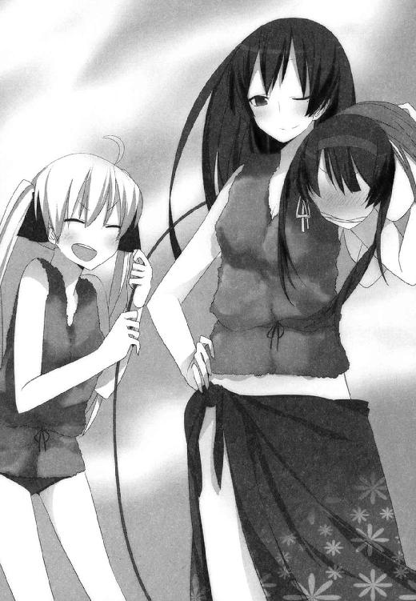
「あら、そっけないわねえ。そんな風に意地を張ってると、十貴子さんとイチャイチャする仲間に入れてあげないわよ？」
「いや。入りたくないっすその仲間。むしろ全力で遠慮します」
「まあそうなの？ もったいないわねえ。十貴子さんって感じやすい上に、こう見えてとんでもないドＭだから。たっぷりいじってあげると、とっても悦ぶのに」
「むー!? むむ、むむむむむ────ッ！」
姉の肩の上で身をよじりつつ、目をむいて唸り声を上げる十貴子。
『姉さん！ 根も葉もないデタラメを吹き込まないでください！』
とでも抗議しているのだろうけど、空子はどこ吹く風のほんわか笑顔で、
「それじゃ、あたくしたちはもう行くわね。悪い山賊として十貴子さんをさらって、たくさん『ひゃっはー』しないと」
「はあ......」
「そうそう。この遊びはコレットさんが提案してくれたの。昔見たマンガか何かでこういう場面があったそうよ。とても楽しいお遊びだし、あたくし気に入っちゃったわ。ありがとうねコレットさん」
ほめられて『えへん！』と薄い胸を張るちびっこを、天馬は白い目で見つつ、
「あのー空子さん」
「何かしら？」
「すいませんけど、もうちっとこう、遠慮してくれません？」
「遠慮というと？」
「なんつーか......手加減というかなんというか。そういうの、してほしいんですけど。藤宮に対して」
「うふ」
何やら含み笑いをする空子。
「天馬さん。あなた十貴子さんのパートナーとして、十貴子さんを世界一にするのを目標にしてるんだったわね」
「ええまあ。そうですけど」
「十貴子さんは自らの命の大半をあなたに預け渡した。つまりあなたと十貴子さんの関係は事実上の一心同体、ある意味では分身と呼ぶことさえできるわね」
「はあ。まあそうかもしれませんけど」
「ということは、十貴子さんの分身に等しいあなたがあたくしを凌駕できるなら──十貴子さんは晴れて『世界一の魔法使い』になれるのではないかしら」
「......？ 何が言いたいんです？」
「力ずくで止めてごらんなさいな」
空子の微笑は変わらない。
なのに天馬の目には、彼女の姿が何倍にも膨らんだように映って。
「あなたとあたくしのケンカは、十貴子さんとあたくしのケンカと同じ。あなたがあたくしに勝てば、それは十貴子さんがあたくしに勝ったのと同義。十二分、世界一を名乗る資格があると言えるでしょう？」
「............」
動けない。
空子が発する無言のプレッシャーゆえ？
いや違う。
彼女の呼吸にはさっきから何の変化もない。のほほんとした、キャベツ畑と蝶々の背景が似合いそうな彼女の空気は、未来永劫そのままであるかのように変わらない。
天馬が勝手に感じているだけだ。
敵意のカケラもなく、まったく無防備な空子だけど。
でも、いま仕掛けても決して勝てはしないと。
かつて外れたためしのない直感が察している。今の自分は、藤宮空子に遠く及ばないと。
「止めないのかしら？」
「............」
「じゃ、もう行かせてもらうわね？ お昼寝をたくさんしたら、十貴子さん成分をたくさん補給したくなったし。今日は夜まで寝かさな──」
でも、そんなのくそくらえだった。
いま仕掛けても勝てない？ そりゃそうだろう。まして今の空子にはコレットも味方している。ケンカになればどうみても分が悪い。
そんなことは百も承知、だけど。
「────」
声にならぬ声に気合いを込め、『勝てない』という本能のさけびを振り切って。天馬は風のように動いた。
いい加減もうガマンの限界なのだ。
身から出たサビとはいえ、この数か月。
訳のわからんことに巻き込まれ続け、心身ともに消耗し続け、ようやく反転反撃の態勢を整えようという矢先に。藤宮空子という爆弾を落とされて、何もかもが木っ端みじんに吹っ飛んで。
これで血管のひとつも切れないヤツは、きっと人間じゃない。
人にはそれぞれ事情があり、別に世の中は天馬を中心に回ってるわけじゃない──なんてことはわかり切ってるし。たとえ逆恨み、八つ当たりに属する事とは承知していても。感情の高ぶりを抑えきれない。一発ド派手に暴れてやらないと気が済まない。
「あら」
接近する天馬を見た空子がのほほんと首をかしげるが、遅い。
迷いのない、胸のすくようなダッシュで一直線に急迫し、標的を間合いの内に捉えて、そして──
＊
その日の夜。
砂浜にひとり胡座をかき、ブンむくれた面をぶら下げて。
天馬は水平線の向こうをじっと睨みつけている。
（くっそ......腹立つなあ）
昼間のケンカを思い出しながら、苦いつばを飲み下す。
その顔には傷ひとつ、腫れひとつない。
むろんケンカに勝ったから、ではなく。
（つーかケンカにすらならねえ......）
そしてフルボッコにすらならなかった。
空子にしてみれば、甘嚙みしてくるペットとじゃれ合っていた、程度だったのだろう。
突っかかってくる天馬を、まるで闘牛士のようにひらりひらりとあしらって。指一本触れられることなく、天馬がスタミナ切れになってヘバるまでおちょくって、それでおしまいだった。
コレットを小躍りさせ、十貴子をさらに失意のどん底に突き落とすだけの、みじめなピエロと化したのだ、一条天馬は。
（あーくそ......）
天馬とて男の端くれである。
長年にわたってぼんやりと、無気力に生きてきたとはいえ。ケンカにはまずまず腕に覚えがあったし、時には魔法使い相手に堂々と渡り合ったこともあるのに。
あちらは魔法使いで、こちらはただの一般人──その差があるにしても、あまりにあまりな結果だった。
（ま、頭は冷えたさ）
まだ昼間の熱が抜けない砂浜に背を預けながら、潮の香りに身を任せる。
（わかってはいたけどさ。やっぱ実力差がありすぎるな、あの人とこっちとでは）
『どうぞ、ふたり掛かりでいらっしゃいな』
──と、空子は言っていた。
ケンカの終わり際。体力を使い果たしてヘバっている天馬を見下ろしながら。
『あなたたちはふたりでひとり。何も別々にあたくしと遊ぶことはないでしょう？』と。
（ま、せっかくそう言ってくれてんだ。こっちとしては全然お言葉に甘えちゃうわけなんだけどさ）
問題は、たとえ二対一でも勝てる気がしない、ということだけど。
はてさてこの先、一体どうしたものか。
「ここにいましたか」
「お？」
いつの間にか十貴子がそばに立っていた。
「よう。今日の『おつとめ』は終わりか？」
「ええ。姉さんもコレットも遊びつかれて寝てしまいました」
言って、十貴子も天馬の隣に腰を下ろす。
「......疲れてんな藤宮。だいじょうぶ？」
「ええ、まあ。慣れればどうということはありません」
と言いつつ、その横顔には色濃い疲労が見え隠れ。
当然のことながら、セクハラマシーンのオモチャにされている近ごろの十貴子は、消耗がとても早い。命の大半を天馬に渡してしまった彼女は、天馬から生命力の補給を受けねば生きていけず、昨今はなおさらその傾向が強まっているわけで。ゆえに今もこうして時間を探しては天馬のそばに来ているわけだけど。
「で？ これからどうすんだ？」
今はまず、聞かねばなるまい。
相棒である彼女の考えを。
十貴子がいま何を考え、どうしたいと思っているのかを。
「どうするも何も......」
十貴子は言葉を濁しながら、
「姉さんはわたしの大事な姉さんです。久しぶりに帰ってきてくれたんだから、できれば姉さんの望みどおりにしてあげたいですけど。でも姉さんの愛情表現は極端すぎて、ちょっとわたしにはついていけないというか......」
「いやまあ、それはそれとしてさ。空子さんに負けっぱなしじゃいられないだろ？」
「見ての通りです。今のわたしでは姉さんに太刀打ちできません」
「じゃ、負け犬のまま尻尾巻いてるってか？」
「そういうわけじゃ、ありませんけど......」
「空子さんはいま『世界一の魔法使い』だ。勝てばお前がその座につくんだぜ？」
「その点は疑問です。姉さんの言う『世界一』は、あくまでも協会が認めたというだけのもの。たとえ姉さんに勝ったところで、わたしが『世界一の魔法使い』になれたと言えるのかどうか」
「でもさ。空子さんに負けっ放しのお前は、どうみたって『世界一の魔法使い』じゃないわけだよな？」
「それは、そうなんですけど......」
しょぼん、と俯いてしまう十貴子。
無理もないことだろうけど、かなり自信を失ってしまってるようだ。ちょっと前の十貴子なら、天馬にここまで言われて黙ってるなんてあり得なかったはずである。
「姉貴と闘り合うのは気が進まない？」
「それはもちろん」
「でも闘らなきゃ、勝たなきゃ前に進めないよな？」
「それは、まあ......」
「それともルール変えるか？ これまでのお前は『いつ誰にどこで挑まれても負けない』ってのを自分に課してたけど、それをやめる、みたいな。『ただし姉貴は別』的な一文を加えれば、姉貴には勝てなくてもまあ、一応はなれるかもな。『世界一の魔法使い』ってやつに」
「............」
「ま、ありえねーか。方針を変えて前進するならともかく、完全に後退してるしな、それだと」
「............」
「もしくはアレか。世界一ってやつの基準を『強い弱い』じゃなくて──たとえば何だ、魔法の研究か何かで世界一になるとかさ。ボクシングのチャンピオンじゃなくて、ノーベル賞を目指すみたいな。そういうのはどうよ？」
「............」
「うん。ねーか。やっぱそれも」
天馬だって、それができるなら人生どれだけ楽だったことか。
「じゃ、やっぱ勝つしかねーじゃん？ 空子さんにさ、何としてでも。そうだろ？」
「ええ。まあ」
「やられっぱなしで済ませられねーだろ？ というかそもそもさ。今のままだとお前、ひたすらオモチャにされるだけだぜ？ そりゃさすがに身がもたないだろうに」
「そう、ですけど」
「それともアレか？ このままケツまくって逃げちまうか？ 空子さんにほとんど無理やりこの島に連れて来られたわけだけどさ、この島を出てどこかへ行く方法なんざいくらでも考えられるし。まあ逃げたら逃げたで、楽しそうに追いかけてきそうだけど......でもそれだって、今の状況に手をこまねいてるよりはいくらかマシだろ？」
「............」
「まあでもアレか、さすがにそれはねーか。いくら手も足も出ないからって、白旗あげるのは願い下げ。そこはガチだよな？」
「............」
「空子さんのセクハラが嫌だとか言いつつ、それでもまだここに居続けてんのはさ。そういうことなんじゃねーの？ お前だってただ引き下がる気はねーんだろ？」
「............」
返事はない。
が、天馬はそう解釈することにした。そうでなければいよいよ本物の道化になってしまう。真剣に目指すに値することをようやく見つけたというのに、早々と相棒の心が折れてもらっては困るのだ。
「空子さんに勝つことを目指す。それでいいか？」
「......ええ。まあ」
あーもー。
煮え切らねーなー。
でもアレか。よく考えてみりゃ、ちょっと前のおれはこんな感じだったわけか。だとすると立場逆転というか、あんま人のことは言えないというか。
「じゃ、その方向でいく。おれはお前の相棒だから、お前がどうにか空子さんに勝てる方法を考える。お前が望まなくてもおれは勝手に考える」
「はあ......」
「とりあえずアレだ。お前ひとりじゃ勝てないし、おれひとりでも勝てない。それはもう証明済みだ。だからおれとお前はペアを組む。ふたりでひとりになって、空子さんにチャレンジする。それでいいか？」
「それは......」
「もともとお前、おれの命を助けて以降はハンパな力になっちまってんだからさ。おれのヘルプがあってようやく一人前、ってことになるわけだろ？ コレットあたりが相手なら何とかなってたのに、空子さんを相手にした途端ボロ負けしてる現状ってのはさ、そこんところの影響がかなりデカいわけっしょ？」
「それはまあ、そうなんでしょうけど......でも、わたしが？ あなたと？」
「嫌か？」
「......あなたに、何ができるというんです。魔法について何も知らないあなたが」
「知らなくたってそこそこやれただろ？ 何度かおれにヤバいところを助けられといて何言ってやがる」
と、こういう流れになったところで、
天馬としては、ひとつ言っておかねばならないことがある。
「つーかそれについては前々から思っててさ。そろそろ真面目に魔法のこと勉強したいんだけど、どうよ？」
「勉強？ 魔法の？」
「おう」
「誰が？」
「おれがだよ、もちろん」
──その瞬間の十貴子の表情を、どう表現すればいいか。
ハチミツを一リットルくらい飲み干した後に、手のひら一杯の正露丸を嚙みつぶして、とびきり濃い塩水で流し込んだみたいな。
要するに喜怒哀楽が複雑に入り交じるあまり、ヘン顔コンテストでもやってるみたいな表情になってるというか。
「......気が、進みません」
十貴子の返答は、微妙な表情から連想される通りのものだったけど。
「なんでだよ。どの程度覚えられるかは別にしてもさ、少しでも魔法を知っておいたほうが有利だろ、今後なにかと」
「それは、そうかもしれませんが」
「もっと言えば、だぜ？ ちょっと前までならともかく、おれだって今じゃ立派な当事者なわけよ。それなのに魔法のことについてろくに知らない今の状態って、かなり不自然じゃね？ 普通に考えて」
「ええ、まあ......」
「つーかこれまでが異常だったんだよ。魔法のことサッパリわからないのにさ、お前とかコレットとかと渡り合ってたわけだし。成り行き上しょうがなかったとはいえさ、どう考えても無謀だろそれ。新米の兵隊が武器も持たずに戦場に送り込まれるようなもんじゃねーか。おれ、そんな状態でこれから先も『こっちの世界』に首つっこんでないとだめなわけ？」
「それは確かにそうですが」
「じゃ、教えてくれる？」
「............」
沈黙。
傷心の魔法使いは石みたいに黙り込んでしまい、潮騒だけが夜の砂浜にしみわたる。
＊
「わたしはわかりますよ、十貴子お嬢さまが迷う気持ち」
翌朝。
食後の紅茶を飲みながら山田さんに相談すると、そんな答えが返ってきた。
「なんでですか。全然わかんないっすよ、おれには」
憮然として天馬は反論する。
「おれの言ってること、何か間違ってます？ ごくまっとうなこと言ってるだけだと思うんすけど」
「ええ、ごくまっとうなことを言ってると思いますよ、天馬さんは。それはお嬢さまもよく理解していると思います」
「じゃ、なんで教えてくれないんですか、あいつ」
「禁則事項がいろいろ絡んでくるので、細かいところまではお話しできませんが」
山田さんは慎重に言葉を選びながら、
「ひとことで言って──そうですね、小さく纏まられては困る、ということなんでしょうね、きっと」
「はあ。というとつまり？」
「お嬢さまはああ見えて、天馬さんのことをとても高く買ってらっしゃるんです」
「藤宮が？ おれを？」
首をかしげる。
山田さんはそう言うけど、天馬はピンとこない。
「事実、天馬さんはご自分の能力を何度も証明してこられたでしょう？ 魔法を使えないにも拘わらず、時にお嬢さまやコレットさんとも互角に渡り合ってきましたよね？ それも一度ならず、何度も何度も。あまりご自覚がないのかもしれませんが、それってとてもすごいことなんですよ？」
「まあ......それはそうなのかもですけど。でもあれって、必死こいて無我夢中でやってるうちにこう、自分でもよくわからないうちにいつの間にか何とかなってた、みたいな。なんか自分の実力でどうにかなってる気とかは、正直あんましないんですけど」
「まさしく、それこそが天馬さんの良さなんですよ。むしろ魔法を知らないからこそ、ああいう規格外のことができるし、お嬢さまの心配もまさにそこにあるわけです。『魔法』という小さな枠に嵌ってしまうことで、天馬さんの本来の良さをスポイルしてしまう、みたいなことになれば本末転倒じゃないですか」
「うーん......」
腕を組み、首をひねる。
「山田さんの言うことをどこまで信じるかはともかくとして、です」
「はい」
「その話の流れだと、つまり......？」
「はい。わたしも天馬さんに魔法を教えたくありません」
にっこり。
笑顔美人の元祖はこのわたしよ、とでも言わんばかりのにっこり笑顔で、
「むしろ可能なかぎり、天馬さんには魔法から離れたところに居てもらいたいとさえ思ってますよ、わたしは。今の状況ではそれもままならないとは承知していますけど」
「うーんそっか。そっすかー」
ばりばり頭を搔いてため息。
十貴子につづいて山田さんからも色よい返事をもらえず。天馬の思惑は早くも暗礁に乗り上げつつあるような。
「いいですねえ、天馬さん」
顔をしかめる天馬に、だけど山田さんはそんなことを言う。
「雰囲気変わりましたよね、最近」
「え？ そっすか？」
「ええ、そっすよ。段違いですよ以前とは。ちょっと前までの天馬さんってこう、おなかが一杯になって寝転がってるワンちゃんみたいで。『何があったって動かないもんね』みたいな感じで──まあそれはそれで可愛い感じで悪くなかったんですけど」
うふふ、と笑って、
「でも今の天馬さんは、ちょっとお腹が空いてきたみたいですね。飼い慣らされたワンちゃんじゃなくて、野生の狼っぽい感じになってきました」
「はあ。なるほど」
「少し前の天馬さんなら、『魔法を勉強したい』なんてことぜったい言い出さなかったはずですもの。目をギラギラさせて、油断なくエサを探してる、みたいな、今はそんな感じです」
「まあ......いちお、目的があるんで今は。あんま自分では自覚ないんすけど、そうかもしれないっすね。え、でもそんな変わりました？ ほんとに？」
「ええ、変わりましたよとっても。すごくかっこよくなりました、今の天馬さん」
「うおっ!? まじっすか!?」
「ええ。まじっすよ」
「かっこいいっすか、おれ!?」
「ええ。とっても」
「も、もっと言ってください」
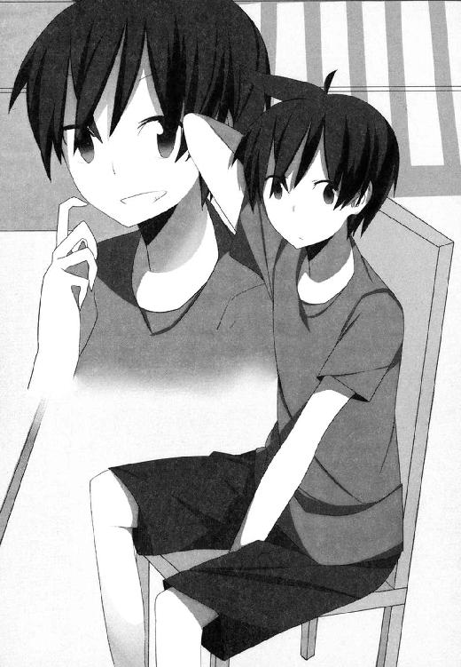
「かっこいいですよ、今の天馬さんは。だらしないところが随分と抜けて、すごくしゃんとしましたよね。最初のころの天馬さんより、ずっと魅力的になりました」
「おおお......」
あこがれのメイドさんにベタ褒めされて、むふー、と鼻息を荒くする天馬。単純なヤツである。
「きっと十貴子お嬢さまも同じように思ってらっしゃいますよ。空子お嬢さまに負けて、毎日セクハラされて、とても落ち込んでるはずですけど......それでもまだ十貴子お嬢さまがくじけずにいられるのは、きっと天馬さんのおかげです」
「うーん......その点についてはちょっと微妙というか。なんか最近のあいつ、めちゃくちゃ心が折れてるっぽい感じなんですけど。ずっと空子さんにいいようにされっぱなしだし、一矢報いてやろうって意志もイマイチ弱そうだし」
「久しぶりに帰ってこられた姉君に対して、どう接して良いのか判断しかねているんでしょう。空子お嬢さまの性格は見ての通りですし、そのうえ今じゃ『世界一の魔法使い』なんですから。ただでさえ十貴子お嬢さまがちょっと苦手にしていた方ですし、心中複雑になるのも無理はないかと」
「そりゃま、そうかもしれませんけど」
山田さんの言うことはもっともな気がするけど。
でも、それだけなのだろうか。
あの負けん気の強い十貴子が、それだけのことで意気消沈してしまうのか。それほどに藤宮空子という存在は大きいものなのか。
「いずれにしてもこの際、そのあたりは天馬さんのお仕事です。十貴子お嬢さまを世界一の魔法使いにするという、いわばマネージャーの役を買って出られたわけですから」
「まあ......仰るとおりですけど」
「いずれにせよ、わたしは藤宮家の一使用人に過ぎません。可能なかぎり十貴子お嬢さまのお力になりたいとは思いますが、姉妹間のことについて余計な口出しをするのは分を超えます」
そう語る山田さんの微笑は、何とも言えず複雑だった。
彼女にしてみれば、十貴子も空子も等しく主筋である。微妙な立場にある彼女にあまり多くを望むのは酷というものか。
「今回、わたしはあまりお力添えできそうにありませんが......どうぞ十貴子お嬢さまをよろしくお支えくださいね、天馬さん」
＊
まあよくよく考えてみれば、である。
（頼む相手を間違えてたのかもな、おれ）
と思わなくもないのだ。
たとえば藤宮十貴子。
名実ともに今では天馬のパートナーであり、魔法使いとしての能力も申し分ない。教えを請う相手としてこの上ない適任ではあるけど......現在の彼女にそんな余裕があるわけがない。セクハラの魔手から逃れる、あるいはひたすら耐えるのに手一杯であり、たとえ余裕があったとしても天馬に時間を割かせるのは惜しい。その時間は空子への対策を練ることにでも使ったほうがぜんぜん有意義なはずだ。
では、山田さんはどうかといえば。
（あんまり詳しくは話してくれないけど、あの人もけっこうな魔法使いらしいし。何より頼みやすいんだよな、あの人が相手だと）
加えて山田さんから学べるとなれば、モチベーションの高さが段違いだ。年上の美人メイドさんから受ける個人レッスン......考えるだけでも胸がときめくではないか。
（んでもよくよく考えると、だ。山田さんとマンツーマンだと、むしろ集中できない可能性はあるよな）
何しろ天馬とて健康な十六歳の青少年である。山田さんと二人きりになると考えただけで、いろいろとモニョモニョしてしまうというか。
美人すぎる教師というのも、それはそれで考えものである。
（しかしまあ、そもそも魔法使いの知り合いなんて数えるほどもいないわけで）
十貴子と山田さんを候補から外すとなると、あとはひとりしか心当たりがない。
コレット・ラ＝サール。
十貴子の自称ライバルにして、十貴子に次ぐ力を持つ魔法使い。
その実力は天馬も幾度となく目にしている。巨大なゴーレムを手足のように操るだけでなく、高度な魔法を自在に操って十貴子と渡り合う彼女は、敵に回せば厄介きわまりなく、逆に味方に付ければこれほど頼りになる存在もあるまい。
コレットとはこれまでいろいろあったし、そう簡単に天馬の頼みを受け入れてもらえるとは思えないけど。それでも三顧の礼をもって迎え入れる価値は、十分にあるだろう。
「ハァ？ このあたしが？ あんたに？ 魔法を？」
そんなわけで。
十貴子相手に『ひゃっはー』するのを小休止してくつろいでいたコレットに、つつしんで頭をさげた天馬だけど。
想像通り、いや想像以上に反応は最悪だった。
「あんた、紫外線に当たりすぎて頭ボケたんじゃない？ なんでこのコレットさまが、あんたみたいな三下にそんな親切なことしてあげなくちゃなんないわけ？」
「まあそう言うなよ石井」
「石井って言うな！」
ビーチで寝そべっていたコレットが飛び起きて、天馬に指を突きつけながら、
「いい？ この際だからあらためてハッキリ言っとくけど。あたしはね、あんたのことはずっとずっと昔から、ずっとずっとムカついてんだから。あたしがあんたのためになることをわざわざしてあげるなんて、ぜったいあり得ないんだから。金輪際、未来永劫、どこまでいってもないんだから。ましてときこの相棒とか言ってるあんたに魔法教えるなんて、百パーセントないし。ジョーシキで考えなさいよ、ジョーシキで」
「まあそう言わず。落ち着いて考えてみ？」
ここまでは想定済み。
天馬は焼けた砂の上に胡座をかいて「とりあえず座れよ」と促しつつ、
「なあ石井。お前、今の状況をどう思ってる？」
「だから石井って言うな。......どう思ってる、ってどういうこと？」
渋々、といった様子でコレットも胡座をかく。
ちなみに今の彼女は、布地面積の少ない黒のビキニ姿だ。身長や言動に似合わず意外にスタイルのいいこの魔法使いには、普段のロリファッションよりもこっちのほうがよく似合ってる気がする。
「空子さんが帰ってきて、藤宮がボロ負けした。今でも藤宮は空子さんに手も足も出なくて、毎日好き勝手オモチャにされてて──あいつも正直、へばってきてる」
「それが何よ？ ときこがオモチャにされてるのを見るのも、ときこをオモチャにして遊ぶのも、あたしはどっちも好きだし。ていうかときこがへばってるのは、あたし的にはいい気味だし」
「でもさ、よくよく考えてみろよ。今のお前は、藤宮から生命力を分けてもらわないと生きていけない状態じゃなかったっけ？」
「だから何？」
「お前が藤宮にちょっかい出すのはその意味もあるから、ってのはわかる。藤宮のそばにいればいるほど、生命力の補給は受けやすいはずだし」
「......で？ だとしたらどうなわけ？」
「もしも、だ。このまま藤宮がほんとにへばっちまって、他人に生命力を分け与える余裕がなくなっちまったとしたら。その時お前はどうなるんだ？」
「む......」
口をつぐむコレット。
が、すぐに鼻を鳴らしてそっぽを向いて、
「そんなこと、言われるまでもなくわかってるし。だからまあ、あんたに言われるまでもなく、そのうち手加減するつもりでいたし」
「おっと、ちゃんとわかってたのか。そりゃすまんかった。......けどよ、もうちょっとよく考えてみ？ 『そのうち』じゃなくて、今ここで手加減するとしたら。そのほうが藤宮に対してより多くの恩を売れることになるんじゃね？」
「むう......？」
「そしてここが肝心だ。もしも、だぜ？ もしもお前がおれに魔法を教えてくれて、そのおかげで藤宮が空子さんに勝ったとしたら......どうなる？」
「むむむ......？」
「藤宮がおれのおかげで勝つ。そのおれはお前から魔法を教えてもらったおかげで、藤宮を助けることができた。てことは、言ってみりゃお前が藤宮を勝たせたのと同じようなもんだろ？ そうなったとしたら、お前が藤宮に売った恩は一生掛かっても返せないくらいデカいものになるはずだ」
「むむむむ......」
「そうなったらもう、藤宮はお前に頭が上がらない。お前は藤宮に言うこときかせ放題だろうな」
天馬の説得に、コレットはかなり頭を悩ませているようだ。
もともと知恵の巡りがあまりよろしくない彼女のことだ。もう一押しできれば確実に落ちる。
「ついでに言えばさ。藤宮はこのおれから生命力の補給を受けることによって生きてるわけだ。つまりお前にとっておれはどういう存在なのか、わかるよな？」
「ふみゅう......？」
「お前から見たら、確かにおれはミジンコみたいな存在かもしれねえ。でもよ、ミジンコってやつは食物連鎖の一番下を支える大事な生き物なわけだ。ミジンコをエサにして小魚が育って、その小魚をエサにしてデカい魚が育つ。お前は確かにサメみたいに強いかもしれないけどさ、それもミジンコあってのものなわけよ。別にミジンコ相手に感謝しろとは言わねえけど......恩を売っておいて損がない相手だ、ってのは理解できるよな？」
「ふみゅ......」
「もっと言うとさ。今のお前は空子さんと組んでやりたい放題やって、藤宮をさんざんな目にあわせてるけどさ。その力関係だって、いつまでも続くとは限らないわけだ。放浪癖があるっていう空子さんが、またどこかにふらっと出かけちまったらどうなる？ もしくは何かのきっかけで藤宮がめちゃめちゃ強くなったりしたら？ もしくは藤宮がお前ひとりに狙いを絞って報復してきたら、そん時はどうするんだ？」
「みゅ......」
腕を組み、口をひょっとこみたいに曲げて、金髪の魔法使いは考え込む。
「ところがなんとびっくり。おれに魔法を教えるというただそれだけのことで、たいていの問題は丸く収まっちまうというこのミラクル。さあどうだ？ 悪い話じゃないだろ？」
「むにゅ......」
ちゃんとちびっこの頭でも理解できるよう、理と利は説いたはず。天馬としてはもう、あとは結果という名の果実が落ちてくるのを待つだけだ。
「にゅむむむむむ......」
さあ。
カモン、コレット。
「ふぬぬぬぬぬぬ......」
おれの弁舌に感涙でむせび泣きつつ、嬉々としておれに魔法を教え──
「ぐぬぬぬぬ......むぐぐぐぐ......うぅぅぅぅぅむっきい──────────ッ！」
キレた。
「あーもーうざいうざい！ 考えるのめんどい！ もー頭痛い！ やめやめナシナシ、この話はもうこれでおわりっ！」
「え？ なに？ どゆこと？」
「あたしとしたことが、つい惑わされそうになったわ！ あんたの言うことなんか聞いてあげない！ もーこれ決定！」
「おいおいなんでだよ」
天馬は呆れながら、
「今の流れでなんでそうなるんだ。おれがいま言ったこと、ひとつでも間違ってることあったか？」
「えーいうるさいうるさい！ というかあんたに魔法を教えない理由、たったいま思い出したし！ あんたの口車に乗って、あやうく忘れたままになるところだったわ！ ほんといやらしいヤツね！」
「忘れてたのはお前の責任だろが......つーか何だよ？ その理由って」
「ふん！ それも教えないし！」
ぷいっ、とそっぽを向いて立ち上がり、びしっと指を突きつけながら、
「とにかくあんたの話はお断り！ あたしはくうこのこと気に入ってるし、くうこといっしょにときこをいじめるのも気に入ってるし！ 気に入ってることはやめたりしないし、あんたなんかのために何かするのもぜったいイヤ！ わかったら目障りだからどっか消えなさいよね、ばーかばーか！」
＊
（ま、あのチビに期待したおれがバカだったよな）
コレットはしょせんコレットであった。
自分の気持ちの良いことしかできない単細胞生物に、そもそも言語での説得を試みたのが間違いだったのだ。あんなヤツを相手に人間様であるこっちがまともにつき合ってやるなんて、慈悲深いを通り越して滑稽きわまる。むしろあれ以上あのバカにつき合って一条天馬の株を落とすよりも、こういう結果に落ち着いたほうが今後のキャリアに傷が付かなくて幸いだった、と言うべきだろう。
（とはいえ参ったな......）
藤宮家所有のこの島には、もともと極端に人がいない。
山田さんいわく、空子が藤宮家の住人を連れてこの島にやってきたのは『世界一の魔法使いが誕生したと聞いた有象無象が、面白がってちょっかいを出してくるのを避ける』というのも裏の理由であるらしく。現時点においてこの島の人口は事実上、藤宮家ご一行の六人のみ。
となると、魔法を教えてもらえそうな心当たりはあとひとりを残すのみ、ということになるのだけど。
（いくらなんでも、さすがに、なあ......？）
藤宮空子。
何の前触れもなく現れて、トンビが油揚げをかっさらうようにしてオイシイところを持っていった、強力無比な魔法使い。
何しろあの十貴子を寄せ付けない実力の持ち主だ。現在では『協会』が認めるところの『世界一の魔法使い』であり、名実ともに業界最高峰の人材と言っていい。
彼女に教えを請うことができるなら、まさしく願ってもないほどの幸運だろうけど。
（おれに魔法を教えるってことは、言ってみりゃ敵に塩を送る、ってやつになるわけで。まあ有りえないか、常識的に考えて）
とはいえ他に候補がいない。
天馬と十貴子の関係を考えれば、島の外に出てアテを探すということもできない。
もっといえば選り好みしている立場でもない。
とにかくないない尽くしなのだ。時間にだって余裕があるわけでもないし、ここはとにかく細かいことは考えず、可能性をしらみつぶし的に当たっていくとしよう。ダメならダメで、また次の手を考えればいいのだ。おそらくは、まだしも芽のありそうな十貴子か山田さんに再アタックすることになるのだろうけど、あのふたりは一度言い出したら聞かないガンコ者っぽいし、おそらく大変な苦戦が予想されるはずで──
＊
「いいわよ？」
とか何とか思ってたら。
あっさり許可が下りてしまった。
「............。え？」
むしろ頼み込んだ天馬のほうが面食らって、
「え？ すいません、いま何て？」
「いいわよ、と言ったのだけど？ 魔法、あたくしでよければ教えてあげるわ」
いつもと変わらず『にこー』と微笑みながら、藤宮空子は再度うなずいてくれた。
くれた、のだけど。
「えーと......すいません。頼んでおいてこんなこと言うのもアレなんですけど」
「なにかしら？」
「いいんすか？ ほんとに？ おれに魔法教えちゃって」
「いいわよ」
デッキチェアに寝そべって、惜しげもなく見事な水着姿をさらしながら。
コレットと同じく十貴子遊びを小休止していた空子が、再々度うなずいて、
「あなたに魔法を教えてあげます。あたくしにできる限りのことを、一から順に、何もかもすべて」
「......おれと妹さんとの関係は、ちゃんと知ってますよね？」
「ええもちろん」
「おれに魔法を教えると、おれとペアを組んだ藤宮があなたに勝ってしまうかもしれないっすよ？」
「ひょっとしたらそんな可能性もあるかもしれないわね」
「そんなこと言って、おれにウソの魔法を教えたりとか。そういうイタズラをするつもりだとか？」
「そういうこともしないわ。あたくしが知る限りにおける魔法の何たるかを、残らずあなたに教えてあげます」
のほほんとした笑顔でそう保証してくれる空子だけど。
「えーと。なんかその話、裏があったりしません？ なんの対価もなしにそんなメリットが得られるなんて、そんなウマい話はないと思うんすけど」
「別に裏なんてないわ。ただ、そのほうが楽しそうだから。だから教えてみようかな、という気になっただけ」
「むう......」
確かに。
『そのほうが楽しそうだから』という理由は、ひどく魔法使いらしいもので。魔法使いの中でもことさら魔法使いっぽい人物である空子であれば、なおさらかもしれないけど。
「そんなに不安なら、むしろ何か対価を求めたほうがよかったかしらね？」
「あーいや。そういうわけじゃないんすけど」
「そうだわ。いいこと思いついちゃった」
と、何やら両手を合わせて含み笑い。
「あたくしから魔法を教えてもらいたいのであれば、ひとつ条件を呑んでもらうことにしましょう。うふふ」
「えーと、その条件って？」
「うふふ。それはね......」
まさしくヤブヘビというやつだった。
何やら嫌な予感がする。激しく。
十分後。
「......ねえ。空子さん」
「なあに？」
「ほんとにやるんすか？ まじで？」
コテージそばの茂みに潜みながら、ふたりはボソボソ密談中。
「あら天馬さん。この期に及んで怖じ気づいたのかしら」
「怖じ気づくっていうか......普通に考えてアウトでしょ、これ。どうみても」
「あらあら。男の子ならもっと喜んでもいいと思うのだけど。せっかく合法的に男の子の夢を叶えることができるというのに」
「いやぜんぜん合法的じゃないっすから。むしろ逆ですから。あと別に、言うほど男の子の夢ってわけでもないっすからこれ」
「んもー、ぶつぶつうっさいわね」
いらいらした声を上げつつ天馬の尻を蹴ってくるのは、もちろん空子ではなく。
「女々しいったらないわ。くうこがどうしても、って言うから、しょうがなく認めてあげたけど。役に立たないならそっこーで抜けてもらうんだからね？」
「うっせーぞ石井。お前にどうこう言われる筋合いはねえ」
「ああん？ あんた自分の立場わかってる？ この団の中じゃ、あんたは一番の下っぱなのよ？ このあたしに逆らうならまじそっこーでクビだし。ていうか石井って言うな」
「んだとてめー。あんまり調子のってると──」
「あらあら。だめよ天馬さん」
空子がのほほん笑顔でたしなめる。
「コレットさんは団のリーダーなんだから。ちゃんと言うことをきいて頂戴ね」
「リーダー？ こいつが？ 空子さんじゃなくて？」
「ええそうよ」
「じゃ、空子さんの役職は？」
「あたくしはこの団のキャプテンね」
「......リーダーとキャプテンの違いがよくわからないんすけど......」
ちなみに彼らが今いる場所は、コテージ裏手にある崖の上で。コテージの全景がすっかり見渡せる、絶好のポイントである。
付け加えると、彼ら三人はおそろいのファッションに身を包んでいる。水着の上に毛皮の貫頭衣という例の謎のコスチュームに。
さて。
なぜこの三人が、こんな場所でこんな格好をしているかといえば。
「......ターゲットが現れたわ。新入り、心の準備はいい？ 今さらケツまくるんじゃないわよ？」
「......ケツはまくらねえけどさ。でもなんだかなあ。こういうのはなあ」
「十貴子さんが張っている結界は、あたくしが解除します。あとは手はずどおりに。天馬さんの働きに期待していますよ？」
「いや、あんま期待されても」
「さあ行くわよっ！ あたしに続きなさい！ ひゃっはー！」
勇ましく宣言して、コレットが跳んだ。
「ひゃっはー。うふふ」
続いて空子がのほほんと宙を舞い、
「ひゃ、ひゃっはー」
腰砕けの天馬が崖を駆け下りる。
目指すは、コテージの裏庭に設置された混浴の露天風呂。
そこには今まさに入浴を開始しようとしていた、バスタオル一枚の十貴子の姿が。
「くっ!? 性懲りもなくまた来ましたか──って、ちょ!?」
十貴子が口をあんぐり開けて動きを止める。
その視線は天馬に釘付けになっていて。
当然のことながら、狡猾な賊徒どもがそのスキを見逃すはずもなく。
「ひゃっはー！ 油断したわねときこ！」
コレットがいち早く獲物の太ももにとりつき、両脚の自由を奪う。
「ひゃっはー。十貴子さん、相変わらず突発的な事態への対処に弱いわねえ。うふふ」
さらに空子が獲物の胴体に腕を回し、
「ひゃっはー。........................すまん藤宮」
トドメとばかり、荒縄を手にした天馬があきらめ顔で近づいて、
「ちょ、ちょっと！ ちょっと待って！ 待ちなさいッ！」
十貴子が悲鳴を上げるのもまあ、無理からぬことだろう。
「姉さんやコレットはともかく、どうしてあなたまで!? 何やってるんですか一体!? どういうつもりなんですこれは!?」
「うふふ。それはね十貴子さん」
バスタオルの上から妹の身体をまさぐりつつ、空子が説明する。
「天馬さんは今日からあたくしたち『ひゃっはー団』の一員になったの」
「ひゃ、ひゃっはー団？」
「十貴子さんが大好きなあまり、十貴子さんをオモチャにしたくてたまらない人たちが集まって一致団結した、特別な団よ。これから先、気が向くたびにあたくしたち『ひゃっはー団』の三人があなたを襲いに行くから。覚悟して頂戴ね？」
「まあそういうわけだ。すまん藤宮」
天馬は頭を下げて、
「空子さんに魔法を教えてほしいって頼んだら、その代わりに団員になれ、とか言われた。おれとしても気は進まないけど、まあ乗りかかった船だし──」
「ふ、ふざけないでください！ わたしが魔法を教えなかったからって、そんな、姉さんからなんて！ なに考えてるんですか!?」
「だってお前、教えてくれないんだもん」
「だからといってそんな！ あなたわかってるんですか今の状況が！ あなたとわたしの立場がどういうものか、ほんとに理解してます!?」
「してるよもちろん。だから空子さんに頭を下げたんじゃねーか。この先おれとお前が二人三脚でやってくためには必要なんだよ。魔法ってヤツをちゃんと知っておくことがさ、どうしたって」
「それはわかりますけど、でも！ わたしだってべつに意地悪で教えないんじゃなくて、それも理由あってのことで──」
「こらときこ！ おーじょーぎわが悪いわよっ！」
じれてきたらしいコレットが口を挟んで、
「あんまり逆らってゴネると、あとでチョーひどい目にあわせるんだからね!? てんま、あんたもあんたよ！ せっかく簡単な仕事をまかせてあげたんだから、さっさとその縄で縛っちゃいなさいよね！ 口を自由にさせとくとごちゃごちゃうるさいから、猿ぐつわも忘れないでよ!?」
「......というわけだ。すまん藤宮あきらめてくれ」
「あきらめてくれ、じゃありません！ いい加減にしないと本気で怒りますよ!? 後々になって後悔することになりますからね!?」
「もとより覚悟の上だよ。おれはな、何が何でもお前には世界一になってもらいたいと思ってるからさ。そのためだったら何だってするぜ？ お前の敵に回ることも、お前から嫌われることも、ぜんぜん余裕で受け入れる。そんなもんは大事の前の小事ってやつだからな、何てことねーよ」
「そっ、それはその──ある意味ではとても感謝しますけど！ でもっ──！」
「目的を果たした後だったら、報復だろうと何だろうと好きにやってくれていい。だから今はすまん。耐えてくれ」
「ほ、本気......なんですね？」
「ああ。悪ィな。......覚悟は決まったか？」
「ま、待って、待ってください！ じゃあこうしましょう！ わたしやっぱりあなたに魔法を教えます！ こんな事態になるならそのほうが何倍もマシです！ だからちょっと考え直して──」
「あらだめよ十貴子さん」
なおも抵抗を試みようとする十貴子を、姉が笑顔でさえぎる。
「天馬さんはもう、あたくしの弟子なんだから。今さら師匠はふたりも要らないわ」
「............。なに考えてるんです？ 姉さん」
「あら。そんなの決まってるじゃない」
鋭く睨みつけてくる妹に、空子はいっそう深く笑いかけて、
「あたくしはいつだって、あたくしを楽しくさせてくれることしか考えてないもの。それでね、天馬さんを弟子にとって、天馬さんといっしょに『ひゃっはー』することは、今のあたくしにとっていちばん楽しいことなの。だからあきらめて頂戴ね？ 十貴子さん」
「そんな、『あきらめて』と言われて素直にあきらめるもんですか！ ちょっと放しなさいこら！ 放してむぐう!?」
決死の抵抗を試みようとした十貴子の口に、天馬がやむなく猿ぐつわを嚙ませる。
「さあ長居は無用よ！ てっしゅーてっしゅー！」
さらに荒縄で獲物をぐるぐる巻きにして、手慣れた誘拐犯みたいなソツのなさで運搬していくひゃっはー団の三人。
（......目的を果たした後だったら、報復だろうと何だろうと好きにやってくれていい──とは大見得切ったけど）
犯罪スレスレな行為の片棒を担ぎつつ、ため息。
（ここまでやっちまったからには、ホントに覚悟しないとなあ。後で藤宮から何をされることやら......）
後々になって十貴子火山が噴火するシーンを想像して、早くも鬱な気分になる天馬なのだった。
＊
「......あれはちょっと不用心じゃないですか？ 藤宮も」
「仕方ありませんよ。何しろあのコテージには、混浴の露天風呂がひとつあるきりですから。十貴子お嬢さまならずとも、お風呂に入りたければあそこを使うしかありません」
呆れ顔の沢木の問いに、あきらめ顔の山田さんが首を振りつつ答える。
「ちなみにコテージを改装したのは空子お嬢さまです。コテージにある他のお風呂を全部取っ払ってしまわれて......あれはつまり、こういう日が来ることを前々から想定していたんでしょうね」
「そういう労力はホントに惜しみませんよね、魔法使いって人種は」
コテージのテラスに設置されているテーブルに座って、ひゃっはー団の蛮行の一部始終を見ていたふたりは、同時にため息をつく。
「ともあれ、しばらくはこんな状況が続きそうですか」
沢木が話を振る。
「空子さんがひたすら陽気な暴君として君臨して、コレットが喜んでそれに乗っかる。藤宮はふたりに振り回されっぱなしで──天馬は何だかんだで動きだそうとはしてるみたいですけど、結果が出るのはまだ先でしょうし」
「そうですね」
山田さんが頷きつつ、
「十貴子お嬢さまも、隙を見てはいろいろ対策を練ってらっしゃるようですが。ことごとく不発に終わっているようです。とにかく空子お嬢さまとの間に差がありすぎますので、ちょっとやそっとでは......」
「となるとやっぱり、状況は動きそうにありませんね。俺としては、天馬がここらで何か一発やらかしてくれるのを期待してるんですけど。膠着状態を一発でぶっ壊してくれるような何かを」
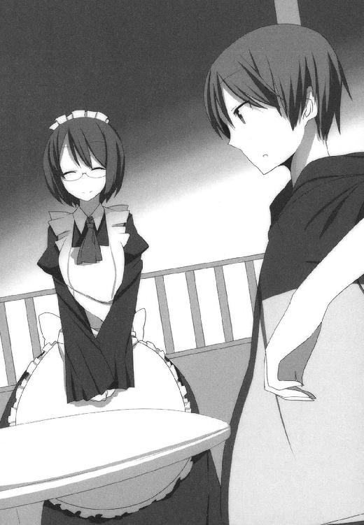
「わたしだって期待してますけど、さすがにそう上手くはいかないでしょう。とはいえそうですね、少なくともあと一か月か二か月は──学園の夏期休暇が終わって校舎の改築も終わるころまでは、この島に留まることになりそうですし。今日明日に、というのは無理でも、その間には何かしらの成果を期待していいのかもしれません。以前に比べれば天馬さんのモチベーションも段違いですから」
そう。
決して悪い刺激ではないはずなのだ。
天馬の変化と成長を願う彼らにとって、藤宮空子という飛び道具みたいな人物が登場したことは。
むしろこの時期に高い壁として立ちはだかってくれたのは、あのコンビにとってはプラスに働くのではないか──というのが、山田さんと沢木の共通見解である。
「とはいえ」
沢木が物憂げな顔で、
「ちょっと刺激が強すぎますね、あの人は。刺激が強いというか──どうもつかみ所がないというか、読み切れないというか。少なくとも俺の手には余る人です。毒なのか薬なのかも判断がつけづらい、おまけに猫の目みたいに気分がころころ変わる......」
「コレットさんがそのまま大人になったような方ですからね。それも天然なところは残したまま、悪知恵をつけて。おまけに憎めない人柄まで持っているというか」
「まあ基本的には悪意のない人みたいですし、そのあたりは壁役として適任なんですけど......どうにもこうにも、やりづらい。こんな島に居たらろくに動けもしないし」
「島から出る手段は、すべて空子お嬢さまが押さえていますからね......」
苦笑したのち、沢木へ微笑を向けて、
「とはいえ沢木さん。『ろくに動けない』と言いつつ、何やら裏でいたずらをなさっているようで」
「おっと。バレてましたか」
沢木はぺろりと舌を出して、
「まあ隠すほどのことじゃないんですけど......そのほうがサプライズはあるでしょう。どうせなら効果的に演出したいし、それまではご内密にお願いします」
「承知しました。他にも何かあれば遠慮なくお申し付けくださいね。お嬢さまと天馬さんのためになることでしたら、可能なかぎり協力いたしますので」
「ありがとうございます。今のところは特にありませんが、何かあった時はぜひ」
軽く頭を下げてから、沢木は探るような目をして、
「それより気になることがあるんですが」
「なんでしょう」
「山田さん。このところ妙に消極的じゃないですか？」
彼女がこれまで長きにわたって、陰に陽に十貴子と天馬を支えてきたことを、今の沢木はよく知っている。
決して多くは語ってくれないけど──時には二人のために進んで憎まれ役、汚れ役を買って出てくれたことも、一度ならずあるようだ。
その彼女をして、今回に限ってはひたすら傍観に徹している。
むしろあえて無関心を演じ、我関せずを装っている雰囲気さえあるのだ。
「元より、わたしは藤宮家の使用人ですので」
と山田さんは微笑んで、
「ご姉妹の間での問題に口を挟むのは分を超えますし、どちらのひいきもできかねます。それにこれまではお若い十貴子お嬢さまが、おひとりで藤宮家のあれこれを取り仕切ってこられました。それゆえ僭越ながら、わたしがいろいろとお手伝いさせてもらってましたけど......空子お嬢さまが戻って来られた以上、藤宮家の実質的な当主はあの方です。当主の命には粛々として従うのが、使用人としての分際というものでしょう？」
「まあ、それはそうなんですけどね」
とはいえ、山田さんの言葉を額面どおりに受け取る沢木ではない。
「時に、空子さんってどんな人なんです？」
「どんな人、といいますと？」
「何でも良いですから教えてくれませんか。あの人の生い立ちとか、過去の言動とか──それがだめなら好きな食べ物とか好きな色とか、そんなのでも構いません。とにかくあの人に関する情報が欲しい。どんな小さなことでも」
「見たままの方ですよ、空子お嬢さまは」
にっこり微笑を深めて、藤宮家のメイドさんは証言する。
「思ったことをそのまま口にして、思ったことそのままに行動する。いつでもふわふわ笑っていて、花の蜜をあつめる蝶みたいにあちこちを飛び回っていて、ちょっと目を離したら星の果てまで飛んでいってしまいそうな──そういう人です」
「天才、ってやつですか」
「ええ。そういう性質を持ち合わせている人ほど、魔法使いとしての資質が高い傾向がありますし。空子お嬢さまは実際その典型でしたね」
空子が今の十貴子ぐらいの歳であったころ。
彼女の魔法使いとしての名声はもう、世界中に知れ渡っていたのだとか。
「十貴子お嬢さまが努力の天才なら、空子お嬢さまはまさしく天然素材の天才、とでもいいますか。そもそもご自分が天才かどうか、ということさえ考えたこともないでしょうね、あの方は。それはもう絵に描いたような『魔法使い』でしたし、それに見合うだけの突出した才能をお持ちでした」
「それがどういうわけか、ふらっとどこかへ消えてしまったと。十年前、誰にも何も言わずに」
「はい」
そして彼女は『世界一の魔法使い』になって帰ってきた。
状況からみて、おそらくは方々に念入りな根回しをしたのだろう。『念入りな根回し』などは、彼女たちのような人種がもっとも面倒くさがりそうなことだろうに。
しかもその座を妹が目指していることを、空子は承知していたはずなのだ。
そんな突飛な行動をとった理由を、当の本人は『十貴子さんに意地悪したいから』などと語っていたが──ほんとうにそんな理由で？
いや、確かに常識ばなれした魔法使いたちの思考回路からすれば、それはむしろ当然の成り行きといえるかもしれない。いや、だがそれにしても......。
「──山田さん」
「なんでしょう」
「この十年間。空子さんは一体どこで、何をしてたんですか？」
「さあ......わたしにはわかりかねます」首を横に振る山田さん。「空子お嬢さまは、その件について話してくださるおつもりもないようですし」
「ふむ。そこがいちばん肝心なところだと思うんですけど。何とかしてそのあたりを知る方法はありませんか？ 山田さんも魔法使いなんですし、何かしら情報を手に入れる方法はあるんでしょう？ 例のほら、魔法使い御用達の『新聞』みたいなやつとか、ああいうのを使って......」
「わたし、魔法使いとしてはそんなに優秀なほうじゃありませんよ？」
「そうですか？ いや、でも山田さんって、長いこと藤宮家で奉公してるんですよね？ だったら今現在、藤宮空子のことを一番よく知ってるのはたぶんあなただ。一歩引いたところから見られるぶん、藤宮十貴子よりもむしろあなたのほうが空子さんのことについて詳しいでしょう。見たところ年齢も近いようだし──」
「あら。年齢を訊こうとしてもダメですよ？ わたし、その件については貝より固く口を閉ざすことにしていますから」
「いやすいません。そういうつもりじゃなかったんですが。とにかく俺は、空子さんのことについて少しでも知っておきたいと──」
「うふ。沢木さんってひょっとして」
何やら意味ありげな含み笑い。
「ひょっとしてもしかすると。空子お嬢さまに気があるのかしら？」
「......はい？」
「そうですよね、空子お嬢さまってとってもお綺麗ですものね。沢木さんがそういう感情を起こすのも納得です。でも沢木さん、そういうことなら尚更ですよ？ 意中の人のプロフィールは、本人から直接聞き出していただかないと。それが男性のマナーというものです」
「なに言ってるんですか山田さん。俺はそういう意味で言ってるんじゃ──」
と、そこまで言いかけて沢木は気づく。
藤宮家のメイドさんが浮かべている微笑の変化に。
いわばそれは、微笑以外のどんな成分も含んでいない純粋な──言い換えれば、微笑以外のどんな解釈も許さない微笑というか。
何があっても崩れることのない、鉄壁の微笑、とでもいうか。
（何やら訳あり、か）
今の彼女は、たとえ拷問したところで口を割るまい。これ以上追及するのはかえって逆効果だ。
「......ま、確かにすごい美人ですよね。あれだけの美人で、しかも世界一の魔法使いだなんて。ちょっと神様のひいきもやり過ぎなんじゃないですか？」
「まったくその通りですね。でも沢木さんだってずいぶん神様にひいきされてるほうでしょう？ その空子お嬢さまをはじめとして、十貴子お嬢さまにコレットさん──ミスコンにでも出れば賞を総なめできるだけのきれいどころと、毎日一緒に居られるんですから」
「おっしゃる通りです。でも山田さん、その『きれいどころ』の中にはちゃんとご自分も入れてくださいよ？ 謙虚さは得難い美徳ですが、それも行きすぎれば嫌味になりかねませんから」
「あら。お上手ですこと」
山田さんが笑い、沢木も同じように笑い返す。
まあ、ここはこんなところだろう。
彼女がどんな理由で静観と沈黙を保っているのかはともかく、どちらにしても今は積極的に動くべき状況ではない。お互いの利害が一致している限りは協力し合う──それが沢木と山田さんとの間で成立した合意だし、ここは様子見で問題ないはずだ。
「話を戻しますが──とにかく今は時間が流れるに任せるしかないですね。どっちにしたって一日や二日で解決するような問題じゃないわけですし」
「そうですね。幸い、この島には時間だけはたっぷりありますから。ひとまずここは、状況を見守るとしましょう。天馬さんと十貴子お嬢さまのことですもの、時間が経てば経つほどおいしく育ってくれますよ、きっと。ワインが時を経てうまみを増していくのと同じように──」
ＡＣＴ３ やってはみたけど見込みがない
この島に連れてこられてから二週間。
空子に弟子入りしてから一週間が経った。
その間に成立した天馬の生活パターンは、およそこんな感じである。
起床＆朝食
 自主トレ
自主トレ
 昼食＆昼寝
昼食＆昼寝
 空子の気が向けば魔法の授業
空子の気が向けば魔法の授業
 夕食のち自主トレ
夕食のち自主トレ
就寝
......ちなみにいずれのタームにおいても、ひゃっはー団の活動が優先される。ひとたびコレットか空子の号令が下れば、天馬は悪逆非道の賊として、十貴子狩りに精を出さねばならない。
またせっせとヒマを見つけては、十貴子の生命力補給に出向いたりもする。その際はひゃっはー団に加入したことについてネチネチ言われたり、尽きぬセクハラへの愚痴なども聞かされたりするわけであり、これはこれで中々ハードな業務なのだ。
とはいえ。
突発的、非定期的なイベントはあちこちで発生するものの、状況が一段落してみればおおむね規則正しい生活に落ち着いた、と言えそうだった。
そのことは天馬に限らず、藤宮家ご一行の六人すべてに言えることだろう。
山田さんはひたすら黙々とメイド仕事に勤しんでいて。
沢木は何やら天馬に隠れてコソコソやるのが日課のようだし。
空子とコレットはひたすらフリーダムな道を突き進んでいるけど、それに徹しているという意味ではパターン化が進んでいると言えるし。
十貴子は言うに及ばず、常に総受けの状態だし。
もっとも彼女の場合は、夜討ち朝駆けのセクハラ攻撃への耐性がある程度できてきたようで。コレットあたりにしたたかな反撃を加えたりする場面も見られるようになり、時にはひゃっはー団の魔の手から見事に逃げおおせる展開もあったりする。
とはいえ獲物のこうしたいじらしい抵抗は、狩る側をむしろ喜ばせているらしく。それにコレットはともかくとして、空子のほうは妹の反撃なぞ蚊に刺された程度にも効果がないわけだけど。それでもただやられっぱなしだった少し前よりは、十貴子もずいぶん持ち直してきたと言えるのではないか。
いずれにせよ、この南の島にやってきて以来の小康状態が訪れている。
劇的な変化のない今の状況は、短期間のうちに魔法を学びたい天馬にとって好都合であり、まさしく願ってもない展開と言える──はずだったのだけど。
「天馬さん」
そんなとある日の昼下がり。
天馬に魔法を教えていた空子が、いつもみたいにふんわり笑ってこう言った。
「あなた才能ないわねえ」
「ぐふっ......!?」
精神を集中させて気を練っていた天馬は、吐血するような音を立ててひざをつく。
「──ちょっと。やめてくださいよ空子さん。人がせっかく真面目にやってるところに、そうやって水差すの」
「あらごめんなさい。そうね、確かにそうよね。そんなこと言ったら気も散っちゃうし、やる気もなくしてしまうわよね」
「ほんとですよ。まったくですよ。もうちょっと気を遣ってくださいよ」
「でもね天馬さん、それも仕方のないことなのよ」
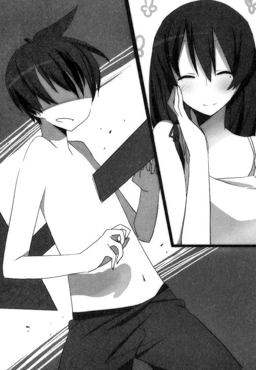
空子は困り笑顔で、しかし何の遠慮もなく、
「だってあなたって、ほんとのほんとに才能ないんだもの。あたくしもこれまでにいろんな人を見てきたけど......あなたほど徹頭徹尾、完膚なきまでに才能のない人って、ほんと初めてだわ。あなたって『魔法の才能がない才能』に関しては、ほんとに天才的ね」
「そ、そこまで言う......!?」
さすがにショックだった。
やる気が霧のように立ち消えて、天馬はその場に仰向けになる。
ぎらつく太陽とそれに炙られた白い砂が、天馬を表と裏の両面から焼いてくるけど。それすら気にならないほど脱力してしまった。
「いや、でもしかしですね」
がばりと起き上がって反論。
「まだ魔法の勉強を初めて一週間ですよ？ そりゃ才能はないかもしれないっすけど、この短い時間で『見込みなし』の判断をするのはさすがに早すぎませんか？ もうちょっと長い目で弟子の成長を見守ってくださいよ」
「別に早くはないわよ？ むしろ気長に待ったほうだわ。才能の有る無しというのはね天馬さん、見る人が見れば一瞬でわかってしまうものでしょう？」
「そりゃまあ、そうかもしれないっすけど......」
「正直なところあなたの才能のなさは、魔法を教え始めた初日から明らかだったわ。むしろ判断に一週間もかけたのはちょっと慎重すぎたくらいね。だってまさかここまで才能がないなんて思ってなかったから、ひょっとしたらあたくしの目が節穴なのかも、という疑念がどうしても拭いきれなかったのよ」
まったくもって容赦のない叩きっぷりに、ふたたび天馬は突っ伏してしまう。
これでも昔は神童と呼ばれていた彼だけに。才能ない呼ばわりは何気にキツい。
「うーん。やる気なくしちゃったかしら天馬さん？」
「......いやまあ。確かに凹みましたけど」
スプリングの要領で「よっ」と跳ね起きて、
「凹んだからといってサボってらんないすから。やりますよ、もちろん。この程度であきらめたりはしないっす」
「あら。けっこう健気なのねあなた」
ニコニコ笑顔をさらに深めながら、空子はうなずいて、
「じゃあ引き続きがんばって頂戴。わからないことがあったら何でも教えてあげますからね？」
「うっす。ありがとうございます。じゃあお言葉に甘えて、さっそくお願いがあるんですけど」
「なにかしら」
「ちょっと実際にやってみてくれません？ もう何度もお手本は見せてもらってますけど、もう一回だけ」
「いいわよ～」
間延びした声で快諾しながら、師匠はデッキチェアから立ち上がる。
ちなみに天馬に現在課せられているのは、『指先からライター大の火を出す』という、いかにも初歩っぽい訓練なのだけど。
「よく見ててね天馬さん」
「うっす」
「じゃ、いきますよ？」
顔の横に右手を持ってきて、人差し指を立てる。
「せーのっ......えいっ」
ぼっ、と音を立てて、ドングリほどの大きさの炎が指先に灯る。
「さあ。やってみて頂戴」
「ふむふむ成る程」
こくこく頷きながら、
「こうやって顔の横に手を持ってきて、人差し指を立てて、えいっと一声掛ければ簡単に──ってンなのできるか！」
『むき──っ！』と頭を搔きむしる天馬だった。
「無理っすよそんなの！ めちゃくちゃ簡単そうにやってますけど、そんなんで火が出せるなら誰も苦労しないっしょ!?」
「まあ。それは困ったわねえ」
錯乱する弟子に、師匠は眉毛をハの字にして、
「天馬さん、あなたやっぱり才能ないわ。ここらであきらめたほうがいいのではなくて？」
「いやいやちょっと待ってください！ これって才能以前の問題じゃないっすか!? おれみたいな初心者が今のやり方で試したって無理でしょどうみても！」
むろん、これ以前にも講義を受けてはいる。
ここ一週間はずっと『指先から火』の練習をしているのだ。空子からそのために必要な理論の解説を受け、何度も実演を見せられたのは確かである。
しかし肝心なその理論というやつが、ものすごく遠回りで漠然としていて──要約すると『身体の中にある気みたいなものを練り上げて意志の力で放出する』的なことを言ってるらしいことは一応理解できるのだけど、それは『ホームランを打つためにはバットを持って打席に立って、来た球を思いっきり打つ』と言われてるのと大差なく、そんな簡単にできるならプロの野球選手の存在意義なんてどこにもないわけで、
「空子さん。すいませんけどもうちょっとこう、具体的にいろいろ教えてくれません？」
「うーん。具体的に、と言われても困るわねえ」
「困るのはこっちっすよ。ていうか──」
興奮したイノシシみたいに鼻息を荒くして、
「前々から思ってたんすけど、魔法ってもっとこう、魔法書みたいなのを読んで勉強するんじゃないんですか？」
「魔法書を読むのも勉強のひとつですよ？ だけど、たとえ今のあなたが魔法書を一万冊読んだところでなんの効果もないでしょう。あなたって遥かそれ以前のところで足踏みしてるんだもの」
「じゃあどうすればいいんすか？ 正直今のやり方でいくらやったって、いつまでたっても魔法を使える気がしないっす」
「まあ。その言い方だと、まるであたくしの教え方が悪いみたいに聞こえるわ。ひどい話よ、ぷんすか」
「あーいえ、そういうわけじゃないんす。いやマジで」
あわてて否定するけど、本心ではまったくその通りだった。
自転車に乗れる人が、乗れない人に乗り方を説明する──のと同じように、確かに言葉じゃ説明しづらいのだろうけど。でもそれにしたって、空子の説明は穴だらけというか大ざっぱというか。
「天馬さん。その顔はあれね？ 『山田さんとか藤宮ならもっとわかりやすく教えてくれるのに』という顔ね？」
「いえ。そんなことないっす」
「ほんとかしら」
「ほんとっす。うそじゃないっす。信じてくださいっす」
「まあ確かにあたくしって、お世辞にも優秀な教師とは言えないと思うわ。山田さんや十貴子さんのほうが教える技術があるのも確かでしょう」
デッキチェアに座り直し、優雅に脚を組む空子。
今日の水着は赤いワンピース。シンプルかつド派手、明らかに着る人間を選ぶタイプの水着だけど、彼女には実によく似合っている。
「とはいえ今教えているのは、算数で言えば九九とか割り算ぐらいのレベルだから。どんな魔法使いが教えたところで大差はないはずよ？」
「それはアレっすか。おれって、九九すら覚えられないほどひどいってことっすか......」
「ええそうなるわね」
「ぐっ......容赦のない断言......っ！」
「それにしても困ったわ」
師匠はほっぺたに手を当てて、
「この程度のことはあたくし、別に誰から言われるまでもなく最初からできたから。あなたがどうしてこんなこともできないのか、むしろ理解に苦しむのよ。天馬さん、あなただって『どうやって肺で呼吸しているの？』と訊かれたら上手く答えられないでしょう？ それと同じことよ」
「そんな、まるで人を単細胞生物より下みたいに言わないでくださいよ......」
「魔法ってね、『学ぶ』というよりむしろ『気づく』ものなの」
水滴のしたたるカクテルグラスを口に付けながら空子は言う。
「『気づいた人』には、その気づいたことを伸ばしてあげることもできるけど。『気づけない人』にはほとんど何もしてあげられないわ」
「うーん。言ってることはわかるんですけど......」
それは天賦の才が云々、というほど大げさなものでは決してなく。日常生活を送る上でもけっこうな頻度でめぐりあう経験だろうとは思う。
すでに例に挙げた自転車の乗り方や、あるいは逆上がりのやり方とか。
えんぴつをくるくる回すやり方とか、炭酸飲料をゲップせずに飲むやり方とか。
ふとした瞬間にコツさえ摑めばあとは簡単で、コツを摑めなければ一生縁がない──そういった類の。
「うん。今日はこのくらいにしておきましょうか」
デッキチェアに寝そべりながら、空子は気持ちよさそうに伸びをして、
「授業はこれでおしまい。あたくし疲れてしまったわ」
「疲れたって......空子さんおおむねそこで寛いでただけじゃないっすか。もうちょっと教えてくださいよ魔法のこと」
「ごめんなさいね。今日はあたくし、もうやる気をなくしてしまったの。そんなことよりもっと楽しいことをしましょうよ」
「なんすか？ 楽しいことって」
「あら。そんなの決まってるじゃない」
空子の笑顔がいよいよ深くなり、それと反比例して天馬のテンションはだだ下がり。
師匠がこういう顔をする時は、およそどういうことになるか。不肖の弟子はとっくに知っているのだ。
＊
「あんた魔法を勉強してるんだって？」
カメラのシャッターを忙しく切りながら、コレットが大して興味もなさそうに訊いてくる。
「でもってぜんぜん覚えられないんだって？ びたいち、これっぽちも、まるっきり？ うけけ、めちゃくちゃいい気味なんですけどー？」
「うっせーな」
カメラ小僧ならぬカメラ幼女と化しているコレットへ舌打ちする天馬だけど。言われていることは完全無欠に事実なので、たいへん反論しづらい。
「確かにからっきしだけどよ、まだ一週間だぜ？ あきらめずに努力してればそのうちなんとかなるかもしれねーだろ？」
「バカねえ、くうこにも言われたでしょ？ 魔法ってそういうのとちがうんだから。使えるヤツはすぐ使えるし、使えないヤツはいつまでたっても使えないんだから──ほらちょっとそこ！ 笑顔がカタいわよっ!? もっと自然に笑いなさい自然に！」
「まあ、さすがにそのへんのことは段々わかってきたけどさ......」
レフ板の角度を変えて明度を調整しつつ、
「なあ石井。お前の場合はどうだったわけ？」
「石井っていうな。......あたしの場合は、ってどういうこと？」
「魔法の勉強。お前はどんな風にして使えるようになったわけ？ 誰かの弟子になったりして勉強したりとか、魔法書を読んだりとか」
「そりゃ師匠もいるし魔法書も読んだけど。でもあたし、気づいた時はもうそれなりに魔法っぽいことできてたし。だからあんたの苦労はぜんぜん理解できない、みたいな感じだし？ ていうかぶっちゃけあたしって天才だし？」
「うわうぜえ。まじうぜえこいつ」
「ふふん、好きなように言えばいいし。このあたしが天才なのは事実だし、あんたに才能のカケラもないのだって事実だし。──ちょっとときこ!? あんた何回言われればわかるわけ!? もっと笑顔でって言ってるでしょ!?」
「──ああもうっ！ これ以上つき合ってられますかッ！」
砂浜に寝そべっていた水着姿のモデル──藤宮十貴子が砂を蹴立てて立ち上がり、猛然と抗議を開始した。
「わたしは本業のモデルでも何でもないんだから！ 自然に笑えとか何とか言われたって簡単にできるわけないでしょう!? 人を何だと思ってるんです一体！」
「チッ。文句の多いモデルね......十貴子、あんたは黙ってあたしの言うこと聞いてればいいの。現場で撮影監督に逆らうなんて信じられないわほんと。本業でなかろうとド素人だろうと、引き受けたからには最後まできっちりやりなさいよね」
「引き受けたんじゃなくて押しつけられてるんです！ あなたたちに強制されて！」
「ったく......しょうがないわね」
コレットがパチリと指を鳴らして、
「くうこ。あの新人に仕事のやり方を教えてあげてくれる？」
「──うふ。出番が回ってきたわね」
ニコニコ笑顔で待機していた空子が満を持して立ち上がる。
「十貴子さん。あたくしがモデルの心構えというものを教えて差し上げます。手取り足取り、腰取り胸取り──ね？」
「こ、腰とか胸とかは関係ないでしょう!?」
......まあ。
状況はおおむね見ての通りである。
魔法の授業を中断した空子の号令一下、ひゃっはー団は相も変わらぬ極悪ぶりを発揮。手慣れたコンビネーションで十貴子をかどわかし、こうして即席のグラビア撮影大会を展開していた──のだけど。
「さあ十貴子さん。覚悟はいいかしら？ うふ」
「くっ──それ以上近寄らないでください！」
「残念だけどそれはできないわ。あなたにモデル魂を教え込むためならあたくし、なんでもするつもりだもの。わかってちょうだいね？」
「そんなこと言って姉さん、本音は撮影大会とやらに飽きてきただけですね!? それでまたわたしをオモチャにして遊ぶつもりなんだ！ そうでしょう!?」
「あらあら何のことやら。うふふ」
このパターンもまた、例によって例のごとくというか。すっかり見慣れてしまった光景ではあった。
「じゃ、あたしはちょっと休憩しよっと」
コレットがカメラを放り出し、パラソルの日陰に入ってジュースをすする。
「なによてんま、さっきからぶすっとした顔して？ ただでさえブサイクなのがシャレにならないくらいブサイクになってるじゃん」
「うっせーな」
「どーせアレでしょ？ ときこがくうこにコテンパンにされるのがわかってるのに、何もできないから。だからそんな機嫌わるいんでしょ？ にゃはは、だっさーい」
「だからうっせーつーの」
「あんたもさ、下っ端とはいえひゃっはー団の一員にしてあげてるんだから。どうせならもっと楽しめばいいのに」
うっせーバカ野郎。お前らみたいな脳内お花畑の魔法使いと一緒にすんな──とは思っても口にせず、天馬はむっつり黙りこむ。
「うふ。十貴子さん、今日もとっても可愛いわねえ。思わず食べちゃいたくなるくらいに。うふふ」
「ち、近寄らないで！ わたしだって、いつまでも言いなりになってるばかりじゃ──」
「うふ。だったらそれを証明してみて頂戴。うふふ」
「くっ────」
「ほぉらほーら。うふふ。ほぉらほーら」
目の前では、十貴子が姉の横暴にどうにか抗おうと四苦八苦している。
その気力こそ賞賛に値するものの、実際のところはマングースに睨まれたハブ状態。獲物をたっぷり味わい尽くすべく、じわりじわりと近づく姉に対して、妹は威嚇の視線を投げることしかできないでいる。
いっそのこと完全に無抵抗に徹していれば、空子もコレットもそのうち飽きるんじゃないかと思うのだけど。十貴子の性格からして納得してくれそうにないし、天馬だってそんな手を勧めたくはない。
「むうっ？ ときこのあの怯えた顔──意外といいかもしんない。写真、写真と......」
放り出したカメラをうれしそうに拾い直すコレットに、天馬はため息をつきながら、
「楽しそうだなあ。お前」
「はぁ？ んなのあったり前じゃない。楽しいことのために生きてるんだし」
にやけ面でシャッターを切りつつ、
「むしろあんたはいま楽しくないわけ？ 楽しくないなら何で生きてるの？ だったらさっさと死ねば？」
「............」
言いたいこと言ってくれやがって、とは思うけど。実際コレットも空子も実に楽しそうにしてるのを見ると、負け組が何を言っても無駄か、という気にもなってくる。
生粋の天才は、どこまでいっても天才であり続ける。
天馬もかつては天才と呼ばれていたけど、しょせんそれは紛い物で。あるいは紛い物ではないにしても、限度というものが確かに存在した天才であって。空子やコレットみたいなタイプの天才──というかむしろ化物──の考え方とかやり方は、何の参考にもならないかもしれない。
でも、それでも訊かずにはいられないのだ。参考にはならないにせよ、訊く価値がないわけじゃあるまいと信じて。
「なあコレット」
「なによ？」
「魔法ってのはさ、どうやって覚えるもんなんだ？ そもそも魔法ってのは何なんだ？」
「さあ？ あたしにもよくわかんないけど」
ファインダーを真剣にのぞきつつ、コレットは上の空で答える。
「少なくともあたしにとっては、考えてどうこうするものじゃなかったし。『気づいたらそこにあった』みたいな感じだったし」
「まあ、空子さんも似たようなこと言ってたけどな」
魔法というものの本質は『覚える』ものではなく。『気づいて』『摑むもの』なのだと。
結果さえ得られるなら過程は何だってよくて──たとえば十貴子にせよコレットにせよ空子にせよ、それぞれまったく別のやり方で魔法を使っている、らしい。
いわばそれは、東京から大阪へ行くための方法がひとつではないのと同じようなものなのだろう。人によっては車を使い、またある人によっては電車を使い、さらに別の人は飛行機を使う、みたいな。
「つってもさ。『気づいて』『摑む』って口で言うのは簡単だけどさ、そこへ至るまでのマニュアルがいい加減というか。現在地と行き先しか書いてない地図を渡されて『さあ行ってらっしゃい』って言われてるようなもんなんだよな、空子さんの教え方って」
「それでもできるヤツはできるんだし。それって単にアンタが才能ないってだけの話だし。ていうか誰にでも簡単にできるマニュアルがあったら、もっと魔法使える人間が増えてるはずだし」
「ま、そりゃそうなんだけどさ」
「ていうか魔法である必要ないじゃん？ 魔法って便利だし強いけど、それ言ったら世の中の科学技術のほうがよっぽど便利で強いでしょ？ ケータイとかちょう便利だし、核兵器とかちょう強いし。そういうの使ってもっといろいろなんとかすれば？」
「ま、それもそうなんだけどさ」
その柔軟性というか割り切りのよさというか。そういうのもまたコレットらしいというか、いかにも魔法使いっぽいというか。
だがしかし、である。
天馬と十貴子の目指すところは、『空子に勝つ』ことではなくて、『空子に魔法で勝つ』ことだし。
世界一になれれば何でもいいわけじゃなくて、魔法で世界一にならなきゃいけないわけだし。
「ま、あたしに言わせれば、あんたとか意味わかんないし。才能ないんだからさっさとあきらめればいいじゃん？ 見込みもない上に楽しくもないことを、なんでそんな必死こいてやってるわけ？」
「うっせーな。望み薄だからって、そう簡単にケツまくるわけにはいかねーんだよ」
「ま、好き勝手にやればいいけどさ。あんたの人生はあんたの物なんだし」
熱心なカメラマンと化しているコレットは、いやに饒舌だった。
機嫌がいい上に、被写体の十貴子をファインダーに収めるのに夢中になっているのだろう。いつもなら天馬が何を訊いたところで暖簾に腕押し糠に釘、ろくに生返事さえしてくれないだろうに。
「しっかし強えーよな、空子さん」
例によって妹を子供あつかいしている最強魔法使いを見ながら、天馬はため息。
「藤宮だって『世界一にもっとも近い魔法使い』だったわけだろ？ ぶっちゃけ空子さんより先に『協会』に根回しして、世界一になるシステムを作ってたらさ、今頃はあいつが世界一の魔法使いになってたわけだよな？ なーんかもったいないよな......いやまあ、それで藤宮が納得するかどうかは別にしてさ」
「ま、そりゃくうこも強いんでしょうけど。別にあたしは怖くないし。ぜんぜん負ける気もしないし」
「へーへー。言ってろ言ってろ」
「む。なによその態度。ムカつくんだけど？」
「藤宮にボロ負けしてたお前が言ったって説得力ねーんだよ」
「魔法のマの字も覚えられないあんたが言うのも、けっこー説得力ないんじゃない？」
「ぬぐっ......」
口ごもる天馬だった。
まさか石井に言い負かされる日が来ようとは、夢にも思わなかった！
「でもなんかヘンかも、とは思うけどね」
「ヘンって、何がだよ？」
「だってあんたってさ、ときこと絆魂してるんでしょ？」
「そうるりんく？ あー何か前に聞いたことあったな、それ」
「要するに、ときことあんたはすっごい深いカンケーになってるってこと。ときこって、あんたとくっ付いてないと死んじゃうんでしょ？」
「まあそうだけどさ」
それゆえ天馬と十貴子は今でも、夜寝る時はいっしょだし。そこから派生して空子やコレットと一悶着あったのだけど、まあその件はこの際おいておくとして。
「まあときことあんたの場合は、かなりヘンなケースだけど。絆魂って普通は使い魔を作るときの魔法で、でもあんたが使い魔っていうよりは、ときこのほうが使い魔みたいな立場になってるし」
「そうなのか？ よくわからんけど」
「絆魂してるなら、もう少し状況がちがっててもいいはずなんだけどさ。魔法の才能ってだいたいは遺伝によるもので、そりゃたまには突然変異みたいに才能がある一般人もいるけど。そうじゃない場合は、一般人が魔法を使えるようになるためには絆魂する必要があるわけだし。じっさいあたしの場合も──」
撮影に熱中しながら機嫌よくしゃべっていたコレットが、そこではたと口をつぐむ。
「......ちょっと!? なんであんたにこんな話してやってるわけ!?」
「へ？ いやンなこと言われても」
「ふん、あやうくだまされるところだったわ！ あたしが写真に夢中になってるスキをついて『ゆーどーじんもん』しようとしたって、そんなのムダなんだから！」
「いや、別にそんなつもりないんだけど......」
というかコレットの論でいくと、『だまされるところ』じゃなくて全力でだまされてるし、誘導尋問にも完璧に引っかかってるんだけど。
「そーゆー反抗的な態度を取ってると、ひゃっはー団をやめさせるわよッ!?」
「え？ やめていいの？ それって願ったり叶ったりなんだけど」
「むきぃ！ ああ言えばこう言う！ てんま、あんたには罰を言い渡すわ！ ときこをてってーてきにイジメて、あたしに今日のベストショットを撮らせること！」
「なんだそりゃ......完全に逆ギレじゃねーか......」
「口ごたえすんな！ いいこと!? できなかったらホントのホントにクビなんだからね!? わかった!?」
「へいへい......」
「返事は一回！」
「へーい」
ため息をつきつつ腰を上げる。
ほんとにクビにしてくれるなら、生まれて初めてコレットに感謝することができるだろうけど。そうなったらそうなったで、空子が黙っているとも思えない。コレットと同じく化物タイプな空子だけど、コレットほどあつかいが楽な相手ではないのだ。
「うふふ。十貴子さん。うふふ」
「ちょ、姉さんどこ触って──いやあああああ!?」
折良くというか折悪しくというか、現場ではセクハラが佳境に入っているらしい。
姉に水着を脱がされかけて絶体絶命の十貴子の許へ、天馬は重い足取りで歩いていく。
コレットの要求を呑みつつ、空子の機嫌を損ねないように気をつけつつ、なおかつ可能なかぎり十貴子をフォローする──まるでパレスチナ問題なみに高度な難問をどうやって解決するべきか、頭を悩ませながら。
＊
そして弟子入り二週間目。
「ところで天馬さん」
「なんすか？」
「十貴子さんとはもうセックスしたのかしら？」
あやうくずっこけるかと思った。
「......ちょっと。やめてくださいよ空子さん。人がせっかく真面目に修業してるところにそういうこと言わないでくださいよ」
「だって、あなたどれだけやってもぜんぜん覚えないんだもの。あたくし退屈になってしまうわ」
「すいませんね、不肖の弟子で......」
事実、いまだに天馬は『気づく』も『摑む』もさっぱりで。毎日試行錯誤しては失敗するのばかりを見せられては、師匠が飽きるのも無理はないだろうけど。
「それで？ 十貴子さんとはもうイタしたのかしら？」
「いやだから。やめてくださいよそういう話」
「十貴子さんとは毎日いっしょに寝ているんでしょう？ なのにまだ何も手を出していないの？」
「そりゃ、あいつといっしょに寝てるのは確かですけど、コレットもいっしょに寝てますし。そんな状況で手とか出せるわけないでしょ？」
「じゃあ、コレットさんがいっしょじゃなければ手を出してるということかしら？」
「いや、そういうわけじゃくて。いま言ったのは物のたとえでですね」
「だいじょうぶ。コレットさんって、いちど寝てしまえば滅多なことでは起きないから。ちょっとやそっとベッドが軋んだところでぜったい気づかないわ」
「だからそういう問題じゃないんですって」
「せっかくあたくしが気を利かせて別の部屋で寝ているのに。なのに天馬さんはあたくしを裏切るというの？」
「いや裏切るとか言われても」
「十貴子さんのことはどう思ってるの？」
「そんなことより空子さん」
つき合ってたらキリがない、とみて話題チェンジ。
「何度も何度も同じようなこと訊いて恐縮なんすけど。空子さんの言ってる『気を練る』方法の──ほら、『横隔膜の上でお団子をこねこねする感じ』とかいうやつですけど。アレもういっぺん説明してもらえません？ どうもイマイチたとえがピンとこなくて」
「......十貴子さんの話は？」
「今はそんなこと話してる場合じゃないっす」
「ふーんだ。あたくしの質問に答えてくれなきゃ、何も教えてあげないもーん」
ぷいっ、とそっぽを向いてしまった。
子供かよ......とは思うけど、実際中身は子供なのだからしょうがない。そのくせコレットあたりより格段に知恵が回るらしいから、よけいにタチが悪いのだけど。
「あーもー。しょうがないな。わかりましたよ、話しますよ」
「うふ。いい子ね天馬さん」
「で？ なんでしたっけ？」
「十貴子さんのことをどう思ってるのか、って話」
「どう思ってるかって──」
一向に芽のでない訓練を、それでも続けながら。天馬は少し考えを整理する。
「......そりゃまあ、相棒というか同志というかパートナーというか。そんな感じっすよ。なんせ同じ目標を持ってるわけだし」
「十貴子さんのこと、好きではないの？」
「いや、好きとか嫌いとか。そんなこと考えたことないっすよ」
事実である。
藤宮十貴子と出会って以来、事あるごとに衝突をくり返したり、何かしらトラブルが持ち上がったりで。ひとりの異性として捉える機会なんてどこにもなかったのだ。
「そりゃま、あいつはカワイイですよ。誰が見たってめちゃくちゃカワイイっす。それにいっしょのベッドで寝てたりするわけですから、まあいろいろモニョモニョした気分とかにもなりますけどね」
ちょっと前までは、訳のわからないタイミングでキレられたりして、ほんとウンザリもしてたけど。最近はそういうのも減ったし。それこそ寝食を共にしている仲でもあるわけだし、何の感情も湧かないということはぜんぜんないけど。
「うーん......でも、やっぱそれだけっすね、とりあえずは。それ以上のことは何もないっす、今のところ」
「だいじょうぶ。十貴子さんはまだ清い身体よ。あたくしが保証するわ」
「いや、そんなこと訊いてもいないし知ろうともしてないんすけど」
「あたくし自ら直に確かめたんだもの、間違いないわ。天馬さんはあたくしを信用してないというの？」
「いやだから──って、確かめた!? マジで!?」
「ええ。マジですよ」
「つっても確かめるって、え？ どうやって？」
「うふ。知りたい？」
「え？ いや別にそういうわけじゃ」
「うふふ。天馬さんも思春期の男の子ですものねえ。そういうことにはとっても興味あるわよねえ。うふふ」
「いやいや。そんなことないっすから。自分不器用っすから。いやホントに」
「それじゃ、どうやって確かめたのか、一から十まで丁寧に教えてあげるわね。まずは十貴子さんの下着を──」
「わーやめて！ カンベンしてくださいマジで！」
詳細を語ろうとする空子をあわてて止める。
どうやら彼女のセクハラの対象は、妹に限ったことではないらしい。
「あらあら。天馬さんってけっこううぶなのねえ」
「けっこうというか何というか、そういう方向はあんま得意じゃないんでホント。カンベンしてくださいホント」
「それはそれでちょっとアンバランスねえ。だってあなた、魔法に関することを除けばけっこういい筋してるのに。それだと将来苦労するかもしれないわ。今のうちにいろいろ経験しておきなさいな」
「はあ。忠告痛み入ります」
「まずはそうね、あたくしが夜のレッスンをしてあげることにしましょう。初歩の初歩から、手取り足取り念入りに。魔法の勉強なんかよりそっちのほうがよほど大切よ」
「いやもう......ホント、そろそろカンベンしてください......」
「天馬さんから見ると、十貴子さんはあまり魅力的ではないのかしら」
そろそろ弟子いじりにも飽きてきたのか、また話題が切り替わる。
「姉のあたくしが言うのも何だけど、十貴子さんはとってもよくできた妹よ？ 魔法使いには珍しいタイプだけど──生真面目で、とっても一途で。ちょっと精神的に清潔すぎる気もするけれど、それだって裏を返せば美点なわけだし。それにとっても意地悪のしがいがあるところもポイントが高いわ」
「いや。『意地悪のしがいがある』ってところでポイント高くなるのは、空子さんだけじゃないっすかね？」
「まあ。天馬さんは女の子を見る目がないわねえ。十貴子さんのいちばん可愛いところって、誰が見たってそこでしょうに」
「そうかなあ......」
いまいち納得できない天馬は、適当に聞き流しつつ修業に集中する。
『横隔膜の上でお団子をこねこねする感じ』というのは、天馬の解釈によればいわゆる『発頸』あたりに近いはずで。昔かじったことのある太極拳なんかを思い出しつつあれこれ試しているのだけど。
（あーそうだ。そういや昔もこんな感じだったよな）
というのも、けっきょく天馬はどの格闘技も突き詰めて極めることができなかったのである。
夢の達成に向けてひた走っていたあの頃。格闘技をはじめとしていろんな習い事に興味を持ち、いくつもの流派の門を叩いて教えを乞いはしたのだけど。いずれもあまり性に合わなくてすぐに辞めてしまったのだ。
なぜなら師範代が教えてくれるやり方よりも『むしろこうしたほうがいいんじゃね？』と思えることが多くて。そして実際大抵の場合、天馬の思いついたロジックでやったほうが効果があったりして。
今にしてみれば、師範代たちもさぞかし手を焼いたはずだ。天馬が思いつくやり方はそのほとんどが正道とは言いがたい、いわば邪道であったし、しかも正道を進むよりよっぽど早く上達する道だったから。正道よりも効果のある邪道を、正道を教える側がこころよく思うわけがない。
とはいえ正しいやり方ではなくても、それなりの技術は身につけることができたし。むしろ誰よりも上達は早かった。子供のころの天馬が神童あつかいされていたのは、コツの摑みかたの上手さゆえだと言っていい。
（......でもなー。どうも魔法だけはダメなんだよな、ほんと）
飲み込みが早かったはずの自分が、魔法に関してだけはからっきし。
あれこれいろいろ試してはみるのだけど──それこそかつて経験した習い事と同じく、良かれと思ってあれこれ試行錯誤するのだけど。
何が悪いのか、どこが間違っているのかすら、いまだに見えてこない。
なんだろう？
何かこう、どこかが根本的に間違ってる気がするというか。何かが決定的にズレてる感じがするのは、さすがに理解し始めているのだけど──
「それじゃあダメね天馬さん」
四苦八苦している弟子の姿をニコニコ見守っていた師匠が、その笑顔とは裏腹にばっさりと切り捨てる。
「『気づいて』もいないし『摑んで』もいないわ。そのやり方じゃ、何百年たっても魔法は使えるようにならないでしょうね。中国拳法の達人にはなれるかもしれないけど」
「......だめっすか。いやまあ、自分でもそんな気はしてるんすけど」
「だいじょうぶよ、魔法なんか使えなくたって。ベッドの上で満足させてくれるのなら、女の子って大抵のことには目を瞑ってくれるわ」
「......ちょっと。またそっち方面の話っすか」
「あたくしってたぶん、昼の魔法より夜の魔法を教えるほうが上手いと思うのよ」
「そういうのは、もうちょっと人生に余裕ができてから覚えていくつもりなので。今は必要ないっすとりあえず」
「残念だわ。十貴子さんの感じやすいところについては、あたくしは世界の誰よりも詳しく知ってるから。いつでも教えてあげるのに」
昔かじったことを思い出しつつ、丹田のあたりで気を練りながら。天馬は内心でため息をつく。覚えの悪い教え子に飽きてきたのか、近ごろ空子の口からこの手の話題が出ることが多い。
「なんか空子さん、事あるごとに藤宮のネタを振ってきますよね」
「だって、あたくしは十貴子さんのことが大好きだもの。大好きな人の話をしたがるのは当然のことだわ。それとも天馬さんは、十貴子さんのことが嫌いなのかしら？」
「ほら、またそういう話になってるし。何か空子さん、まるでアレっすね。おれと藤宮をくっつけようとしてるみたいですよね」
「まるで、じゃなくて、まさしくそうしようとしてるのよ」
「うえ」
レモンを丸かじりした時みたいな顔をする天馬だけど、鍛錬の動きはいささかも淀みがない。波に揺られるコンブとかクラゲみたいにのんびりした、しかしその実、身体の筋肉という筋肉を常に酷使する運動は、時計みたいな正確さで一定のリズムを刻んでいる。
聖徳太子ほどではないにせよ、複数の作業を並行して、なおかつ集中力を欠かさずに実行できる──そういうリソース配分の器用さもまた、天馬がかつて神童と呼ばれた所以のひとつである。
ゆえにこの程度で鍛錬を中断したりは、
「ちなみに十貴子さんは天馬さんのことが好きよ？ 言うまでもないけれど」
天馬の動きが止まった。ぴたりと。
「......え？ いま何て？」
「十貴子さんは天馬さんのことが好きよ、と言ったのだけど」
「......いやー。それはないでしょー」
鍛錬を再開しながら一笑して、
「藤宮のあの態度でそれはないと思うなあ。それに山田さんも言ってましたよ？ 十貴子お嬢さまは天馬さんのことが嫌いですよ、みたいな、そんなようなこと」
「天馬さんは、この国に古来伝わる至言を知らないのかしら」
「なんすかそれ？」
「『嫌よ嫌よも好きのうち』」
自分の言葉を少しも疑ってない顔で、空子はニコニコ笑っている。
「......確かに、前ほどは嫌われてない気がしますけど。でも、それにしてもなあ。ちょっと信じられないなあ。いや、実を言うとですね、おれ一回訊いてみたことあるんですよ、藤宮に」
「どんなふうに？」
「『お前ひょっとしておれのこと好き？』って。でもって言われましたよ、『あなたはひょっとして頭が悪いのですか』って。そりゃもー冷たい目で、ばっさりと」
「あらあら」
「でもって、おれがいかに勘違いしているのかも、筋道立ててきっちり説明されたっすよ。何もそこまで言わなくてもいいじゃん、ってくらいきっちりと。......ね？ ここまでされれば確定でしょ？ 藤宮は別におれのこと好きでも何でもないっすよ」
「まあ。あらまあ」
空子は珍しくびっくりしたような顔で、
「天馬さん。あなたやっぱりアレね、魔法より先に勉強することがたくさんたくさんあるみたいね」
「はあ。そりゃまあ、おれは何ごとにおいてもぜんぜん未熟ですけど」
「ともあれあたくしはね、天馬さん。十貴子さんとあなたには仲良くしてもらいたいと思っているの」
「はあ」
「経緯はどうあれ、あなたと十貴子さんはとても深く結びついてしまって、その結びつきはこの先もずっと深いままでしょうから。どうせならね、もっともっと深く結びついたほうがいいと思わない？ 離れ離れになることができない関係なら、仲良くしたほうが楽しいに決まっているわ」
「まあ、そりゃそうかもしれないっすね」
「だから天馬さん、早く十貴子さんとセックスしてちょうだいね」
「いや。さすがにそれはちょっと飛躍しすぎじゃないっすか......？」
「どうして？ この世でいちばん手っ取り早く異性と仲良くする方法って、他にないんじゃないかしら」
「いやまあ、一理あるとは思いますけど。でもさすがにおれ、そこまで割り切れないというかドライになれないというか。ていうか、藤宮だってそんなの承知してくれないでしょ？」
「そうかしら？ 十分以上に見込みはあると思うけれど」
「とにかく」
鍛錬の手を止めずに天馬は言い切る。
「おれはやらないっすよそんなの。他にやることたくさんあるし。いくら師匠の言うことでも、聞けることと聞けないことがあるっすから」
「うーん。困ったわねえ」
これまた珍しく、本当に困った顔で空子。
「思った以上に純情なのねえ。英雄色を好むという言葉もあるのに、天馬さんってあまりたくさんの女の子と仲良くすることには興味がないのかしら」
「まあそんな感じっす」
「でも、山田さんは難しいわよ？」
「ぶ」
またしても集中が乱れ、丹田を中心にしてそれなりに練り込まれていた気が一瞬でかき消える。
「......ちょっと。空子さん」
「なあに？」
「やめてくださいよマジで。こっちはこれでも本気でやってんすから。そういうこと言って邪魔しないでくださいホント」
「でも天馬さんって、山田さんのことが好きなんでしょう？」
「いやいやいやいや」
もういちど鍛錬を再開しようとするけど、うまく集中できない。
「ほんとにちがうんすよ、そういうのじゃないんすよ。そりゃ山田さんはね、おれのストライクど真ん中ではあるんですけど。でもそういう目であの人を見たことはないっす。これホントっす」
「その割には顔が真っ赤になってるけど」
「いやまあそれは」
「天馬さんって、山田さんに少し似ているわ」
「えっ？」
意外な発言に天馬は目を丸くして、
「似てるって、どのへんが？ おれにはちょっとわからないっすけど」
「あの子は魔法使いだけどね、別に魔法使いの家系の出身というわけじゃないの。あなたと同じで」
「そうなんすか......？」
「ええそうよ。ちょうど今のあなたと同じくらいの年頃に魔法を習い始めて、今のあなたと同じように四苦八苦していたわね。もっとも、あなたよりはあの子のほうが遥かに筋が良かったけれど」
「すいませんね出来の悪い弟子で」
悪態こそついたものの、天馬にとっては興味深い話である。いまいち素性の知れない美人メイドさんの真の姿に迫る、めったにないチャンスだ。
「山田さんのこと、気になるかしら？」
「そりゃもちろん」
「あの子のこと、もっと知りたい？」
「知りたいっす」
「じゃ、十貴子さんとセックスしてくれる？」
「いやだから何でそんな話になるんすか。これまでの流れとぜんぜん関係ないでしょ」
「じゃ、教えてあげなーい」
「うわひでえ！ そこまで前振りしておいて!?」
「好きな女の過去ぐらい、自分の度量で聞き出しなさいな」
そう言い置いて、空子は踵を返す。
『今日の授業はここまで』の合図だ。
「人を好きになるのはとっても素敵なことだわ。たとえその相手が手の届かない高嶺の花であってもね。だからあたくしは、あなたが山田さんを好きであることを嬉しく思うし、できるだけ応援したいとも思うわ」
「......なんつーか。それって遠回しに『見込みがない』って言われてるような感じなんですけど......？」
「そういうわけじゃないのよ。あたくしはただ、思ったことをそのまま口にしているだけ」
「はあ」
「あたくしはね天馬さん」
振り向いて、いつもの笑顔で、
「十貴子さんのことが、この世でいちばん大好きなの。あたくし自身を含めた、他の誰よりもね。だからあたくしは、十貴子さんのパートナーであるあなたにも、とっても期待しているの」
「はあ......そりゃどうも。恐縮っす」
不肖の弟子としては、苦笑いを返すしかない。
「どうやら才能はないみたいっすけど、何とかしてみます。このまま魔法をちっとも覚えられないんじゃ、おれとしても格好つかないし。空子さんにも顔向けできないし」
「あら勘違いしてはいけないわ。あたくし、あなたに魔法を覚えてもらいたいとはこれっぽちも思ってないのに」
「う......？」
「ねえ天馬さん。あたくし思うのだけど」
ニコニコ笑いつつ天馬の目をじっと覗き込みながら、
「男の人って根本的にとってもおバカだし、いろいろおバカな夢をみてたくさん無茶をしたりもするし、たまーにちょっと理解できないくらいすごいエネルギーを発揮することもあるけれど。でもやっぱり男の人がいちばん強い時って、好きな女の子のために何かをする時だと思うの。ね、そう思わない？」
「は、はあ」
「好きな女の子を守って、ちゃんと幸せにする。男の人の仕事って、結局はそれしかないんじゃないかしら」
「そりゃまあ......そうかもしれませんね。いや、たぶんそうなんだと思いますよ、おれも。でもなんというか、理屈ではわかるけどいまいち実感がないというか、身にしみてはわからないというか......」
「ふふ。そうね、そうかもね。あなたって大抵のことはできそうだけど、そういう方面に関してはほんとからっきしだものね」
くすくすと含み笑いして、やたらとチャーミングにウインクしながら空子は言う。
「がんばれ男の子。期待してるわよ、ほんとうに」
＊
「......なーんてことを言われたよ。空子さんに」
その日の晩。
十貴子とふたりになったタイミングを見計らって、天馬は昼間のことを語って聞かせた。
むろん、可能な限りソフトな表現に言い換えて、である。空子の言葉をそのまま伝えれば、またぞろ面倒なことになりかねない。
「しかしまあ、なんつーか。不思議な人だよな空子さんって」
テラスの手すりに背を預け、雲ひとつない星空を見上げながら。天馬はそんな風に感想を述べる。
「不思議っつーか理解不能っつーか......あの人のやってることってさ、いわゆる敵に塩を送る、ってやつになるわけじゃん？ おれに魔法を教えるってのはさ」
「............。ええ」
十貴子の返事は短く、そっけない。天馬がひゃっはー団に加入して以来、彼女の態度は硬化したままである。
まあ、それでも無視されないだけマシだろう。もしも出会った最初のころにこういう状況になっていたら、とてもじゃないけどこんなものじゃ済まなかったはずだ。
「おれには魔法を教えて、そのくせ自分は世界一の魔法使いになって藤宮の邪魔をして、だけどお前のことが世界でいちばん好きなんだってさ。好きなんだったらさ、もうちょっと別の態度がありそうなものじゃん？ お前が夢を叶えられるようにサポートするとかさ、いろいろあるだろ？ どうもよくわかんねーわ......」
「わたしにだってわかりません」
十貴子は首を振って、
「いまだかつて、姉さんのことがわかったためしはありません。いつだっていきなりで、いつだって気分屋で、いつだって何を考えてるかわからなくて......首に縄でもつけておかない限り、あのひとをじっとさせておくことはできなくて、だけどあのひとを繫ぎとめておけるような縄なんてどこにもないんです」
「まあそうだよな。フリーダムすぎるよな、あのひと」
「でも、姉さんは姉さんなりに考えがあるんだと思います」
「考え、っていうと？」
「具体的にはわかりませんけど......でも姉さんのやることって、一見むちゃくちゃに見えても、大抵は何かしらちゃんとした考えに基づいてることが多いというか」
「目的なり狙いなりが必ずある、ってことか？」
十年間にわたって音信不通だったことも、帰ってきたとたんにセクハラ三昧やってることも？
「もちろん、ちゃんとした目的とか狙いがあったところで、それをわたしたちが理解できるかどうかは怪しいですけど。何しろ姉さんのやることですから」
「まあ......わかる気はする」
「とはいえ、突拍子もない言動で人を煙に巻いて楽しむのも、姉さんのいつものクセですから。念を押すまでもないとは思いますが、あのひとの言うことには惑わされないようにお願いします。その......たとえばわたしがあなたのことを、す、好き、とか何とか」
「ああ、そのへんは任せてくれ。お前がおれのことを好きだなんて、そんなデマはいちいち信じたりしないからさ。その件については、お前の態度とかセリフからみても明らかだしな。だいじょうぶ、変な勘違いをしたりはしねーよ」
「............。そうですか」
「ま、それはそれとして、だ」
相棒を正面から見据えて、天馬は問う。
「そろそろ本腰いれて考えなきゃな？ これからのおれたちの身の振り方をさ」
「というと？」
「情けねー限りだけど、今のところおれのほうは何の進歩もない」
肩をすくめ、天を仰ぎながら、
「お前の反対を押しきって空子さんに魔法を教えてもらってるけど、我ながら呆れるくらいからっきしだし。空子さんのそばにいて穴が開くほどあの人のこと観察してるけど、あの人に勝つための糸口もきっかけもぜんぜん見つかってないし」
「............？」
「お前、おれが何の考えもなくあの人のそばにいたと思ってるわけ？ んなわけねーだろ。魔法を教えてもらうついでにさ、まあいろいろ盗むつもりでいたんだよ」
「......あなた、そんなことを考えていたんですか」
「そばにいりゃクセのひとつやふたつは見えてくるもんだし、いざケンカになりゃそういうことが地味に効いてくるんだよ。それもこれも当然、そのうちあるはずの王座決定戦──お前と空子さんの世界一を賭けたケンカのためなわけだな、もちろん」
言って、一歩前に足を踏み出す。
そばに近づかれた側の十貴子は、ほとんど反射的に後ずさろうとしたけれど。天馬の強い視線がそれを許さない。
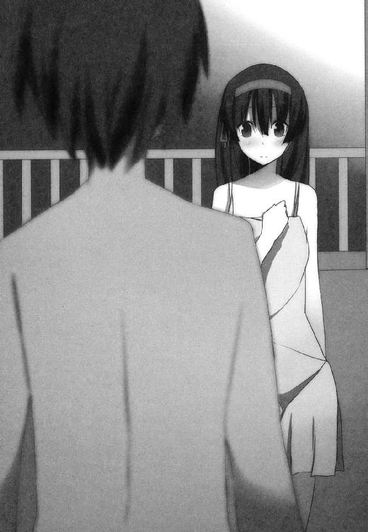
「で？ お前はどうだ？」
「......どう、とは？」
「おれの立場をもう一度ハッキリさせとくぜ？ おれはな、お前を世界一の魔法使いにするつもりだ。何がなんでも、石にかじりついてでもな。でもってお前が世界一になるためには、空子さんに勝たなきゃならねえ。あの人に負けっぱなしのお前が世界一を名乗るなんて、おれから見てさえありえねーんだからさ」
「............」
「で？ お前はどうなんだ？ まだ世界一を目指す気あんのか？」
「それは、もちろん。あるに決まってるじゃないですか」
「そっか。それを聞いて安心したぜ──って言いたいところなんだけどさ。どうも最近、そのへんがちょっと不安になってきてさ」
頭の後ろあたりをバリバリ搔きながら、
「お前って最初に会ったころは、ちょっとした火の玉みてーな性格してて。そりゃもー扱いにくいことこの上なかったけど──でもその代わり、世界一の魔法使いを目指すモチベーションは本物だった。そうだろ？」
「ええ。もちろんです。当然です」
「でもさ、最近のお前ってさ、あのころのお前とちょっと違うように思うわけよ。だってあのころのお前ならさ、もしケンカに負けたとしたら、ぜったい黙ってなかっただろ？ 空子さんとのケンカはさ、そりゃもうケチのつけようのないくらいボロ負けだったし、逆立ちしても敵わないくらい空子さんとは実力差がある、ってのはわかるよ。でもだからと言って、あのころのお前はその程度で心が折れたりはしなかったよな？」
「何か勘違いしてるみたいですね」
十貴子はむっとした顔で、
「わたしは心が折れたりなんかしていません。いずれ必ず世界一の魔法使いになってみせます。あなたに念を押されるまでもありません」
「じゃ、もっかい闘ればいいじゃん？ リベンジすりゃいいじゃん？ 空子さん言ってただろ？ いつでも挑戦を受けて立つって。 お前さ、一度でもお前から空子さんにケンカ売ったことあったか？ おれが知る限りじゃ一度もねーぜ？ セクハラにガマンできなくなった時だけ、やむにやまれず反撃する──そんだけだろ？ しかも反撃したところでボロ負けするわけだし」
十貴子はいよいよむっとした顔で睨みつけてくる、けど。
その視線は、かつてのように錐で突き刺してくるような視線ではなくて。そのことがまた天馬を苛立たせ、不安にもさせるのだ。
「なあ。おれが真っ先にお前に『魔法を教えてくれ』って頼んだ理由。わかるか？」
「それは──わたしがあなたにとっていちばん身近な魔法使いで、頼みやすい相手だったから、では？」
「それもある。でもそれだけじゃねえ。おれはな、お前に何ができて何ができないのかを知っておきたかったんだよ。当然だろ？ お前がどう思ってるのかはともかく、おれはお前のパートナーのつもりでいる。てことは、将来的にお前が空子さんに挑戦する時──おれはたぶんお前の隣に立っていっしょになって闘り合うことになるだろうからさ。そん時になったら困るわけだよ。お前の能力をきちんと知ってないとさ、お前のサポートをするどころか足手まといになりかねんだろ？」
「────っ!?」
「おれはな、お前が世界一になるためなら何だってやるつもりだ。毎日の雑務で時間が足りないってんなら、ぜんぶおれが肩代わりする。魔法の修業に集中できないってんなら、おれが何とかして集中できる環境を作ってやる。ひとりじゃ戦えない、ひとりじゃ勝てないってんなら──お前といっしょに戦ってやる。それが相棒ってもんだ。ちがうか？」
「ちょ、ちょっと待ってください。あなたが相棒とやらになるのはともかく、そこまで首を突っ込んでくるなら話は別です。姉さんと戦うにしたって、それはわたしと姉さんの問題であって、あなたまで絡んでくるのは──」
「おれはお前の命をもらってる立場なんだ。おれとお前は一心同体、別々になって闘り合うほうがむしろ不自然だろ？ それは空子さんも言ってたことだぜ？」
「それは、そうかもしれませんが......」
俯いてしまった十貴子に対して、しかし天馬は追及の手をゆるめない。
「血のつながった姉貴とケンカするのは気が進まない、ってのはわかる。姉貴に勝って『協会』の認める世界一になったって、お前の考えてる『世界一の魔法使い』と名乗れるのかどうか怪しい、ってのもわかる。でも本当にそれだけか？ お前が姉貴と積極的に戦おうとしない、勝とうとしないのは、もっと他に理由があるんじゃねーのか？」
「............」
「なんで本気出そうとしねーんだ？ お前が闘ろうとしない理由、ちゃんと聞かせろよ」
詰め寄る天馬だけど、十貴子は相変わらず下を向いたままで。天馬が求める答えを口にしてくれそうな気配はない。
（............？）
その沈黙に、天馬は内心で首をかしげる。
悔しさに歯がみしているわけでもなく。
徹底した鉄面皮で問いかけを拒絶するわけでもなく。
何だか言いたくても言えないことをガマンしているような──そわそわしてるような、もじもじしてるような。
「......わかった。今日のところはさ、その理由を聞かせてくれとは言わねーよ。でもさ、お前がどう思おうと、おれはお前といっしょに戦うぜ？ お前といっしょに戦って、空子さんに勝つ。でもってきっちり世界一の魔法使いになる。気は進まないかもしれんけど、それは認めてくれるよな？」
「............」
「この期に及んで何の役にも立たねーんじゃさ、おれとしてもマズいわけよ。『お前を世界一の魔法使いにする』って大見得切っておいて、現状はこの有り様なわけだし。このままみっともねえ姿を晒したんじゃさ、あまりにもピエロすぎて思わず死にたくなっちまうじゃん？」
「............」
返事はない。
昼間の熱気でまだうだる中、南の島の沈黙はさざ波と共にさらわれて、夜の闇へとかき消えていく。
＊
（笛吹けど踊らず、ってやつか）
次の日の昼下がり。
ひゃっはー団の招集もなく、魔法の授業もない空白の時間。
自主練の休憩がてら、天馬はビーチそばの木陰に寝そべって空を見上げている。
（とにかくこればっかりはなあ。おれ自身がどうこうすることじゃなくて、藤宮が自分でどうにかしなきゃいけないもんだし）
夢を追いかけてるのは天馬ではなく、あくまでも十貴子だから。天馬がどれだけやる気を出したって、どれだけ夢の達成を願ったって、当の本人が動いてくれなきゃ何も進まないわけで。
しかも十貴子のモチベーションがどうしてあそこまで沈滞しているのか、さっぱりわからないわけで。十貴子もまた、どれだけ問い詰めても答えてくれないわけで。
まったくもってもどかしい。
ああもどかしいもどかしい。
（ったく......こっちはいつでも準備オーケーだってのによ）
魔法の勉強はさっぱりだけど、実は自主練の成果は目覚ましいほどに出ているのだ。
例によって木を登ったり下りたりとか、砂の上を走り込んだりとか、沖まで泳いでいって素潜りしたりとか。
現代的な人体力学に則っているとは思えない原始的な、それでいて天馬にとっては不思議といちばん効果のあるトレーニングを。ここしばらくの天馬は、みっちりきっかりとこなしているのだ。
そのうえ山田さんが作ってくれる、栄養たっぷりでバランスの良い食事の効果もあって、なまっていた身体は急速にかつての姿を取り戻しつつある。
まあ頼みの綱に、あるいは切り札にしたかった魔法は、いまだに何も覚えられないけど。
万全の態勢とは言えずとも、これまでのどんな時よりも条件は整っている。
（ま、それで空子さんに勝てるかっていえば、ぜんぜんそんな気はしないけどさ）
藤宮空子。
あの十貴子をして手も足も出ない、破格の魔法使い。
彼女を打倒するには、一般人の天馬がどれだけ鍛え上げたところで決定打にはなりづらいだろうけど。
でも今回恵まれているのは、何度負けてもまた再挑戦できるということだ。魔法使いたちは自己保身の術に長けているようだから、ド派手な魔法バトルをやらかしても滅多なことは起きないようだし。
命ある限り、心の折れない限り、何度でも挑むことができる。
だったらいずれ必ず勝機を摑むことはできる──はず、だ。
（せめておれが藤宮の実力をもっとよく知ってて、でもってコンビでの動きとかもいろいろ確認できるなら。もうちょっと勝負になると思うんだよな。いくつかアイデアもないわけじゃないし）
異端の神童であった天馬は、おおむね誰からの指導も受けず、独立独歩で自分を磨いていたものだけど。それでも他人との協調性がなかったわけではなく、というかむしろ友達はたくさんいたほうだし、中には相棒と呼べるだけの人間も確かにいた。
共に行動し、共に同じ道を歩んでいける、同志ともいうべき存在が。
そいつとの息はぴったり合っていた。
長くつるんでいるうちに、お互いの呼吸がだんだん飲み込めてきて。いざ一緒に行動する際には、長年連れそった夫婦みたいに隙のないコンビネーションで動き、単独で動く時以上の成果を挙げてみせたものである。
まあもっとも。せっかくの息のあった動きも、そこらのチンピラやゴロツキの群れを相手にする時ぐらいにしか出番はなかったけど──
「よお天馬。休憩中か？」
「......おう。沢木か」
上から覗き込んできた親友に、天馬は寝そべったまま苦笑して、
「タイムリーだな。ちょうどお前のことを考えてたところだよ」
「なんだ。気持ち悪いな」
「いや。昔はお前といっしょにヤンチャやってたな、と思ってさ。......で？ 何か用か？」
「ああ、休憩中ならいいんだよ。また別の機会を探す」
「水くせーな。そろそろ休憩も終わりにしようと思ってたとこだし、用があるならここで言っていいんだぜ？」
「ふむ」
沢木は少し考えて、
「呼吸はもう整ってるか？」
「とっくに」
「筋肉に張りは残ってないか？」
「むしろほどよく運動して身体が温まった状態だよ。......つか何？ なんでそんなこと訊くわけ？」
「そうか。そういうことなら遠慮することもなさそうだな」
「なんだよ気持ちわりーな。早く用件を──」
「ちょっと手合わせしないか？」
親友の言葉に天馬はきょとん顔。
「......え？ 手合わせ？」
「ああ」
「誰と誰が？」
「俺とお前が、だよ。久しぶりにどうだ？」
「............」
即答できなかった。
確かに彼らふたりは子供のころ、鍛錬以上ケンカ未満の手合わせをよくやっていた。
アンドロメダを目指すためには健全な精神と身体が不可欠であり、拳で語り合いながら腕っ節を鍛えるのは大いにその助けになる──と信じていたし、実際その効果は十分にあったはずである。
とはいえ。
実力の差がハッキリあったふたりの組み手は、沢木の方が天馬のスパーリングパートナーを務めてくれていた、というほうが正確だ。
沢木もイイ線はいってたけど、それでも天馬には遠く及ばなかった。手合わせするごとに両者の差は開いていったものだし、その差は天馬が夢をあきらめた後も変化することはなかったはず。
まして現在のお互いの立場を考えれば──
「どうだ？ やるか？」
「......うーん。いやまあ」
「手合わせ、という言い方がよくなかったか。じゃあ言い方を変えよう」
リラックスした、ごく自然体な表情と声で。沢木は言う。
「俺と勝負してもらいたい。受けてくれるよな？」
「勝負？」
「ああ」
「なんでまたいきなり？」
「おいおい忘れたのか？」
沢木は呆れつつ、
「俺が何のためにコレットに手を貸して、何のためにコレットと組んで世界一を目指してると思ってる？ それもこれも天馬、お前を超えるための手段としてだぜ？ ちゃんとそう言っただろ」
そういえばそうだった。
でも、それにしたって面食らう申し出だろう。ここしばらくは空子に振り回されるか、もしくは十貴子と自分の将来を考えるのに手一杯で。こんな事態はまったく想定してなかったわけだし。
とはいえ、である。
確かに想定こそしてはいなかったけど。
「立てよ天馬。まさか逃げたりはしないだろう？」
「逃げる？」
よっ、という掛け声と同時に跳ね起きて、にやりと笑いながら、
「冗談だろ？ むしろ願ったり叶ったりってやつですよ。こっちだってなまった身体がどこまで戻ったか、確かめたいと思ってたんだ。今まさにちょうどさ」
こき、こき、と首を鳴らして。
その気になった天馬のモチベーションは、瞬きひとつの間で見違えるように煮えたぎっていく。
「手抜きはしねーぜ？」
「当たり前だ。本気でこい」
もちろん天馬も理解している。
組み手、手合わせとはいうが、これはいわば代理戦争。お互いに世界一を目指す魔法使いをパートナーに持つ者同士、やすやすと後れを取るわけにはいかない。
どちらからともなく間合いを取り、お互いに向き合って構えを取る。
「じゃ、始めっか？」
「ああ」
じりっ、と。
遠慮も何もない炎天下、ふたりはゆっくりと間合いを詰めていく。
（......おーおー。腕はなまってねーみたいだな）
天馬は内心で舌を巻いた。
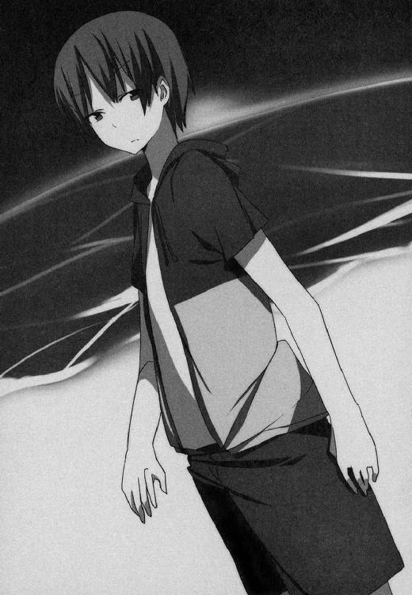
沢木の構え──というほどのものではなく、重心を軽く落として両手から力を抜いただけのスタイル──にはソツがなく、スキもない。かつて天馬を手こずらせた往時そのままの、地味ながら堅実な構えだ。
天馬と同じく、沢木も正規のルートで格闘技を学んだことはない。ゆえに彼の履歴には、空手何段とか柔道何段とか、そういう実績は何ひとつ載っていない。
でも天馬は知っている。
少なくとも小学生の当時、沢木のケンカの腕っ節はピカいちだった。天馬を除いては誰にも後れを取ったことがなかったし、もし年齢別ケンカ選手権みたいなのがあれば、確実に優勝候補に数えられただろう。
（ロケーションは海からちょっと離れた砂浜。使えそうな道具も限られる）
森の中にでも誘い込まない限り、せいぜい砂を飛ばして目潰しするか、あるいは事前に落とし穴でも用意しておくか。その程度しか小細工を弄する余地もない。
一対一。
自分だけが頼りのガチンコ勝負。
「────」
無言の気合いを放ちつつ、沢木が先に仕掛けた。
鋭く踏み込み、右の掌打でわずかなフェイントを入れ、勢いを殺さずに天馬の胴をねらって目の覚めるようなタックル。
（うほ、さすが。タイマンのやり方は忘れてねえなあ）
前傾姿勢を取り、足を後ろに跳ね上げるようにしてタックルを切りながら、天馬は内心で拍手喝采。一対一、誰の邪魔も入らないケンカであれば、まずベストに近い選択だ。ましてねちっこいタイプの沢木は、立ち技よりも寝技に長けている。
（つってもまあ、こいつのコレは予想済み──）
このまま沢木に体重をかけて覆いかぶさり、動きを止めた上で反転。そのまま背後を取れば、後の先を取った形の天馬が有利。あとは背後から地道に打撃を加えるなり、あるいは一気に関節を狙って勝負を決めるなり、
「────っ!?」
のけぞった。
タックルを切って次の行動に移ろうとしていた天馬の目の前に、沢木の後頭部が迫ってきて、
「うおっとお！」
間一髪。天馬のあご先を、一撃ＫＯ確実な頭突きが風を切って通り過ぎる。
泡を食った天馬はあわてて距離を取り、
「......あぶねーあぶねー。今のはちょっと予想外だった」
「よく避けたなあ」
感心する、というよりは呆れている顔で沢木。
「こっちとしては今ので決めるつもりだったんだけどな、お前のカンがまだ鈍ってそうな今のうちにさ。こうなるとちょっと長引きそうだな」
「......沢木。お前さ」
「なんだ？」
「腕、あげてね？ 昔よりもぜんぜん」
「遊んでたわけじゃないからな」肩をすくめて、「こんな島に連れてこられたもんで、毎日ヒマを持てあましてるんだ。ブランクを埋める時間はいくらでもある」
「なるほどな。裏でコソコソやってるとは思ったけど、そういうことだったか」
とはいえ、天馬だってそう捨てたものではない。
沢木の変則的な頭突きを見切ったカンの良さ。
いったんは動き出していた筋肉を強引に捻じ曲げる、膂力の強さ。
いずれも、その道のプロから見たって賞賛に値するだけの代物だ。長い間サビつかせていた割には出色である。
「へへ。久々にしては上出来だよ。命張って藤宮やらコレットやらと渡り合ってたおかげかな、こりゃ」
「ほう。その程度で満足なのか？ 天馬」
「まさか」
今度は天馬から仕掛けた。
左右にステップを刻みながら間合いを詰め、左のジャブ、次いで右ストレート。
スウェーとダッキングでかわした沢木がそのままタックルを狙いにくるところを、膝蹴りをチラつかせて牽制し、さらにもう一歩踏み込む。
左ジャブ。
右フック。
そのまま半回転して左の裏拳。
体を沈めてやり過ごした沢木がもろ手刈りに来るところを、後頭部めがけて右の肘打ち、狙いを外して肉の厚い背中にヒットしたものの、沢木の動きを一瞬止めるには十分。そのまま後ろに倒れ込みざま、腕と首に脚を絡めて三角絞めを狙ったところ、それを読んでいた沢木が天馬をふりほどいて距離を取り、仕切り直す。
（悪くねえ）
ふたたび鋭く踏み込みながら、天馬は確かな手応えを捉えていた。
我ながら驚くほどに動きが軽い。急速に回復したモチベーションが短期間のうちに強靭な身体を作り上げ、沢木というスパーリングパートナーを得て一気に開花しようとしている──そんな感じ。
（悪く、ねえ！）
歓喜に震える全細胞を総動員し、咆吼をあげて沢木に襲いかかる。
右の前蹴りから入り、バックステップで避けられたところを追撃。
左の崩拳で一気に間合いを詰め、長身の沢木の懐に潜り込んでインファイトへ。
左、右、左、と小刻みに掌打を繰り出しつつ、今度は天馬がタックルを仕掛けるが、読んでいた沢木の膝蹴りで迎撃される。
が、これは天馬も計算済み。両腕でがっちりブロックしたところへ、金属バットで殴られたみたいな衝撃が走り、しかしそれに構わず体を預ける。
沢木が仰向けに倒れるところへ、側転の要領で上を取ろうとするものの、タイミングよく跳ね起きた沢木はそれを許さない。
両者ふたたび立ち上がったところ、今度は沢木が仕掛ける。
天馬が受ける。
受けきって逆襲に出る。
攻守入れ替わって沢木が受ける。
──誰も見る者とていない、しかしひどく密度の濃い、技と力の応酬。
その中で天馬は、寸秒おきに蘇ってくるカンと、想像以上に動いてくれる五体に満足しつつも、
（こいつ、こんなに強かったか......？）
という疑問が湧いてくるのを抑えきれずにいる。
確かに天馬には、決して褒められない悪いクセがある。
どんな場合でもつい相手の力量に合わせてしまう悪癖だ。
相手の力量が自分より低ければ、自分の動きを相手の力量と同程度に下げてしまう。
獅子はウサギを狩るにも全力を尽くす、という言葉の対極に天馬はいる。数秒もあれば片付いてしまう相手、あるいはモノに対して、やたらと手間取ることが多々ある。
意識してやっているわけではない。まったくもってクセとしか言いようのない、いわば天馬の体質、あるいは本質と言っていいかもしれない。
ただし逆に言えば、相手が強ければ強いほど自分の実力をフルに発揮できる、ということでもある。時にはスペック以上の実力を発揮したりもする。魔法使いたちのケンカに関わった時などはその典型で、長年のブランクがあったとは思えないほどのパフォーマンスを天馬は示した。それこそ彼自身すら驚くほどに。
（にしても、ここまで粘られるってことは）
おおむね天馬の有利で展開しているのは事実。それでもかつて天馬が知っていた沢木であれば、とっくにケリをつけられる時間が経っている。
（この野郎。鍛え始めたのはここ最近の話じゃねーな？）
そう確信するほどに沢木は冴えていた。
沢木もまた、その点は実感しているのだろう。
ここに至って、七割がた天馬の攻勢をしのぐ側に回ってはいるものの。的確に天馬をさばいていく親友の目にはしたたかな自信が満ち、一瞬のスキを虎視眈々と狙っている。
油断を見せる、あるいは少しでも攻勢をゆるめることがあれば。のど頸を嚙み破られるのは天馬の側になるだろう。
（いいぜいいぜ。いいじゃねーか沢木）
そういうことならこっちもノってこれる、というものだ。
「そら──よ、っと！」
「!?」
瞬時にギアを上げた天馬の右回し蹴りが、一秒前とは段ちがいの鋭さで沢木の側頭部におそいかかる。
だが沢木も然るもの。わずかに目を開いて親友の変化に驚きを示したものの、左腕を上げてきっちりガード──だけでなく、半歩踏み込んで左ショートアッパーの反撃。
「しッ────！」
ここで天馬が勝負に出た。
沢木のショートアッパーは捨て技、続く右ストレートが本命──と読んだ。かつて何度か見たことがある。沢木が好んで使う連携だ。
アッパーを大きくのけぞってかわしながら、同時にバックステップの体勢に入ると。狙い違わず、一歩踏み込んでの右ストレートが来た。
（待ってましたよコレを！）
間合いを取り直すことを望んでいるかのようなバックステップは、誘いのフェイクであり、次の動作への布石でもある。
のけぞり＆バックステップの勢いを借りて、さらに大きくのけぞってストレートを避けると。両脚で立つだけのバランスが保てなくなり、背中から倒れ込む形になる。
もちろんミスではない。
重力に任せて倒れ込みつつ、右脚、左脚の順に跳ね上げて宙を舞う。
狙いは無防備に真っ直ぐ伸ばされた、沢木の右腕。
（いただき──）
沢木の手首を両手でがっちり摑み、両脚は沢木の肩口を挟み込む。
飛びつき腕ひしぎ逆十字。
教科書に載せてもいいくらい見事に大技が決まりかけた、その時。
親友がくちびるの端をわずかにつり上げたのを、たしかに見た。
「燃えろ」
──そのひとことの意味を天馬は考えなかった。
考えている余裕はなかったし、たとえ少しばかりの余裕があったとしても、次に何が起こるかを予測するのは困難だったろう。
彼はただ、彼の信頼する本能が高らかに警告を鳴らしたから、それに従ったまでである。
いわく『ヤバい逃げろ』と。
（ぬおっ!?）
摑んでいた手首を捨てて、首をうしろに反らせた瞬間だった。
目と鼻の先にあった沢木の手のひらが、うっすら発光したかと思うや否や。人類の古き友人である赤色の高熱が広がる。
赤色の高熱──炎としか呼びようのない、そして事実炎そのものが。天馬の前髪を焼き払いつつ放射されて。
「ぐッ────」
まったく想定外の事態に対処する対価として、天馬は受け身も取れずに頭から砂浜に落下した。
決定的な、あまりに決定的な隙。
いかに天馬とて、ここから逆転する目はない。
「勝負あり。だよな？」
気づけば肩関節をがっちり極められ、塩辛い南国の砂の上に這い蹲らされていた。
確認されるまでもない。
ケチの付けようがない一本勝ち。あるいは一本負け。
「ノってくると攻め手が前のめりになるのがお前の短所だよ、天馬。もちろんそこが長所でもあるんだけど」
関節を解放し、天馬を助け起こしながら沢木。
「左のアッパーから右ストレート。昔から俺がよく使ってたコンビネーション──仕掛けてくるならそこかな、と思ってた。というより期待してた、と言ったほうがいいか」
「............」
「しかしさすがの反応だな。お前なら避けられるだろうと計算してはいたけど、あのタイミングで、あそこまできれいに避けるか......あれだけ完全な奇襲で避けられるってことは、今のお前のスペックをもっと上方修正しておく必要がありそうだ」
「............」
「なんだ？ 何か言いたいことがありそうなツラだな？」
「......お」
「お？」
「お前なんだよ今のは!?」
茫然自失、絵に描いたようなキョトン顔をさらしていた天馬が。ようやく金縛りから解放され、全力でわめく。
「火!? 炎!? だよな!? 確かに見たぞおれ！ お前手から火ィ噴き出してやがったよなオイ!?」
「ああ。確かに出したな」
「しかも『燃えろ』とか何とかクールな一言でさ、いかにもそれっぽく！ 何だよお前それちょっとカッコいいと思っちゃったじゃねえかオイ！」
「そうか。それはありがとう」
「つうかお前なに普通に魔法とか使ってんの!? さっきのあれって魔法だよな!?」
「ああ。魔法だな」
「何で!?」
「コレットから教わった。まだ初歩の初歩だけどな」
「おれ使えねーんだけど!?」
「さあな。センスの差じゃないか？」
「つかお前、なんかコソコソやってるとは思ってたけど──こっちが本命か!? あーくそわかった、それで石井の野郎も口を濁してやがったのか！ おれに魔法を教えようとしなかったのは、お前にも魔法を教えて──あーくそ、そうだとわかってたら──」
すべてを悟って早口にわめいていた天馬が、そこで口をつぐむ。
わかってたら？
どうなるというのだ？
与り知らぬところで友人が魔法を学び、初歩の初歩とはいうものの、きっちり実戦で使えるレベルで身につけた。
むろん、知っていれば対策はいくらでも立てられただろう。
受け身を取り損ねるほど体勢を崩すこともなかったろうし、頭から落っこちて首筋を痛めることもなかったろうし、南国の塩辛い砂の味を味わうこともなかったろう。
天馬の有利で運んでいた勝負も、有利のまま進められたかもしれない。
結果として、順当にスパーリングパートナーから勝利をもぎ取っていたかもしれない。
が、すべてはif の話。
すでに過去のものとして消え去った、不可逆な可能性の話にすぎない。
一条天馬は、沢木悠太郎に負けた。
負けたのだ。
「安心しろよ天馬」
黙り込んでうつむく天馬に、親友は肩をすくめてみせる。
「こんなもんでお前を超えたとは思っちゃいないさ。お前と出会ってから十年くらい経ってるけど、そのあいだ俺はお前に勝てることなんてひとつもなかったんだからな。たかだか一度勝ったぐらいで、お前より上だと言うつもりはない」
勝利の美酒に酔うでもなく。まるで明日の天気でも占うみたいに。
「とはいえ──人生の半分以上を、お前の後ろを追っかけることに使ってきて。ここにきてやっと摑んだ尻尾だ。放すつもりはないぜ？ 絶対にな」
「............っ」
「始まったばかりだよ、まだ。次回を楽しみにしてる」
言って沢木は背中を向ける。
その言葉とは裏腹に、『越えた壁に用はない』とでも言わんばかりの素っ気なさで。
あとにはただ、何者にも侵しがたい南国の常夏と、一言も返せなかった敗者ばかりが残される。
（......始まったばかり？ 次を楽しみにしてる？）
くそったれ。
セリフまであいつに取られてるじゃねーか。どうみてもおれが言うべきセリフだろうが、それって。
「あーくそっ！」
勢いよく砂浜に倒れ込むと、乾いた砂ぼこりが派手に巻き上がった。
流木の上で羽を休める海鳥の鳴き声。
波打ち際に打ち上げられた海藻のにおい。
そして。
「うおおおおおおおおおおお」
のたうち回る。
砂まみれになり、うなり声を上げながら。
まるで駄々をこねる子供みたいに、この上なくみっともなく。
「くやしい！ マジくやしいぞこれ!?」
ちょっとやばいくらいだった。
頭に血ィ上りすぎて血管切れそうだった。
神童呼ばわりされてはきたけど何度も挫折は経験してきたし、世の中思い通りにいかないことはいくらでもあると知ってたつもりだけど。でも、それにしても、これは極めつきだった。
「ぬおおおおおおおんがああああああああああ」
沢木に負けた。
これまで一度だって後れを取ったことのない親友に、負けた。
甘く見ていたつもりはない。
見下していたつもりもない。
それどころか、たぶんこの世でいちばん沢木を高く評価しているのは天馬のはずで。だけどひいき目も過信も抜きで公正な評価を下すなら、確かに天馬のほうが沢木より数段上だったはずで。
「っかああああああああああああ」
ごろごろ。
ごろごろ。
転がりに転がって、腹に溜まった何かを思うがままに吐き出して。
やがて大の字の仰向けになった状態で、ぴたりと止まった。
一条天馬である。
かつては誰からもそれと認められるほどに光り輝き、自身もそれなりの自負をいまだ抱き続けている男だ。
無様をさらすのはこれにて終了。
彼には目的がある。やらねばならないことがある。
ならば結果にいつまでも足を引っ張られてはいられない。
次に何をすべきか考えなければならない。
これまでの来し方を振り返り、行く末を見据えなければならない。
一条天馬の身の振り方を。
いったい何をどうすべきなのか、どこへ向かって進むべきなのか、何をもって指針とするべきなのかを。
「あら。もうおしまい？」
退屈そうな声が近づいてくる。
確認するまでもない。この世の誰よりも楽しいことが大好きな、綿菓子みたいにふわふわした人外の人。
「とっても面白い見ものだったのに。つまらないわ」
「面白い見もの、ってのは。おれと沢木の組み手っすか？ それともおれがのたうち回ってる姿っすか？」
「もちろん両方よ」
ワンピース姿の師匠が弟子のそばにしゃがみ込んで、「えい。えい」とほっぺたを指で突いてくる。
「空子さん」
「なあに？」
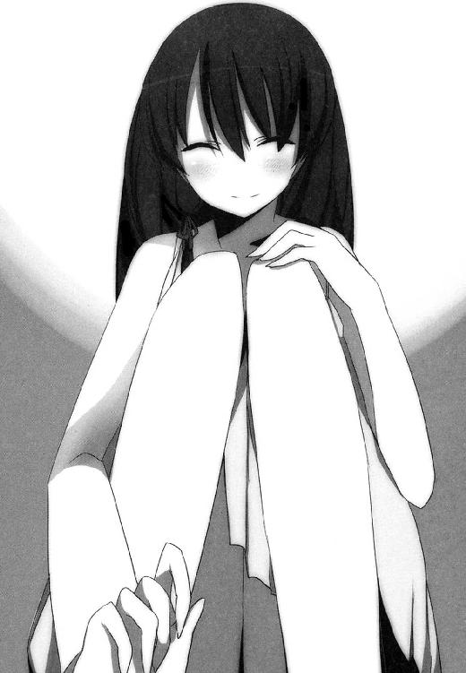
「やめてもらえません？ それ」
「あらごめんなさい。あなたの仏頂面を見てたら、つい弄ってみたくなって」
「あといちおう言っときますけど。その位置だと余裕でパンツ見えますからね？」
「ええ知ってるわ。少しは慰めになるかしら？」
「いいえ。そんな気にゃなれねっす。さすがに今は」
「あらそう。もったいないわね」
「それより空子さん」
網膜を灼く太陽を、それでもじっと睨みつけながら。天馬は言う。
砂まみれで転がってるうちに、もう腹は決まっていた。
「かなり身勝手な話ってのは承知の上で。ちょいと不肖の弟子の頼みを聞いてもらえませんか？」
＊
「お疲れさまです沢木さん」
盟友との勝負を終え、コテージに戻る途中だった。山田さんに出迎えられたのは。
「......どうも山田さん。どうしたんです？ こんなところで」
「わたしは一応、この島の管理を一手に担う立場ですから」
万能なメガネ美人メイドさんはニッコリ笑って、
「この島で起きていることに限れば、大抵のことは把握しています。労をねぎらう──というのもおこがましいですが、せめて少しでも早くひとことを、と思いまして」
「やれやれ。お見通しというやつですか」
「お疲れさまです沢木さん」
同じセリフをもう一度口にして。山田さんは丁寧な、ほんとうに丁寧なお辞儀をする。
「そしてありがとうございます、きっちり宣言を守っていただいて」
「宣言というと？」
「沢木さん、以前おっしゃってましたよね。『俺は天馬の壁になります』みたいなことを。あなたはその言葉どおり見事な壁になって、そして天馬さんに手痛い敗北を与えてくれた。お礼を言う筋ではないかもしれませんが、言わせてください。ありがとうございます、ほんとうに」
「いやあ。あはは」
対する沢木は乾いた笑い声をあげて、
「まあ俺としても、一度言ったことはちゃんと守りたいですからね。それなりに必死こいてここまでたどり着きましたよ。いやあ......」
ふう、とそこでため息。
「山田さん」
「なんでしょう」
「天馬、見てないですよね？」
「ええ。少なくともここから見える範囲にはいません」
「どっかに隠れてこっちの様子をうかがってる、ってこともないですよね？」
「それもないでしょう。天馬さんだって悔しさを紛らわすのに忙しいでしょうから」
「そうですか。いや、それを聞いて安心しました」
言って沢木は笑顔でうなずき、
「実際のところ、俺もそろそろヤセ我慢は限界なんですよね」
そのままバタリとぶっ倒れた。
前のめりに。顔面から。
「......さぞかし神経をすり減らしたでしょう、とは思ってましたけど」
あまりに唐突だった沢木のダウンに、とっさに何もできなかった山田さんが。あわてて沢木に駆け寄り、抱き起こす。
「まさかそんな、気の抜けた瞬間に倒れ込むほどだとは思いませんでした。ごめんなさいね、せめてもの気遣いのつもりでお迎えしたんですけど......逆効果だったみたい」
「いや。お気になさらず」弱々しく苦笑いして、「こっちとしても、せめて自分の部屋に戻ってからぶっ倒れたかったんですけど」
顔にベッタリついた砂を拭いながら、ふたたびため息をつく。
「まあでもちょっと言い訳させてください。マジになってる天馬の相手するのって、ほんとキツいんですよ。俺みたいな凡人だと特にね。マジになってる時のあいつって、ほんとに人間離れしてますから。下手すりゃ空子さん以上に」
「ええ、ええ。よくわかります」
「いったんスイッチが入るともう、なんというかオーラが違うんですよね。オーラなんていう安っぽい言葉で表現したくはないけど、でもそうとしか言いようがない......いやま、あいつに惚れ込んでる俺のことなんで。実物以上にあいつの姿が大きく見えてるだけなのかもしれませんけど。いやほんと、コレットとか藤宮を尊敬しますよ。あいつらよく天馬とあんなケンカできますよね」
「まったく同感ですけど、とにかく今は安静にして。ゆっくりお休みください。極度の緊張と疲労からくるものとは思いますけど、それでもまずは大事を──」
「俺、天馬に勝ったんですね」
山田さんの忠告を聞かず、沢木は口を開き続ける。静かで深い熱病にかかってうわごとを漏らすみたいに。
「いやはや、まさかあいつに勝つ日が来るとは......もちろん俺はコレットと絆魂してる身ですから、基本的なスペックは格段に上がってるわけで。言ってみればチートというか反則気味ではあるんですけどね。それにしても絆魂してからこの方、明らかに身体のどこかにスイッチ入った感じで。魔法への適性だって格段に上がってるから割とすぐに覚えられて、初歩的な魔法でも十分に奇襲になると踏んで今日──」
口で言っても無駄、と山田さんは判断した。
沢木に肩を貸す形で助け起こし、コテージへ向かって担いでいく。八十キロ近い大柄な沢木の身体も、クラーケン退治をうそぶいて海に潜れるメイドさんにとってはさしたる重荷でもない。
「勝ったんですね。俺。ほんとに──」
壊れたスピーカーみたいに呟き続けていた沢木の声が途切れる。消耗が限界に達して眠ってしまった──というより、気を失ってしまったのだろう。
「......おつかれさまでした。本当に」
つとめを果たした同盟者を支え直しながら、うっすら微笑む。
それから誰に聞かせるでもなく、小さな声で。
「こちらの勝手な都合ゆえとはいえ、これだけお膳立てしてるんですから。これで奮起してくれないなら──わたし、本当に怒ってしまいますからね？ 天馬さん」
強くなってきた潮風に吹きさらされながら。ふたりの姿はゆっくりとコテージに吸い込まれていく。
太陽がじりじりと傾き始め、気の早い西の空はそろそろうっすらとオレンジ色が混じり始めている。
この島に来て三週間目になる一日も、もうじき暮れる。
ＡＣＴ４ やられっ放しじゃ終われない
さすがは藤宮十貴子。時間には正確だった。
「......なんですか。こんな時間に呼び出して」
ちいさな船が何艘か並んでるだけの、こぢんまりしたヨットハーバー。
半分の月が中天にのぼる夜。
「おう。悪ィな」
片手をあげて、天馬は相棒を出迎える。
「お前とふたりで話したかったんだよ。誰にも邪魔されずにさ」
「それは、わかりますけど」
細い舫い杭の上に器用に座っている天馬へ近づきながら、
「なんですか？ 話があるって」
「なあ藤宮」
「はい」
「やっぱ無理だわ。空子さんに勝つの」
「............」
月を見上げながらそう言い放つ天馬に対して。
十貴子の沈黙は、たっぷり数十秒も続いた。
「......確認させてください」
「なに？」
「あなたは今こう言ったのですか？ 『やっぱ無理だわ。空子さんに勝つの』って」
「ああ。一字一句あってるよ。時間だけじゃなくて、そういうところも正確だよな、お前って」
「............。そうですか」
そこからさらに短く、それでいて重い間をはさんで、
「確かにわたしと空子姉さんとの間には致命的な実力差が存在しますし、個人的な心情としても姉さんと対決するのは気が進みません。姉さんに勝ったからといって世界一を名乗っていいのか、という疑問もいまだにあります。そのわたしが言える立場ではないことは百も承知で──いいえ、千も万も承知の上で、あえて言わせてもらいます」
そう言って『すぅっ』と息を吸い込んで。
藤宮十貴子は、一条天馬にとってちょっと懐かしい表情をした。
ここしばらくはめっきり見かけなかった──瞳から炎があふれ出しそうな、激しく燃えさかる激怒の表情を。
「あなた、そんなに簡単にあきらめるつもりなんですか？ ええ、ええ、もちろんわかってます、どの口でそんなことを言うのかと罵ってもらってもけっこうです。でもあなた言いましたよね？ わたしを世界一の魔法使いにする、何があっても絶対するって。空子姉さんに勝っても世界一にはなれないかもしれないけど、空子さんに負けっ放しじゃ絶対に世界一にはなれないんだから、って。なのにそのあなたの口からそんなセリフが出るんですか？ 勝つのは無理だ、なんてセリフが？ 冗談も休み休み──」
「何日だ？」
まくし立てる十貴子をさえぎって、
「藤宮。おまえ何日保つ？」
「......？ 何日保つ、って何が？」
「おれがいなくても生きていられる期間。お前、おれから生命力を補給してないと生きていけないよな？ じゃ、おれ無しで生きていられるのは何日だ？」
「それは......」
彼女にとって想定外の質問だったらしい。
きょとんと目を瞬かせ、しばし考えるそぶりをしてから、
「実際に検証したことがないので何とも。これまでの経験からいえば......そうですね、二週間ほどであれば。なるべく消耗を避けて生活すれば、その程度は十分に保つと思いますけど」
「なんとか一か月にならねーか？ なるべく、じゃなくてギリギリまで消耗を避けて生活するって前提なら。そのくらい保ったりしない？」
「......繰り返しになりますが、検証したことがないので確かなことは言えません。でもそうですね、爪の先に火を点すように慎ましく、消耗を抑えて生きるなら。たぶん一か月ぐらいは何とかなるんじゃないでしょうか。ただ単に生きてさえいればいい、という条件であれば、もう少し先まで保つとは思います。極論すれば、半冬眠みたいな状態でずっと寝ていればいいんですから」
「そっか。オーケー、それ聞いて安心したぜ」
「安心......？」
「なあ藤宮。ちょっとおれに時間をくれないか」
「時間を......？」
天馬の言葉をオウム返しにする十貴子。
未だに彼女は読み違えているのだ──一度『これ』と決めたことを簡単にあきらめられるほど天馬は往生際が良くない、ということを。
「何の話をしてるんです？ あなたはいったい何をしようとしてるんですか？ 何を考えてるんですか一体」
「何を考えてるかって？ 決まってるだろンなもん。おれとお前が空子さんに勝つための算段だよ」
「でもあなた、さっきは」
「ああ確かに無理だぜ？ 空子さんに勝つのは。今のままだったら、な」
へらっ、と笑って──しかしその瞳には、念入りにくべた炭火みたいな情熱を赤々と宿して。天馬は言う。
「なあ。考えてみりゃさ、まだお前にはきっちり納得してもらってないんだよな」
「何が......です？」
「おれとお前がコンビを組む、ってことについてだよ。お前は『勝手にすればいい』って言ったし、おれも勝手にするとは言ったけど。仮にも業界のてっぺん目指すコンビがそれじゃ、ちょっと締まらねーと思うわけよ。そうだろ？」
「それは......そのあたりの感覚はわたしにはよくわかりませんが......」
「おれはお前の相棒にふさわしくねえ」
鋭い視線で十貴子を見据えながら、天馬。
「少なくとも今はな。なまっててもそれなりにやれる──とか思ってたけど甘かった。ぜんぜん話にならなかった。だから一か月おれにくれ。一か月間、お前と離れてひとりでみっちり修業したい。その間におれは、おれのレベルを数段上まで引っ張り上げるから。せめてお前の──世界一を目指す魔法使いの足手まといにならない程度には、な」
「一か月......？ そんな短い時間で？」
「まあ何とかしてみせるさ。それで何ともならないなら、どのみちおれに見込みはなかった、ってことになるんだろうし。だから一か月経ったらさ、その時お前に判断してもらいたいんだ。お前の相棒としておれがふさわしいかどうかを、お前の隣に並び立つ資格があるのかどうかをさ。でもって、おれを相棒にして空子さんに挑戦するのかどうかも、そこで決めて欲しいと思ってる」
「で、でも......自分のレベルを上げるって、どうやって？ あなた魔法の才能はこれっぽちもないんじゃ？」
「ま、その通りなんだけど」
忌々しそうに顔をしかめながら、
「ここにきてやっと気づいたというか、あきらめがついたというか。ていうかおれ、まだ楽しようとしてたんだよね、どうも。だって魔法ってつえーじゃん？ 便利じゃん？ だからついね、食いついちまったんだよ。でもま、やっぱ楽しようとするとロクなことがねえんだな。けっきょくは無駄に時間を使っちまった──いやまあ、魔法は使えなくても魔法ってもんが少しはわかったからさ、まるっきり無駄ってわけでもなかったけど」
そうして天馬は笑顔をみせる。
自信と意欲に満ちた──そう、まさしくかつて神童と呼ばれたころの彼、そのままに。
「一か月。その間におれは自分を鍛え直してくる。おれにしかできない、おれだけのやり方でな。魔法なんか使えなくてもお前の隣に並べるくらいに鍛え上げてくる。いやもうこの際だ、一般人のままでもお前を追い越すぐらい鍛えてきてやるよ。でもってその暁にはお前にこう言ってやるぜ。『いつまでそんなところウロウロしてんだ？ 早くおれのレベルに追いついて来いよ』ってな」
「............」
「不可能だ、そんなのできるわけない、って思ってんのか？ まあそれも無理はねえよな、おれがお前の立場だったとしてもそう思うだろうよ。でもおれはな、やると言ったことはやるぜ？ 一度口にしたことは絶対にやる。何がなんでも、死んでもやりとげる。『やる』と言ってやれなかったのは、これまでの人生で後にも先にも一度だけだ。二度とケツをまくる気はねえ。つまり──おれが『やる』と言ったら、それは必ず『された』になるってことだ。わかるか？」
「で、でもそんな」
急に生き生きと輝きだした天馬を前に、呆気に取られていた十貴子だけど。そこでようやく反論に出る。
「そんなのどうやって？ 普通じゃできないことができるから、魔法は魔法なのであって。魔法を使えないあなたがどうやって魔法を超えると──」
「そこはアレだ。昔取った杵柄、ってやつ。ガキの頃はそれなりに自分を鍛えてたし、鍛える方法についてはそれこそ何千通りも、何万通りも考えてきたからさ。まあどうにでもしてみせる」
「そんな無茶な......わたしとしても、あなたがそうやって向上心を持ってくれることは嬉しいですけど、でも」
「藤宮。おれを信じられねーか？」
反論にも天馬はびくともしない。
それどころか一笑して肩をすくめ、まるで聞き分けのない子供をあやすように言って聞かせるのだ。
「信じろ。ぜったい応えてやるから」
なんて風に。
己をカケラも疑わず、ただ確信だけに満ちた声で。
断言できる。
天馬にそんなセリフを吐かれてもなお、首を横に振れるなら。藤宮十貴子の人生はもっとずっと平坦で穏和なものになっていたはずであり──そして同時に今この瞬間、彼女が感じているような気持ちは、決して味わうことができなかったはずである。
胸が締め付けられすぎて目まいがするという、ある意味ありがた迷惑な──だけどやっぱり嬉しくて嬉しくて舞い上がってしまいそうな、こんな気持ちは。
くるりと背中を見せて十貴子は言う。
それはもちろん、月夜にも鮮やかに染まった赤い顔を隠すための、とっさの回避行動だったけど。天馬はこれっぽちも気づかない。
「......信じて、いいんですね？」
「おう。当然」
「うそだったら怒りますよ？」
「うそなんてつかねーよ」
「約束できますか？」
「おうよ」
「口ほどにもなかったら承知しませんよ？ そんな大口たたいて、それでもぜんぜんダメだったら......絶対の絶対に承知しませんから。今度という今度こそ、約束は守ってもらうんだから」
「？ 今度こそ、ってのがよくわからんけど、まあいいや。どのみちおれの答えは変わんねえ──おれを信じろ藤宮。一か月で別人になってみせらあ。何なら指切りでもしてやろうか？」
「............」
ふう、と大きく肩で息をして。
背中を向けたまま十貴子は言う。
「好きに、すればいいじゃないですか」
「......いいのか？」
「構いません」
「一か月──短くはねえぜ？」
「何を今さら。あれだけ大見得切っておいて、今さらそんなことを気にすると？ あなたまさか怖じ気づいたんじゃないでしょうね？」
「それこそまさかだよ。言っただろ？ 今さらケツまくったりはしねーってさ。──じゃ、ほんとにいいんだな？」
「女に二言はありません」
「............。そっか。わかった」
うん、とひとつ頷き、相棒の背中に向けて頭を下げる。
「お前の心意気、確かに受け取った。見事だよ。正直ちょっと見直した。お前の心意気にはきっちり応えてみせる。ありがとうな」
「礼を言われる筋合いはありません。それに心意気などと言いますけど、こちらの苦労など大したものじゃないでしょう？ たった一か月で別人になると宣言したあなたのほうこそ、並ではない苦労があるはず。わたしの事を気に掛けることなんてありません、思う存分に励んでください」
「............すげーな。いや、マジで見直すよ、お前のその根性は。いや参ったな、こりゃ嬉しい誤算ってやつだよ。こうなるとアレだな、せめてお前の根性に見劣りしないだけのモノを、おれも示さなきゃならなくなったな。いや、嬉しいよおれはマジで。ちょっとマジでテンション上がってきたかも」
「それは何よりです。それでは早速、明日から修業とやらに励んでください。いったいあなたが何をどうするつもりなのか知りませんが、わたしのことはどうか気にせず──」
「明日から？」
天馬は鼻で笑って、
「んな悠長なこと言ってられっかよ。お前に根性見せつけられる前から、おれの腹は決まってたぜ？ 話が纏まったその瞬間から始める、ってな」
何のためにここに呼び出したと思ってんだよ。
そう嘯きつつ、天馬はその場でストレッチを始めた。
ちいさな船が何艘か並んでるだけの、こぢんまりしたこのヨットハーバーで。
「............？」
その様子を悟った十貴子が、怪訝そうに振り返って。
それと同時に、天馬は『しゅたっ』と片手を上げたかと思うや、
「じゃ、行ってくるわ」
そのまま、何のためらいもなく、軽々と。
頭から飛び込んで行ったのだった。
黒々とした闇がわだかまる、夜の海へ。
「ちょっ────」
絶句したのもほんの刹那。
遠洋に向かって泳ぎ出した天馬を追うようにして、十貴子もまた桟橋を蹴って空中に躍り出た。
もちろん彼女は海に飛び込んだりはしない。魔法で宙を舞い、あっという間に沖へ出ようとする天馬に追いすがって、
「ちょっとあなた!? 何してるんです!?」
「ああん？ 何してるってお前」
平泳ぎのくせに、やたら速いスピードで海水を搔き分けながら、
「見りゃわかんだろ。泳いでんだよ」
「そんなのわかってます言われるまでもなく！ わたしが訊いてるのはそういうことじゃなくて！ 何のつもりでこんな真夜中に、ろくな準備もなく海に入っているのかということです！ 修業とやらをするにしたって、そんな無謀な──」
「修業？ アホかお前。こんなもん修業のうちに入るかよ」
泳ぐ速度を緩めず、不敵に笑って、
「これは単に移動してるだけ。修業はじめるのはそっからだよ」
「移動!? 移動ってどこへ!?」
「隣の島」
「隣の島って、あなた──」
ふたたび絶句の十貴子。
「あなた気は確かですか!? 隣の島まで何キロあるかちゃんとわかってます!?」
「だいたい十キロぐらいだろ？ ちゃんとわかってるよ」
トライアスロンの水泳競技が一・五キロ。
言うまでもなく運営側がきちんと管理する、昼間のコースの話である。
「この島に居ちゃ、外野がうるさくて修業にならねーし。だからおれ的には最初からそのつもりで──って、そういやお前には言ってなかったっけか？ でもまあ、まさかお前もさ、この島に居たままおれがどうこうするとは思ってなかっただろ？」
「そ、それは──いえ、そんなことはともかく！ 今すぐ戻ってください！ こんな夜中にこんな場所を泳ぐなんて危険すぎます！ 無謀にも程があります！」
「無謀、か。そうだよな、無謀だよな」
だがしかし。
十貴子の悲鳴にも天馬は涼しい顔で。
いや、むしろいよいよ笑みを獰猛にして。
「でもな藤宮。昔のおれはさ、それができちゃってたわけよ。誰に聞いても無謀だって言う、誰が見たって不可能だと思うことをさ。『ふざけんなてめー、ンなもんやってみなきゃわかんねーだろ』とか言いながらさ、昔のおれはきっちりやってのけてたわけだよ。十年前の、ほんのガキだったおれがだぜ？ だったらさ、今のおれにできない理屈はねーよな？ ちがうか？」
「そんな、それこそそんな無茶な理屈......それにあなた、隣の島で一か月修業するにしたって、ちゃんとそれなりの準備をしてるんですか!? たしか無人島でしょうあそこって！」
「準備なんてしてねーよ。あの島に持ち込むのは今着てる服だけだ、ナイフ一本だって用意してねえ。つーかさ、そんな準備万端な環境で修業になると思ってるわけ？」
「食事はどうするつもりなんです!?」
「現地調達だな」
「寝る場所は!?」
「それも現地調達」
「病気やケガとかしたらどうするんです!?」
「運がよけりゃ生き残るだろ。運が悪けりゃのたれ死ぬ」
「ばっ、馬鹿ですかあなたは!?」
「なんだ知らなかったのか？ おれはずっと昔から、他の追随を許さないほどの大馬鹿だよ。ここ最近は割と小賢しく生きてたけどな。......あーそうだ、念のため言っておくけど。修業してる間はいっさい手出し無用だから。一か月間は誰にも邪魔されたくないからさ、何があってもあの島には誰も来ないようにヨロシク」
「そっ、そんなの承知できますか！ だめです許しません、そんなの認められません！ 今すぐ戻って──」
「信じろ、つったろ？」
大胆不敵に、自分をカケラも疑ってない目で。
これだけ会話を交わしながらも泳ぐ速度を落とさず、むしろギアを一段上げながら。
「信じられねえか藤宮？ 死ぬ気でどでかい花火を打ち上げてみせる、って言ってるおれを──お前の相棒を」
「────っ」
「信じろ。さっきも約束した通りだ。きっちり結果を出して帰ってくるから。絶対」
「............うううう～～～～～っ」
無自覚であるにせよ、よくよく天馬はひどい男である。
彼からこんな風に言われて、十貴子がノーと言えるわけないのに。
「へへ、それにしてもさすがだよなお前」
でもって、だ。
一条天馬とは本当に、つくづく、とんでもなくひどい男である。
無意識のセリフで黙らせておいてから、さらにこんな一言を放つのだから。
「お前はさ藤宮、おれが見込んだ以上のヤツだったよ。正直言って、あそこまで簡単におれの修業を認めてくれるとは思ってなかった」
「えっ......？」
「だってそうだろ？ おれがお前から一か月も離れてるってことはさ、お前はその間なるべく大人しく、じっとしてなきゃいけないわけで。てことはこれから先の一か月、お前は空子さんとコレットのセクハラを無抵抗で受け入れなきゃいけない、ってことになるわけじゃん？」
「........................あ」
「いやあ正直言って驚いたよ。空子さんとコレットのオモチャになるのを、お前ってめちゃくちゃ嫌がってたしさ。下手すりゃ『ふざけないでください！』ってぶん殴られるところまである、って覚悟してたんだけど。でもお前、ちょっと考えただけですぐにイエスって言ってくれたじゃん？ いやすげーよお前、それでこそおれが相棒に選んだヤツだよ。根性の出来がちがうよな」
「え。あ」
「まあアレだ、あのふたりのことだから。お前が抵抗できないって知ったら、ますます調子に乗ってとんでもないセクハラをしてくるかもだけど。頑張って耐えてくれよな？ その間におれは、きっちり化けてみせるからよ。お前の犠牲をぜったいに無駄にはしないから、まじで」
「............え。............う？」
「そんじゃま、そろそろ行ってくるから。見送りはこのへんでいいよ。あんま見送りが長いと、それはそれで格好つかねーしな」
「あ、あの、テンマ？」
「おう何だ？ つかお前、いま初めておれの名前呼んだ？」
「さ、さっきの話、やけど」
「ん？」
「やっぱ、無しにせえへん？ あの、ぼくそれ、やっぱちょっと無理──」
「......ぶっ。あははははははは！」
天馬、大爆笑。
「おいおい何だ、お前でもそんな冗談言うことあるんだなあ！ つかこっちは泳いでんだからさ、そういうネタで笑かすのはマジ勘弁だぜ？ 溺れちまうじゃん？」
「え、いやあの。冗談やなくて、ほんまに──」
「いやー、しかし本気で笑ったぜ。半人前とはいえ、仮にもひとりの男が命がけで自分を変えてくる、って言ってんだ。それを相棒のお前が今さら止めたりする──なんてこと、あるわけねーのにな」
「はうっ......!?」
「しっかしお前、たまにそのしゃべり方するよな？ それ聞くたびに何か忘れてそうな、思い出しそうな気がするんだけど......まあいっか！ 今はとにかく前を向いて進まなきゃいけない時期だし！」
言って天馬は泳ぎのフォームを変える──持久力重視の平泳ぎから、スピード重視のクロールへと。
「じゃあな藤宮！ 一か月後を楽しみにしててくれよ！ うーっし、やる気出てきたぜコノヤロー！」
「ちょ、ちょっと待──」
すでに天馬は外洋に出、波は高く激しく。あえなく十貴子の声はかき消される。ましてフォームをクロールに変えた天馬に声が届くはずもなく。
「ひゃっはー！ やってやんぜこんちくしょー！ うはははは！」
「待って、ちょっとあなた、テンマ──こらあ！ 人の話聞けバカあ！ せめて二週間に、いいえ三週間でいいから！ もうちょっと期間を短く──って聞こえてないし！ ああもうバカ！ アホ！ うわあああん！」
＊
「......ふふ。いいじゃない、面白いわ」
コテージのテラスに出したデッキチェアに寝そべりながら。
藤宮空子はシャンパングラスを揺らしつつ、愉快そうに頷いている。
「師弟関係を解消したい、って言うから何をするかと思えば......いったん火が点くとああいう風に化けるのね、天馬さんって。直情径行で向こう見ずで、思い立ったらすぐ行動。そのくせ直感は優れてるから狙いを外さない。──ふふ、あたくしあの子のああいうところ、大好きよ。見てて楽しいわ本当に。ねえそう思わない？」
「そうですね」
月明かりの色そっくりなシャンパンを、主のグラスにつぎ足しつつ。山田さんはそっけなく肯定する。
「ああいう人なんです、天馬さんは。死んだと思えば生き返る。ぜったい不可能なことを可能にしたかと思えば、誰にとっても簡単なことに四苦八苦する。期待を外したかと思えば、誰も期待すらしなかったことを平然とやってのける──そういう、人です」
「ふふ。まるっきり鬼っ子ね」
「ええまさしく。生まれながらのトリックスター、何が飛び出てくるのかわからないびっくり箱。ですからあの方から目が離せないし、決して見放すこともできない。わたしも、十貴子お嬢さまも」
「ふふ、そうね。その通りかもね」
機嫌よく同意して、空子はシャンパンに口を付ける。
「まあずいぶん遠回りはしたけれど、ようやく自覚も出てきたみたいだし。これから先は期待していいんじゃないかしら？」
「......空子お嬢さまが、天馬さんに魔法を教え始めた時は。正直肝が冷えました」
「ふふ。『万が一にも天馬さんが魔法を使えるようになったらどうしよう』って？」
「はい」
「相変わらず心配性ねえ。そんなことあるわけないじゃない」
くすくす笑う声が月夜にひびく。
「だってあの子はとっくに魔法使いなんだから。それもあの子にしか使えない、あの子にすら理解できない、おそらく世界でただひとつの魔法を使う、特別な魔法使い。あたくしたちの『魔法』で括ることなんて、できやしないわ」
「......はい。結果としては、空子お嬢さまのおっしゃる通りになりました」
「びっくり箱というのは上手い表現ね。確かにどう転ぶかわからない子よ、彼って。本当、まるでラグビーボールみたいに跳ね回るんだもの。まあでも本来、そういうものこそ才能と呼ばれるべきものなんだわ。あるいは天賦、とでも」
「同感です」
「ところで山田さん」
「なんでしょう」
「ふたりの時くらいは、そんな畏まったしゃべり方おやめなさいな。いつもそう言ってるのに」
「空子お嬢さまは藤宮家の方で、わたしは藤宮家のメイドです。分を超えた真似はできかねます」
「じゃ、藤宮家の人間として命令しちゃおうかしら。ふたりの時は、そんな畏まったしゃべり方はおやめなさい、って」
「............」
「それだけじゃないわ、あたくしとあなたの仲でしょう？ なんでも頼ってくれていいし、なんでも訊いてくれていいのよ？ でなきゃ寂しいじゃない」
「──じゃあ訊くけど。なにを考えてるの空子？」
山田さんの空気が変わった。
「なぜ今この時期に帰ってきたの？ なぜあなたはそんな過剰なまでの、異常なまでの魔法を身につけたの？ いいえ、そもそも──どうやったらそんな魔法が使えるの？ 当代最高クラスの魔法使いである十貴子お嬢さまをして、手も足も出ない。そんな強力な魔法は常軌を逸しているわ。あなた一体なにをやらかしたの？」
語気するどく、視線はまるで研ぎ澄ました刃のように。
普段の彼女からは想像もつかない、有無を言わさぬ問いかけに。しかし空子はいささかも表情を崩さない。
「あなたでも気づかないことがあるのねえ。いいえそうじゃないわね、きっと薄々は気づいてるんでしょう。ただ認めたくないだけで」
いつも通りにふわふわ、ゆるゆると。南の島をひとりで春の空気に染めている。
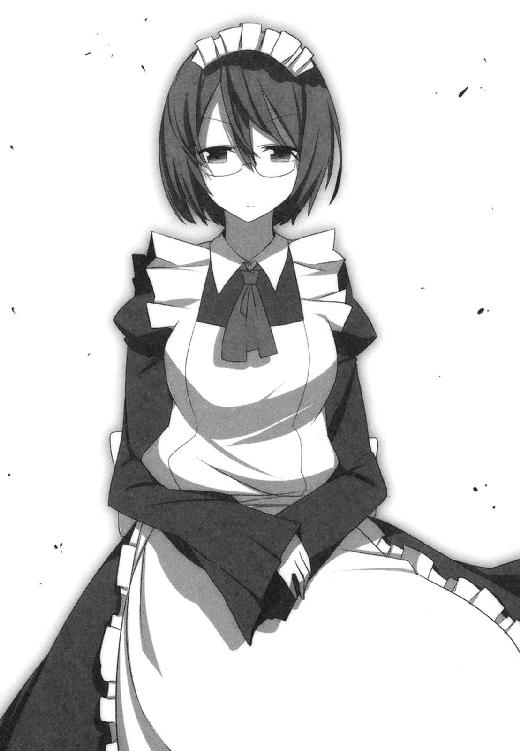
「じゃ、そういうことならもうしばらく黙っておこうかしら。そのほうが楽しそうだものね」
「......空子」
「ふふ、だめよそんな怖い顔しても」
「なんでも頼ってくれていいし、なんでも訊いてくれていい。そう言わなかった？」
「ええ言ったわよ？ でも答えられるとは限らないわ。たとえあなたが相手でも」
「............」
忌々しそうに息を吐いて、
「そういうところは本当、昔から変わらないわね。わたしとしては、ペンチでねじってでもその口を割らせたいところだけど」
「試してみる？」
「いいえ。時間と体力の無駄だわ。そういう顔をしてる時のあなたって、どんな拷問にかけても何もしゃべらないでしょうから」
「ふふ。正解ね」
肯定しつつ空子はグラスを空にして、
「だいじょうぶ、安心して。あたくしは生まれてこのかたずっと、そして未来永劫ずっと、十貴子さんの味方だから。いつだって十貴子さんのためを思って、十貴子さんのために行動してるつもり。もちろん必ずしもあなたの意に添う形になるわけじゃないでしょうけど──でも、決して悪いようにはしないわ」
「天馬さんは？」
「あの子は管轄外ね。可愛くて面白い子だけど、十貴子さんとは比べられないもの。彼をどうにかしたいなら、あなたが自分の責任でおやりなさいな」
「......そうね。その通り」
笑顔で突き放す空子のグラスにシャンパンをつぎ足しながら。山田さんは内心で己を叱咤する。
言われるまでもない。もとより期待するつもりもない。
思惑は人それぞれ、千差万別。思惑同士が合致するなら手を携え、対立するなら拳を交えるのみ。
あるいは近い将来──空子と袂を分かつこともあるかもしれないけれど。その時が来たならば、山田さんは立場を超え、一線を越えて、己の思惑のために死力を尽くすことになるだろう。
たとえ無謀と承知でも、である。
山田さんにだって、決して譲れないものが確かにあるのだから。
「まあ待ちましょう、今は」
もう何杯めになるかわからない美酒を、顔色ひとつ変えずに飲み干しながら。
空子はいよいよ微笑を深くして言う。
「今は流転の潮目、季節で言えばまだ春の先触れを迎えたばかり。瑞々しく、青々と育っていくのはこれからでしょう──枯れ野原が瞬く間に緑色に染まっていくみたいに、きっとドラマティックでドラスティックな景色を見せてくれるでしょうから」
＊
ふたりの麗人を月明かりの帳で包みつつ、南の夜はゆっくりとふけていく。
むろん、この時の山田さんは知るよしもない。
絶対的な強さを誇るとはいえ、空子もまた神ならぬ身──おそらく彼女の計算からさえ外れていたにちがいない。
だって、誰が想像しうるというのか──神ならぬとはいえ、ほとんどそれに近い圧倒的実力差を見せつけていた藤宮空子が、いともあっさり敗北を喫することになるなど。
一条天馬が帰還を果たすころ、この島におけるヒエラルキーがすっかり様変わりしていることなど。この時はまだ、誰も知るよしとてない。
あとがき
なんとか夏に出せました。
──四か月ぶりです、鈴木です。『１×10』シリーズの最新作、ここに無事刊行と相成りました。こうしてお手にとって頂けて幸いです。このままレジにまで持っていって頂ければもっと幸いです。
話は変わりますが、作家にはおよそ二種類のタイプがいます。
毎日コツコツ原稿を書く人と、締め切りがヤバくならないと原稿を書けない人です。
そして僕の知る限りにおいて、多くの作家さんは後者に属するようです。
そりゃそうですよね。このあとがきを読んでる大半の人だって、夏休みの宿題は八月後半にならないと手を付けないでしょう？ いやむしろ、夏休みが終わってからようやく宿題を始めるという人が多いのではありませんか？
ご安心ください。
ご多分に漏れず、僕もそっち側の人間です。
八月後半になって宿題を始めたら拍手もの、夏休みが終わってから始めればまあいつも通り、場合によっては卒業まで宿題の提出を拒む、なんてこともありました。
宿題なんて面倒くさいもの、提出期限が近づいてこなきゃとてもじゃないけどやってられません。
宿題を毎日コツコツこなしていくなんて、まして夏休みの初期のうちに済ませてしまうなんて、これはもう人間業とは言えないでしょう。人間とは本来、怠惰に作られているのであって、勤勉に作られてはいないのですから。
............え？
『それで結局、お前はどっち側の作家なんだ？』ですって？
はい。
実は前者です。
毎日コツコツ原稿書いてます。
一日およそ五枚ほど、年間にして千八百枚程度。だいたい文庫換算で六冊分になりますね。
......いやいやお待ちあれ。
どうぞ振り上げた拳をお止めになって、話の続きをお聞きください。
というのもですね、僕も『二ノ宮くん』シリーズでデビューしてから、もう六年とか七年とかになるわけです。
ぶっちゃけ、入れ替わりの激しいこの業界ではそろそろロートルの域です。
でもって、生きのいい新人作家さんたちと同じ業界で勝負していくためには、何かしらロートルなりのアドバンテージがないといけません。
そこで僕が選んだ道が、『毎日コツコツ書く』だったわけです。
このやり方をちゃんとこなせれば、この業界の作家としては多めの年六冊という数字を出せますし。何より『いつ、どのタイミングで書き上がるか』を計算しやすくなる、ということでもあります。
『１×10』シリーズでは締め切りを破ったことがない、と三巻のあとがきに書きましたが。こういうカラクリがあったわけです。
しかし『毎日五枚、欠かさず書く』というのは意外に大変なもの。
慣れてしまえばどうってことはないですが、仕事じゃなけりゃこんな面倒くさいこと絶対にやりません。逆に言えば、仕事であればどんな面倒くさいことだってちゃんとやります。望んで入ったこの世界、どうせなら少しでも長くつづけられるよう、きっちりしっかり努力していきたいじゃありませんか。
......まあもっとも、この習慣を始めたのは去年の末あたりからであって、それまでは締め切りなんて破って当然、締め切りが来るまでは毎日ゲーム三昧、みたいな生活だったわけですから。ぜんぜん威張れたことじゃないんですけどね、はい。
＊
さて。
僕は作家の端くれでありますから、こんな話題を持ち出したのにもそれなりの伏線があったりします。
あるいは、ここまで読んで首をひねった方もおられるかもしれません。
『一日およそ五枚ほど、年間にして千八百枚程度。だいたい文庫計算で六冊分』
現在の僕はこれだけの原稿を書いている、と先に述べました。
おや？ しかしこれではちょっと計算が合いません。
２０１０年度、『１×10』シリーズは八月の時点で三冊目。文庫にして六冊分の原稿を書いてるとするなら、残り四か月で三冊出さなきゃ辻褄が合わない。とはいえひとつのシリーズを四か月に三冊......というのは、少しばかり早すぎるペースですよね？
＊
今回も担当のＨ様、イラストのＰＡＮＤＡ様をはじめとする、多くのスタッフの方々にあらためて感謝を。
読者の皆様方には『１×10』シリーズと新シリーズ、どちらで先にお目に掛かれるか。いずれにせよ鈴木大輔の次の本が発売の暁となった際は、ぜひまた宜しくしてやってくださいませ。
それでは、また。
１×１０
藤宮十貴子は懐かない４
鈴木大輔

平成22年8月25日 発行
発行者 山下直久
発行所 株式会社富士見書房
〒102-8144 東京都千代田区富士見1-12-14
http://www.fujimishobo.co.jp/
(C)2009 Daisuke Suzuki, PANDA/Fujimishobo